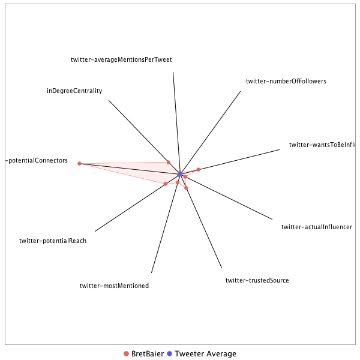

This tweeter has been identified as an influencer. Its target audience and hashtag and word usage are analyzed below.
Basic Statistics
Number of direct followers 1.06610e+06 The peak number of followers that the tweeter had during any time period. Number of retweeters 75 Number of agents that retweeted the key influencer. Number of secondary followers 4724953 The sum of the followers of those who retweeted the key influencer.
Measure Values of Other Influencers node versus Tweeter Average
This compares the measure values of the key influencer with the average values across all tweeters. For each measure line, the center-point means zero and the end-point means the maximum score across all tweeters.

Where was the influencer?
The agent is not recorded as being in any locations. Either he tweeted without geo-tags or we have no information about the tweets he sent.
The agent and retweeters were in 9 different locations.

What hashtags did the influencer use?
This displays the top ranked hashtags that the influencer and its retweeters used.
Rank hashtag Count 1 Russia 320 2 BREAKING 238 3 ISIS 190 4 Comey 187 5 Trump 187 6 GA06 158 7 Manchester 127 8 worldreligiontour 122 9 mtal 110 10 ParisAgreement 104 11 SpecialReport 99 12 Syria 94 13 cbntrumptravels 94 14 Iran 88 15 AHCA 87 16 LondonBridge 82 17 potusabroad 80 18 Mediabuzz 70 19 VAGov 67 20 Qatar 65 21 ge2017 63 22 wmata 63 23 RiyadhSummit 62 24 txlege 62 25 London 56 26 MemorialDay 56 27 China 55 28 ComeyFiring 52 29 Obamacare 51 30 fakenews 49 31 ComeyDay 47 32 MAGA 47 33 ComeyHearing 45 34 SaudiArabia 43 35 NorthKorea 42 36 Alexandria 41 37 ComeyTestimony 41 38 Nats 41 39 Afghanistan 40 40 DPRK 40 41 Israel 40 42 SCOTUS 40 43 alexandriashooting 38 44 Caps 36 45 CongressionalBaseballGame 35 46 BoroughMarket 33 47 FF 33 48 travelban 33 49 JamesComey 32 50 SessionsHearing 31 51 spellingbee 31 52 FBIDirector 29 53 GrenfellTower 29 54 ManchesterBombing 29 55 TimesSquare 29 56 covfefe 29 57 Da 28 58 Iraq 26 59 NATO 26 60 Putin 26 61 SethRich 26 62 Turkey 26 63 Venezuela 26 64 manchesterattack 26 65 LondonAttacks 25 66 RockTheRed 25 67 cyber 25 68 healthcare 25 69 FOIA 24 70 RoadToMajority 24 71 LivinTheBream 23 72 Raqqa 23 73 US 23 74 FBI 22 75 GOP 22 76 MTpol 21 77 ParisAccord 21 78 presidentielle2017 21 79 tcot 21 80 trumprussia 21 81 ACAwards 20 82 CSDP2017 20 83 CapsPens 20 84 Mosul 19 85 POTUS 19 86 Paris 19 87 climatechange 19 88 France 18 89 ParisClimateDeal 18 90 gapol 18 91 BreakingNews 17 92 CosbyTrial 17 93 DDay 17 94 JFK100 17 95 Kabul 17 96 Manila 17 97 Parisclimateaccord 17 98 Russian 17 99 Senate 17 100 TheLead 17
Tweet List
This displays all of the tweets of the influencer ordered from earliest to latest. Click on a tweet to see its status in Twitter.
Number Tweet ID Date Message 1 862326672024064000 2017-05-10 11:21:14-04 Tonight on @SpecialReport I'll sit down with @SpeakerRyan to talk about the latest news in Washington. Have a ? for the Speaker? Tweet me-- https://t.co/c8Km8eB3NJ 2 864091318305402880 2017-05-15 08:13:18-04 RT @DavidRoads: The world is but a canvas to the imagination. -Henry David Thoreau 3 864087142259142656 2017-05-15 07:56:43-04 Yes. Always better with more cowbell. https://t.co/iWJRjK2qZo 4 864087022000123905 2017-05-15 07:56:14-04 Paul is doing well but is preparing for his 9th angioplasty this week & after 3 open heart surgeries-at 9 1/2- he's a tough dude. Thanks! https://t.co/0hvWljHD19 5 864085866091773953 2017-05-15 07:51:39-04 Thanks for the confidence https://t.co/uDnbFxkrz2 6 864085239961985026 2017-05-15 07:49:09-04 Ok. Thank you. https://t.co/7FnXDAp3Ts 7 864082831240294400 2017-05-15 07:39:35-04 This is a huge story. We'll have an in depth look on @SpecialReport tonight. https://t.co/HQmnmtXbyI 8 864082650268659712 2017-05-15 07:38:52-04 RT @ForecasterEnten: Gravis adds another poll to the GA-6 average... Gravis has Ossoff 47, Handel 45. Average overall is Ossoff +0.6 points… 9 864082467556401153 2017-05-15 07:38:08-04 RT @DavidRoads: I used to believe that prayer changes things, but now I know that prayer changes us and we change things. 10 864081795314323457 2017-05-15 07:35:28-04 I have been covering all sides. But thanks-I plan on staying. Thanks for watching. There aren't too many who thought the effort was stellar https://t.co/Wl8cbNtQgz 11 864080527858520064 2017-05-15 07:30:26-04 RT @thehill: McConnell thinks replacing Comey with Merrick Garland is "a fantastic idea": report https://t.co/6xBGy8JSo7 https://t.co/K0D8b… 12 864080487438069760 2017-05-15 07:30:16-04 RT @dcexaminer: "Fifty years ago today: Reagan enters the world stage" https://t.co/OS3BxKZYW2 https://t.co/ODZZYwUXJ6 13 863939697395064832 2017-05-14 22:10:49-04 RT @markknoller: Rest of Pres Trump's week: T: Pres Erdogan of Turkey W: Commencement at @USCGAcademy T: Pres of Colombia F: Departs f… 14 863939605804003328 2017-05-14 22:10:27-04 RT @markknoller: Monday: Pres Trump addresses National Peace Officers Memorial event. Also meets with Crown Prince of Abu Dhabi. 15 863937330817765378 2017-05-14 22:01:25-04 He was on earlier in the show. Sorry you missed him. https://t.co/d0BvSi2DGU 16 863936292622659584 2017-05-14 21:57:17-04 Thank you sir. https://t.co/yCrMx4mCzh 17 863931680637276160 2017-05-14 21:38:58-04 RT @PGATOUR: Some players made 8s on No. 17 in one round. @KyleStanleyGolf went 2-2-2-2 on 17 for the week! #PGATOUR360 ◀️SWIPE▶️ https:/… 18 863931507160829953 2017-05-14 21:38:17-04 RT @JChengWSJ: Head of U.S. Northern Command: “Kim Jong Un very much wants to reach out and touch the homeland." https://t.co/RPlxM9qc4N 19 863931184241401856 2017-05-14 21:37:00-04 @Volman18 I see you fine. 20 863930984210870272 2017-05-14 21:36:12-04 RT @SharylAttkisson: 12 Times Dems/Repubs said no evidence of Trump collusion with Russia https://t.co/asXTZBnrpQ 21 863925082686619649 2017-05-14 21:12:45-04 Thanks for making it that - have a good night. https://t.co/bd3xjh7WIa 22 863924999878569985 2017-05-14 21:12:25-04 RT @albertr46: @BretBaier Good show!!! as much as I hate hearing about the Russian/President stuff it's still news 23 863924093762109441 2017-05-14 21:08:49-04 Thoughts on the show? Suggestions? Thanks for tuning in on Sunday night! 24 863923549781848064 2017-05-14 21:06:39-04 Thanks-Sorry you missed North Korea missile firing- intrview about infrastructure const convention & Chicago shootings. But thnks 4 watching https://t.co/l8yHjAbwDK 25 863908262810464257 2017-05-14 20:05:55-04 RT @FoxNews: BREAKING: North Korea says ballistic missile it tested earlier Sunday can carry a nuclear warhead 26 863880790446419969 2017-05-14 18:16:45-04 Thought I'd leave that one out of the highlight reel. https://t.co/14GwWdsAsy 27 863878172722515969 2017-05-14 18:06:21-04 Awesome https://t.co/JU7NnZ7Q4A 28 863868239662768128 2017-05-14 17:26:52-04 RT @LMartinezABC: US officials say North Korean missile launched yesterday was a KN-17, first successful flight, three previous tests had… 29 863863224483106816 2017-05-14 17:06:57-04 Join us tonight at 8pmET for a special edition of #SpecialReport on @FoxNews 30 863820321400475648 2017-05-14 14:16:28-04 RT @FoxNewsResearch: Private Sector Job Gains: Feb to Apr •Total: +493,000 •|| of total → 73.2% were service-producing •|| of total → 26.8%… 31 863745242884956160 2017-05-14 09:18:08-04 RT @THEPLAYERSChamp: We wouldn't be here without you. Happy Mother's Day! https://t.co/SF6BoLwFJH 32 863730418624995328 2017-05-14 08:19:13-04 Happy Mother's Day to all of the Moms out there. amyhbaier is the center of the universe in our… https://t.co/mpujZNE7aQ 33 863489361102467073 2017-05-13 16:21:21-04 Nicely done @stevestricker !! https://t.co/JdPKZcF5UU 34 863489016716513280 2017-05-13 16:19:59-04 RT @DavidRoads: You can do anything if you have enthusiasm. Enthusiasm is the yeast that makes your hopes rise to the stars. -Henry Ford 35 863488895136215040 2017-05-13 16:19:30-04 RT @ABCPolitics: Pres. Trump says quick decision on new FBI director possible: Candidates "very well-known...they've been vetted over their… 36 863488238723485696 2017-05-13 16:16:53-04 RT @FoxNewsResearch: Homegrown Jihadist Cases in the U.S. 2012: 8 2013: 17 2014: 29 2015: 44 2016: 38 2017: 9 (YTD) https://t.co/Uij1z3n2y1 37 863463722035142656 2017-05-13 14:39:28-04 RT @FoxNewsResearch: Southwest Border Apprehensions/Inadmissibles (Jan-April) Fiscal Year 2013: 181,883 2014: 194,104 2015: 140,183 2016:… 38 863421371925352448 2017-05-13 11:51:11-04 RT @FoxNews: .@POTUS: "In America, we don't worship government. We worship God." https://t.co/DqKnHKaseP https://t.co/zlbi5PEsDv 39 863256576039276544 2017-05-13 00:56:20-04 RT @dcsportsbog: Here are a million fan videos of John Wall's game-winner, from the stands. They're all good. https://t.co/q165fkJVwW 40 863248738160173059 2017-05-13 00:25:12-04 RT @WashWizards: JOHN WALL'S CITY!!! #DCFamily https://t.co/J3Y8hWb7E7 41 863245318510477312 2017-05-13 00:11:36-04 RT @PGATOUR: All 29 water balls on No. 17 from Friday. https://t.co/0LSku6t7w6 42 863234406756077568 2017-05-12 23:28:15-04 With my beautiful wife amyhbaier at the @twballet gala at @airandspace @ National Air and Space… https://t.co/lGdulUiF4S 43 863233093892788227 2017-05-12 23:23:02-04 Congrats @WashWizards !!! What a game. On to game 7-- you gotta believe 44 863175452143349761 2017-05-12 19:33:59-04 Ok thoughts on show? Suggestions? Make it a great weekend! Happy Mother's Day early to all moms! Mine @Pat_Baier & mom-in-law Barbie Hills 45 863139911800586240 2017-05-12 17:12:45-04 RT @JamesRosenTV: Tonight on #SpecialReport @BretBaier 6p: @DNC chair @TomPerez responds to claims he sought to banish pro-life Democrats.… 46 863139846004641793 2017-05-12 17:12:30-04 RT @trish_regan: Studying up. Talking #trade #china #trump Econ policy with @bretbaier on specialreport tonight… https://t.co/sLTOkhSRJ3 47 863124419362918401 2017-05-12 16:11:12-04 RT @FoxNews: Cyber attack spreads across 74 countries; some UK hospitals crippled https://t.co/SsyEUlZHu3 48 863124341952847876 2017-05-12 16:10:53-04 RT @dcexaminer: NEW: Trump floats killing daily press briefings, doing press conferences himself every two weeks https://t.co/NgvuBqyNau ht… 49 863118104192266241 2017-05-12 15:46:06-04 RT @starsandstripes: Defense Intelligence Agency Director Lt. Gen. Vincent Stewart warns of Afghan gains being lost: https://t.co/qM05bIno5… 50 863104167363174400 2017-05-12 14:50:43-04 RT @learyreports: Schumer's office says Rosenstein has agreed to request to brief senators next week. 51 863103496593321984 2017-05-12 14:48:03-04 RT @SkyNews: Theresa May's response to today's NHS cyber attack #NHScyberattack https://t.co/M5X8cnR2M6 52 863103433620033536 2017-05-12 14:47:48-04 RT @jwpetersNYT: Luttig, Cornyn, Rogers, Ray Kelly and a few others. Ayotte is looking less and less likely, @maggieNYT & I report. https:/… 53 863100446843523072 2017-05-12 14:35:56-04 RT @FoxNews: AG Sessions: "I want to thank every law enforcement officer in America... We honor your service." https://t.co/ucURDN7Bxo 54 863100391554154498 2017-05-12 14:35:43-04 RT @NBCNightlyNews: BREAKING: White House refuses to confirm or deny if Pres. Trump has recording devices in Oval Office or Residence. http… 55 863099811725266945 2017-05-12 14:33:25-04 RT @TimJHanrahan: Spicer takeaways: Trump's Comey tweet wasn't a threat Not discussing whether tapes exist Trump didn't demand loyalty oath 56 863099485953683457 2017-05-12 14:32:07-04 RT @toddgillman: .@JohnCornyn re FBI job: “I have the distinct privilege of serving 28m Texans &...that is where my focus remains” https://… 57 863099121057632256 2017-05-12 14:30:40-04 RT @thehill: Top Intel Democrat demands release of Trump's tapes of FBI Director Comey https://t.co/E7kFZjr5mo https://t.co/p6unKM1k0m 58 863088824846618624 2017-05-12 13:49:45-04 RT @dcexaminer: Africa has new Ebola outbreak https://t.co/iJTgRhnDyr https://t.co/Z5DlfVrOnd 59 863088566120984579 2017-05-12 13:48:44-04 RT @thehill: #BREAKING: James Comey "not worried" about possible Trump tapes: report https://t.co/4RnWsX4znj https://t.co/Kvib6ia9H4 60 863088544054747138 2017-05-12 13:48:38-04 RT @FoxNews: HR McMaster on ISIS strategy: "[@POTUS] doesn't want to telegraph what he's doing tactically day to day." https://t.co/gltfzGj… 61 863075637858361344 2017-05-12 12:57:21-04 RT @FoxBusiness: WATCH @SecretaryRoss discuss the benefits of the new trade agreement with China with @TeamCavuto. https://t.co/BvncizkNgX… 62 863074516796407809 2017-05-12 12:52:54-04 RT @SusanPage: From the (Republican) chairman of the Senate Judiciary Committee --> https://t.co/4dQ9XcaelJ 63 863073580791287808 2017-05-12 12:49:11-04 RT @FoxNewsResearch: Russian Aggression: Apr: bombers buzz AK 4 straight nights Mar: spy ship off US coast Feb: jets buzz Navy shi… 64 863073537678077953 2017-05-12 12:49:01-04 RT @dcexaminer: Trump tax lawyers deny Russian income beyond previously disclosed transactions https://t.co/ghtFDZLIYt https://t.co/dweAzQA… 65 863073464999174150 2017-05-12 12:48:43-04 RT @jimsciutto: This is just incredible to watch - keep in mind he's moving at 17,500 mph! https://t.co/aGaJhR9Ezy 66 863065210822823937 2017-05-12 12:15:55-04 RT @FoxNews: New Poll Finds Approval for GOP Health Care Bill at 21 Percent https://t.co/WKILsELfab 67 863065175926214656 2017-05-12 12:15:47-04 RT @dcexaminer: NEW: Melania Trump says the White House movie theater will be open for the first time for public tours https://t.co/fgfeDet… 68 863063602449850368 2017-05-12 12:09:32-04 RT @Sifill_LDF: So guys...this just happened on 59th St in NYC. @melissamccarthy @NBCSN #Spicey https://t.co/PtOpneSRGU 69 863045025101479937 2017-05-12 10:55:43-04 RT @thehill: Healthcare CEO calls for national debate about single-payer health plan https://t.co/yRhhre8Xg1 https://t.co/Op6QGULzpi 70 863042962632167426 2017-05-12 10:47:31-04 RT @alexcguillen: Trump EPA reverses Obama block on controversial copper mine https://t.co/oZN0vLDsmY 71 863040414294700032 2017-05-12 10:37:23-04 Thanks. We'll cover it all. And take a few deep breaths along the way. https://t.co/WTIj1dvlXo 72 863039762717962240 2017-05-12 10:34:48-04 RT @FoxNewsResearch: States w/ Highest Rates of Drug Overdose Deaths (2015) WV: 41.5/100K NH: 34.3/100K KY: 29.9/100K OH: 29.9/100K RI: 28… 73 863020035375321088 2017-05-12 09:16:25-04 RT @foxnewsvideo: Over one thousand suspected gang members arrested by #ICERaids @foxandfriends https://t.co/RTuhNOGH5z 74 863019992106848256 2017-05-12 09:16:14-04 RT @FoxNews: Breaking News: There are reports of an active shooter situation in Kirkersville, Ohio. https://t.co/M2dzwtIT4e 75 863019196954890240 2017-05-12 09:13:05-04 https://t.co/YeTUn7lQI4 76 863017140999335936 2017-05-12 09:04:55-04 Agreed. We played the sound bites last night. https://t.co/99Q2q0PVdn 77 863014637876412417 2017-05-12 08:54:58-04 Emoji-- ha . Couldn't find it. https://t.co/bKh5jw8VIN 78 863012815547891713 2017-05-12 08:47:43-04 RT @AP_Politics: BREAKING: Trump says fired FBI Director James Comey ‘better hope that there are no "tapes"’ of their conversations. 79 863012787244683264 2017-05-12 08:47:37-04 Yes it is. It seems that the POTUS is tempting some committee to subpoena the "tapes". Another yet to drop https://t.co/rOCPNRNUYA 80 863011531017121792 2017-05-12 08:42:37-04 RT @bpolitics: Trump says Comey should hope there aren't "tapes" before he leaks information; also floats ending press briefings https://t.… 81 862796754055569408 2017-05-11 18:29:10-04 Painful. https://t.co/I9fOV89zao 82 862794898482900992 2017-05-11 18:21:48-04 Comey made his decision to usurp the spotlight and hold that news conference B/C of the meeting. That was the point. https://t.co/CdioGT568l 83 862793155762147328 2017-05-11 18:14:52-04 I will clarify. I said -essentially -- that meeting enabled comey to do what he did. https://t.co/tE2Tl9Fkak 84 862793000056967169 2017-05-11 18:14:15-04 Last jersey I am putting on on air. Congrats - big win for you. Go get em. https://t.co/VEHyYvGl89 85 862771898190626823 2017-05-11 16:50:24-04 RT @WSJ: Sen. Mike Lee's suggestion amid the Comey uproar: Make Merrick Garland the next FBI chief https://t.co/qWt7s4NNSR 86 862769498818039809 2017-05-11 16:40:52-04 @SeanFine27 he answered a question from a reporter... push play. And his spokesman provided the same answer 87 862768641665900545 2017-05-11 16:37:28-04 Dep AG Rosenstein tells reporter he DID NOT threaten to quit if the WH didn't change story -- https://t.co/djwlieKCjT 88 862757469478690817 2017-05-11 15:53:04-04 About Pres @realDonaldTrump's letter & intvw about being told he's NOT a target of investigations by the FBI- THIS=> https://t.co/qKs4Bp5X9o 89 862747364150345730 2017-05-11 15:12:55-04 RT @FoxNews: Trump: Comey a 'grandstander,' 'showboat' https://t.co/X0Z11uLT0u https://t.co/wGcHTzrljc 90 862747257149562880 2017-05-11 15:12:29-04 RT @thehill: Former Democratic lawmaker found guilty of funneling charity money to personal account https://t.co/D7KIm93bQc https://t.co/6Y… 91 862747234684862465 2017-05-11 15:12:24-04 RT @JenniferJJacobs: Senate confirms Robert Lighthizer as Trump's US trade representative, with a vote of 82-14. https://t.co/amhX05rWpy 92 862740038324453378 2017-05-11 14:43:48-04 RT @FoxNews: .@SarahHuckabee: "He fired him because he was not fit to do the job. It's that simple. This shouldn't be a complicated process… 93 862739998092734464 2017-05-11 14:43:39-04 RT @dcexaminer: JUST IN: Former Rep. Corrine Brown found guilty of fraudulently taking hundreds of thousands from sham charity https://t.co… 94 862731256651501569 2017-05-11 14:08:55-04 RT @TheIJR: Trump Says He Personally Called Comey and Asked If He Was Under Investigation — And Got an Answer https://t.co/XQORgTxU2r 95 862726478890504194 2017-05-11 13:49:55-04 RT @DavidWright_CNN: .@PamelaBrownCNN @evanperez Rosenstein told officials that Comey didn't deserve to learn about firing from TV news, wa… 96 862726429708038146 2017-05-11 13:49:44-04 RT @PamelaBrownCNN: Department of Justice spokeswoman denies DAG Rod Rosenstein threatened to resign in wake of Comey firing after speaking… 97 862719517683851264 2017-05-11 13:22:16-04 RT @JeffreyGoldberg: Sobering to realize that we're four months into a four-year presidential term. 98 862719300767035393 2017-05-11 13:21:24-04 RT @dcexaminer: #BREAKING: Trump: "I was going to fire'" Comey regardless of recommendation https://t.co/X3iaG2nZGZ https://t.co/oBhoH1AuZG 99 862719241144938496 2017-05-11 13:21:10-04 RT @dcexaminer: Russian media: Trump, Putin to meet in July https://t.co/LY406XAdyg https://t.co/za0DYOYx68 100 862717511606972416 2017-05-11 13:14:17-04 RT @BraddJaffy: The President of the United States says he directly asked the FBI director if he was under investigation https://t.co/Hx2Xx… 101 862717439234244608 2017-05-11 13:14:00-04 RT @AP: BREAKING: Trump: `I was going to fire Comey' regardless of recommendation from deputy AG. 102 862717146698219522 2017-05-11 13:12:50-04 RT @JenniferJJacobs: Trump says didn't pressure Comey to drop FBI probe of campaign. "I want to find out if there was a problem" @NBCNews h… 103 862715724854431745 2017-05-11 13:07:11-04 RT @FoxNewsInsider: Who Should Replace Comey as FBI Director? The @SpecialReport Panel Weighs In @BretBaier https://t.co/nb9mJjGd6k https:/… 104 862683160500461568 2017-05-11 10:57:47-04 RT @toddzwillich: More McCabe: "You cannot stop the people of the FBI... from doing the right thing." https://t.co/v10f02xGlm 105 862683112823803910 2017-05-11 10:57:36-04 RT @DavidMDrucker: "You cannot stop the men & women of the FBI from doing the right thing." -McCabe 106 862679868517097472 2017-05-11 10:44:43-04 RT @FoxNews: Director of National Intelligence Dan Coats: “North Korea is an increasingly grave national security threat to the United Stat… 107 862660078192742400 2017-05-11 09:26:04-04 RT @dcexaminer: Deputy AG Rosenstein threatened to resign after WH put blame for Comey firing on him: report https://t.co/jfEdd0aDNX https:… 108 862645599665094656 2017-05-11 08:28:32-04 RT @markknoller: On @CBSThisMorning, @SHSanders45 says she expects Pres Trump to visit FBI HQ in the "next few day" to reassure personnel a… 109 862485445636173825 2017-05-10 21:52:09-04 Thanks https://t.co/zOD2kUd6Gq 110 862476612364849152 2017-05-10 21:17:03-04 Come on CAPS! @capitals At the game w/ executive producer Doug rohrbeck - he looks like this… https://t.co/EpDLllWErv 111 862470277527199744 2017-05-10 20:51:52-04 RT @thehill: JUST IN: Comey sends goodbye letter to agents after firing: "It is done, and I will be fine" https://t.co/FIqTCsceyU https://t… 112 862452689459871745 2017-05-10 19:41:59-04 RT @Capitals: Game 7 starts NOW! #CapsPens #RockTheRed 113 862446599540269056 2017-05-10 19:17:47-04 Or an anchor covering all sides. Thanks for watching. https://t.co/mYqbZfsgni 114 862446469558792193 2017-05-10 19:17:16-04 Really? He didn't think so. I was just asking some pointed questions. Like I would any democrat or another republican. https://t.co/bX0xk42QZ6 115 862445382105739264 2017-05-10 19:12:57-04 Not in hockey. Or NBA Hope you're well! https://t.co/gNLBADisKk 116 862444656411455489 2017-05-10 19:10:04-04 RT @Capitals: Lookin' fast tonight. #RocktheRed https://t.co/qoCgJV77HI 117 862443593281277954 2017-05-10 19:05:50-04 RT @dcexaminer: U.S. to ban laptops in plane cabins in all flights from Europe: Report https://t.co/ig2L7i8zYb https://t.co/xNO9Gq7Rwn 118 862443386934091777 2017-05-10 19:05:01-04 RT @thehill: "SNL" teases Melissa McCarthy's return as Sean Spicer https://t.co/nji30RDYVk https://t.co/7mRQGwW60V 119 862426231484153857 2017-05-10 17:56:51-04 RT @PRyan: Coming up soon: My interview with @BretBaier. Be sure to watch at 6pm ET/ 5pm CT on @FOXNews. 120 862426217529704449 2017-05-10 17:56:48-04 RT @FoxNews: TONIGHT: @BretBaier Talks to @SpeakerRyan Following Comey Firing - Tune in at 6p ET on Fox News Channel! https://t.co/hi0bDCmx… 121 862424183686541313 2017-05-10 17:48:43-04 RT @FoxNews: .@PatrickBuchanan: "I'm delighted @POTUS met with the Russians... You have to do it. That's the world." #FoxNewsSpecialists ht… 122 862389979594592256 2017-05-10 15:32:48-04 RT @paleofuture: Photos of Trump's meeting with Lavrov and Kislyak just hit the Getty wire and they're all credited to Russian news agency… 123 862388724386201602 2017-05-10 15:27:48-04 RT @FoxNews: Do you agree with @SarahHuckabee? https://t.co/LNj6iTtTCM 124 862370855451590658 2017-05-10 14:16:48-04 Senate Intel Committee Spokeswoman confirms former FBI Dir. Comey invited by Intelligence Committee to meet in CLOSED SESSION next Tuesday 125 862347249015193600 2017-05-10 12:43:00-04 I reported what DOJ is saying about this story. Period. Getting Senate Intel to weigh in soon. Thanks. https://t.co/51UtOy1czn 126 862341114623340544 2017-05-10 12:18:37-04 RT @FoxNews: Daughter of cop killed in line of duty gets prom surprise https://t.co/RcETwMCKCx 127 862341105966346241 2017-05-10 12:18:35-04 DOJ is pushing back hard- they say any reporting that Comey asked Rosenstein for more resources is "completely false" -now working Sen Intel https://t.co/VzcRqRxRpQ 128 862340137774133248 2017-05-10 12:14:45-04 comes with the territory. all good. https://t.co/lrfN6OcJUJ 129 862338820683030529 2017-05-10 12:09:30-04 Sources in reporting say Sen. Intell leaders were briefed on request...we're trying to get ground truth between DOJ firm denial & stories 130 862338242770870273 2017-05-10 12:07:13-04 DOJ spokesman tells reporters the story of FBI Dir Comey requesting more money for Russia probe from Dep AG Monday is "Absolutely False" 131 862336503757885440 2017-05-10 12:00:18-04 RT @FoxNewsResearch: At 3 years, 8 months and 6 days, James Comey had the shortest tenure of any appointed FBI Director since 1924. #Comey… 132 862336453145243648 2017-05-10 12:00:06-04 Nope. We always have covered all sides. Welcome to @SpecialReport 6pm ET https://t.co/i6htGPbSlm 133 862336251659259905 2017-05-10 11:59:18-04 RT @peterbakernyt: Which White House aide thought the two people Trump should be seen with today are Russia’s foreign minister and Henry Ki… 134 862336115562479617 2017-05-10 11:58:46-04 RT @washingtonpost: Days before he was fired, Comey sought more money for the FBI's Russia investigation https://t.co/NfciCHkg7F 135 862336092292472832 2017-05-10 11:58:40-04 RT @thehill: #BREAKING: Comey asked Justice Dept. for funding increase for Russia probe days before he was fired: report https://t.co/9hGb9… 136 862336052769542145 2017-05-10 11:58:31-04 This was the same Russian Amb whose meetings w/ Sessions led to the AG recusing himself & whose phone calls w/ NSA Flynn led to his firing https://t.co/osMWp3ykaK 137 862333734724546562 2017-05-10 11:49:18-04 This is something to watch. Running it down now. https://t.co/RuAIgzlRwo 138 862333621004365824 2017-05-10 11:48:51-04 RT @thehill: Pence: Trump's decision to fire Comey was not about Russia probe https://t.co/KEL3kTfifE https://t.co/53XpBPNMV1 139 862333523356774400 2017-05-10 11:48:28-04 RT @brithume: Good reporting here: Byron York: To fire Comey, Trump team waited for Rosenstein https://t.co/vtDyA6vlW9 via @dcexaminer 140 862333459662024704 2017-05-10 11:48:12-04 RT @FoxNews: Reporter: "Why did you fire Director Comey?" @POTUS: "Because he wasn't doing a good job." https://t.co/8CudX3I6kJ 141 862331668920754178 2017-05-10 11:41:05-04 RT @thehill: JUST IN: Senate Dems threaten to block committee hearings over Comey firing https://t.co/iBxoyah4ps https://t.co/qUjLJf1Q57 142 862331594861944833 2017-05-10 11:40:48-04 RT @FoxBusiness: .@VP: "@POTUS made the right decision at the right time." https://t.co/JU1emMjvxb 143 862331566609092608 2017-05-10 11:40:41-04 RT @SpecialReport: Another photo of President @realdonaldtrump in the Oval Office with the Russian Ambassador to the US Sergey... https://t… 144 862327828293054464 2017-05-10 11:25:50-04 RT @DailyMailUK: Heart-warming moment tearful dog owner is reunited with his two miniature schnauzers stolen by car thieves https://t.co/O6… 145 862327208748208128 2017-05-10 11:23:22-04 RT @markknoller: No WH press photo op, but Russian Ministry of Foreign Affairs posted its own pic of Trump-Lavrov greeting in the Oval Offi… 146 862309963951202304 2017-05-10 10:14:51-04 RT @dcexaminer: McConnell pledges "fair" and "timely" confirmation for Comey replacement https://t.co/3GTgB0Zawf https://t.co/UP6wVb4GR3 147 862305012801818624 2017-05-10 09:55:10-04 Um. CAPS! @Capitals https://t.co/Qz0G8VJ2gw 148 862304916446085120 2017-05-10 09:54:47-04 Ok thanks. Megyn is at NBC now and I plan on staying at Fox News. But thanks for watching - have a great day. https://t.co/j4spDnv7g1 149 862304616259739649 2017-05-10 09:53:36-04 It snaps in place every morning. @LEGO_Group https://t.co/Iq81Fg2f4q 150 862303383998390276 2017-05-10 09:48:42-04 Thank you https://t.co/wFZNAZoXi8 151 862302988446162944 2017-05-10 09:47:07-04 RT @ThisWeekABC: .@SenSchumer: "The dismissal of Director Comey establishes a very troubling pattern." https://t.co/zC4XLLX5Hy https://t.co… 152 862302683096649729 2017-05-10 09:45:55-04 RT @kararowland: Schumer: "If there was ever a time when circumstances warranted a special prosecutor, it is right now." 153 862302500476661760 2017-05-10 09:45:11-04 RT @DSenFloor: .@SenSchumer: there is little reason to think that Mr. Rosenstein’s letter is the true reason that President Trump fired Dir… 154 862301796815040512 2017-05-10 09:42:23-04 RT @mmcauliff: McConnell: What we have now is Dems complaining about the removal of an FBI director who they complained about 155 862301699863711745 2017-05-10 09:42:00-04 RT @edatpost: Now, McConnell quoting Democratic criticisms of Comey back to them. 156 862301684235718656 2017-05-10 09:41:56-04 RT @edatpost: McConnell, acknowledging Democrats in the chamber, trolls them by talking first about their calls to revamp the ACA. 157 862301480518168576 2017-05-10 09:41:08-04 Same company so either one works. Thanks. Have a great day. https://t.co/uCwGpEBjUi 158 862301112732352512 2017-05-10 09:39:40-04 Glad to have you on Mr Speaker. Talk to you later. https://t.co/Xuf8tcViiN 159 862300858045935616 2017-05-10 09:38:39-04 Let's GO CAPS! @Capitals https://t.co/pv7kV0QvTd 160 862300694073798656 2017-05-10 09:38:00-04 RT @FoxBusiness: Sen @RandPaul: "Nobody's happy with [Comey's] tenure at the FBI. I think it was long past time for him to go." https://t.c… 161 862294328596721665 2017-05-10 09:12:43-04 Maybe forward. But that was someone else's slogan I think. Thanks! https://t.co/cwyFqXb6x2 162 862293889956417536 2017-05-10 09:10:58-04 Thank you. -- glad you like it! https://t.co/JPsy9IYZRb 163 862293813188067332 2017-05-10 09:10:40-04 Thanks. https://t.co/FUXXP9nfeP 164 862292790188920832 2017-05-10 09:06:36-04 Thanks for watching while you have. Good luck with your viewing. We'll be here reporting - if you come back. https://t.co/1jK5StZ9ko 165 862292413515259909 2017-05-10 09:05:06-04 RT @JenniferJJacobs: Ex-Trump aide Roger Stone has been telling reporters he advised Trump to fire FBI director Comey. Trump says false. H… 166 862291572272058369 2017-05-10 09:01:46-04 RT @washingtonpost: Trump to sit down with Russian foreign minister, one day after firing Comey https://t.co/fpjnY8NCdV 167 862291530459095040 2017-05-10 09:01:36-04 RT @dcexaminer: Entire Republican conference to meet three days per week on Obamacare repeal plan https://t.co/nhd0tqrbLE https://t.co/dRSb… 168 862291483600310273 2017-05-10 09:01:24-04 Good morning! Thoughts on the day? Suggestions? Something tells me we may have another busy news day. 169 862290863032086528 2017-05-10 08:58:56-04 Or just covering the fast moving news every day - the good & the bad from all sides. Same show-same gr8 team -same anchor. Thanks 4 watching https://t.co/odh9wMDu44 170 862176261598216193 2017-05-10 01:23:33-04 RT @ABC: Pres. Trump, Rex Tillerson to meet with Russian foreign minister in Oval Office on Wednesday, White House confirms. https://t.co/3… 171 862145535477784577 2017-05-09 23:21:28-04 RT @axios: At least four GOP senators have raised concerns about Comey's firing: Burr, Flake, McCain, Sasse https://t.co/Rodn56oxUU 172 862143466524086273 2017-05-09 23:13:14-04 RT @nytimes: The front page of The New York Times for Wednesday, May 10, 2017 https://t.co/umbYQ6HM05 173 862137342080974848 2017-05-09 22:48:54-04 RT @jayawallace: Watch: special edition of @BretBaier on the firing of FBI director James Comey at 11p et on @FoxNews 174 862136885715578881 2017-05-09 22:47:05-04 RT @JamesRosenTV: I join the All-Star panel in an all-new special edition of #SpecialReport @BretBaier on @POTUS and the #ComeyFiring: Tune… 175 862131477550686208 2017-05-09 22:25:36-04 RT @brithume: For better or worse, no FBI director since J. Edgar Hoover had taken so large a role in the political life of this country as… 176 862123475925946369 2017-05-09 21:53:48-04 All Presidents don't do the list of those firings in that way. Thanks for watching. https://t.co/43WkRzr87O 177 862123226054438912 2017-05-09 21:52:49-04 Join me at 11pmET on @FoxNews #BreakingNews https://t.co/HDXMvpXs2E 178 862116910414131200 2017-05-09 21:27:43-04 RT @dcexaminer: James Comey fired one day before US-Russia meetings https://t.co/KgYnkXEkTt https://t.co/kGL0NEOTkh 179 862116004326932480 2017-05-09 21:24:07-04 Joining @TheFive coming up next on @FoxNews 180 862109746681270273 2017-05-09 20:59:15-04 RT @ABC: Marco Rubio "surprised" by Comey's firing, "but it's a decision the president's made and we'll go from here." https://t.co/PGVFL9o… 181 862109634039033856 2017-05-09 20:58:48-04 RT @thehill: Sessions was told to find reasons to fire Comey: reports https://t.co/ibxfVp6AVr https://t.co/FmHhIKutvF 182 862108627120926720 2017-05-09 20:54:48-04 RT @spectatorindex: UPDATE: James Comey, upon seeing news of his firing on a TV in a FBI office, thought it was a 'funny prank' (Via The N… 183 862107668303020032 2017-05-09 20:50:59-04 RT @CNNPolitics: Kellyanne Conway says firing FBI Director James Comey is "not a cover up" https://t.co/xDySjA31EQ 184 862100451206078464 2017-05-09 20:22:19-04 RT @FoxNews: .@SenSanders responded to @POTUS's firing of @FBI Director Comey. https://t.co/Q9wdOUQbYS https://t.co/i9KgP7dmXW 185 862100163803959298 2017-05-09 20:21:10-04 RT @TimOBrien: Senate Intel Chairman Richard Burr said he is “troubled by the timing and reasoning of Director Comey’s termination.” https:… 186 862100097462620161 2017-05-09 20:20:54-04 RT @DavidMDrucker: Irony as thick as cement. => https://t.co/kysk3QDjrE 187 862099751126396928 2017-05-09 20:19:32-04 RT @Capitals: Is it tomorrow yet? #Game7 #RockTheRed https://t.co/KcN0cIxcSR 188 862098670648528897 2017-05-09 20:15:14-04 RT @AP: In possible sign of closer ties between US and Russia, Trump plans to meet Russia's foreign minister at White House. https://t.co/n… 189 862097868148092928 2017-05-09 20:12:03-04 I am being a dweeb for a retweet? Well - thanks for watching while you have. Have a good night. https://t.co/FYWMBB9W2x 190 862097509312757761 2017-05-09 20:10:37-04 Yes it is. But it's a big news night. And coffee is flowing. https://t.co/wBy7VOq0O2 191 862096810831204352 2017-05-09 20:07:51-04 RT @FoxNewsResearch: In July 1993, President Clinton fired FBI Director William Sessions citing questions about his conduct and leadership 192 862095537029382153 2017-05-09 20:02:47-04 RT @FoxNews: Trump fires Comey: Reaction to FBI Director's termination https://t.co/Qy0NRSHcjM via @foxnewspolitics https://t.co/4KdexYDN94 193 862094626026651648 2017-05-09 19:59:10-04 RT @dcexaminer: Flashback: Trump shook Comey's hand, said he was "more famous than me" https://t.co/ymJRH22bkL https://t.co/FZq5gBb5Ga 194 862094552026550272 2017-05-09 19:58:52-04 RT @markknoller: Another official says Pres Trump's letter was conveyed to Comey at FBI in Los Angeles, where he was giving previously sche… 195 862091020045094913 2017-05-09 19:44:50-04 RT @nytmike: Comey learned of firing as he addressed FBI employees in LA. TV screens in background flashed news of firing. Letter was then… 196 862086040965840897 2017-05-09 19:25:03-04 Please join me for a special edition of #SpecialReport at 11pmET on @FoxNews on the breaking news of FBI Director Comey's firing. 197 862085216097230848 2017-05-09 19:21:46-04 RT @rollcall: Few lawmakers got heads up on Comey firing https://t.co/QtFDoIBFrc https://t.co/VSkvcn21Vk 198 862085146782158851 2017-05-09 19:21:30-04 RT @AshleyRParker: So at least three senators got a personal call from Trump before the Comey news broke — Feinstein, Graham, and Schumer. 199 862084941890412544 2017-05-09 19:20:41-04 RT @NixonLibrary: FUN FACT: President Nixon never fired the Director of the FBI #FBIDirector #notNixonian https://t.co/PatArKOZlk 200 862081473838501889 2017-05-09 19:06:54-04 RT @ABC: Comey's termination was read to him over the phone while he was on bureau travel in L.A., FBI sources tell @ABC. https://t.co/Aw0Z… 201 862081350765080581 2017-05-09 19:06:25-04 RT @NewsThisSecond: The White House says it won't have any more statements on Comey's firing tonight. DOJ is still referring inquiries to W… 202 862077763586592769 2017-05-09 18:52:10-04 RT @arogDC: .@SenatorLeahy: "This is nothing less than Nixonian." https://t.co/SffVEVbArn 203 862071223278284800 2017-05-09 18:26:10-04 RT @FoxNews: Herridge on info @WhiteHouse released on dismissal of James Comey: "He colored outside the lines. He had brought disrepute on… 204 862068115978563584 2017-05-09 18:13:49-04 RT @markknoller: And in a letter to Pres Trump, Atty Gen Sessions wrote " a fresh start is needed at the leadership of the FBI." https://t.… 205 862063271804841986 2017-05-09 17:54:35-04 Letter @realDonaldTrump sent to FBI Director Comey https://t.co/XAjr3puS1P 206 862062656445976577 2017-05-09 17:52:08-04 White House statement on firing of FBI Director Comey https://t.co/DsboSrv5hm 207 862062085055926272 2017-05-09 17:49:52-04 RT @USATODAY: #BREAKING President Trump fires FBI Director James Comey https://t.co/Az0mdKLx9S 208 862062045683953665 2017-05-09 17:49:42-04 RT @Manning_FoxNews: Update: #POTUS accepts recommendation from AG and deputy AG regarding the dismissal of the James Comey, director of FB… 209 862061455969071105 2017-05-09 17:47:22-04 Breaking News: @POTUS has fired FBI Director James Comey. The latest on #SpecialReport 6pmET on @FoxNews. 210 862055926941065216 2017-05-09 17:25:23-04 RT @Wendys: .@carterjwm is now the most retweeted tweet of all-time. That’s good for the nuggets, and $100k to @DTFA. Consider it done. #nu… 211 862005990824308736 2017-05-09 14:06:58-04 RT @JamesRosenTV: VIDEO: My #Special Report @BretBaier report from Richmond VA on appellate oral arguments btw @POTUS and @ACLU attys. http… 212 861992293502472192 2017-05-09 13:12:32-04 RT @MotivatedLiving: Don't start your day with the broken pieces of yesterday. Every morning we wake up is the first day of the rest of our… 213 861992261294411776 2017-05-09 13:12:24-04 RT @dcexaminer: JUST IN: Trump administration approves providing heavier weapons to Syria's Kurds, despite Turkish objections https://t.co/… 214 861984471146430466 2017-05-09 12:41:27-04 RT @igorbobic: Raul Labrador is running for governor: https://t.co/QrGek0ZrhU via @MEPFuller 215 861984445875748864 2017-05-09 12:41:21-04 RT @Newsweek: Mahmoud Abbas wants to meet Benjamin Netanyahu and make Donald Trump's peace deal happen https://t.co/Ec4DgCEe4C https://t.co… 216 861981254274744320 2017-05-09 12:28:40-04 RT @LucasFoxNews: Days before Pentagon sends Afghanistan plan to White House, Iran delivers its plan to Kabul... https://t.co/Jaz5vnAC3B 217 861960139624067072 2017-05-09 11:04:46-04 RT @DailyBaller: Paul Ryan Confidently Predicts Tax Reform Will Get Done This Year https://t.co/SAnX7HiSzq by @kaitlancollins https://t.co/… 218 861960062578954240 2017-05-09 11:04:28-04 RT @FoxBusiness: Oil buckles as concern grows over battle of OPEC vs shale https://t.co/PYtZT35WLT 219 861957761503985665 2017-05-09 10:55:19-04 RT @KimStrassel: These could be very illuminating. https://t.co/QlHhefyXG6 220 861952162452185089 2017-05-09 10:33:04-04 RT @dcexaminer: Ted Cruz shops one-and-done bill to repeal and replace Obamacare https://t.co/AORWLHTjmG https://t.co/shKhTQMH5A 221 861951981866418177 2017-05-09 10:32:21-04 RT @FoxNewsResearch: 20 of 98 U.S.-designated terror groups globally operate in the Afghanistan-Pakistan region—world's highest concentrati… 222 861937593285582850 2017-05-09 09:35:10-04 RT @MailOnline: Liberal human rights lawyer Moon Jae-in is 'elected South Korea's president', exit polls show https://t.co/eHjPduzERD 223 861923396594143232 2017-05-09 08:38:46-04 RT @AP_Politics: White House puts off discussion on whether US should remain part of Paris climate change accord, reports @mbieseck: https… 224 861921000212115458 2017-05-09 08:29:14-04 Ok that is funny Larry! I think we need a side by side pic. With @antoniosabatojr https://t.co/iXp4kVrRhe 225 861919672865886208 2017-05-09 08:23:58-04 Happy Birthday to @DanaPerino and @JaniceDean ‼️. Two great people. 226 861918423332388864 2017-05-09 08:19:00-04 I put in a request for a POTUS interview twice a week. And have since my last interview one week before Election Day. Still working it. https://t.co/P1bcX7Emzp 227 861916755014422529 2017-05-09 08:12:22-04 RT @washingtonpost: Exit polls suggest liberal Moon has won the South Korean presidential election https://t.co/GifM93wa6S 228 861912602544361476 2017-05-09 07:55:52-04 Good morning! Thoughts on the day? Suggestions? . Make it a great day‼️ 229 861906933061758976 2017-05-09 07:33:20-04 RT @FoxNewsResearch: Closer Look → Federal Judicial Vacancies: •Total: 129 (49 judicial emergencies) •Longest Vacancy: 11 years + https:/… 230 861799638793433088 2017-05-09 00:27:00-04 RT @dcexaminer: Trump military advisers want 3,000 more troops to fight Taliban: Report https://t.co/en9bRYLeqG https://t.co/fhUnY8mwVc 231 861767065404940293 2017-05-08 22:17:33-04 RT @Capitals: This one's coming back to DC! #CapsPens Game 6 FINAL SCORE powered by @AlarmDotCom : #Caps 5 - Penguins 2 #RockTheRed https… 232 861766919132774401 2017-05-08 22:16:59-04 Washington @Capitals win a big one! 5-2. Heading to game 7! You gotta believe. #RockTheRed 233 861756116220465152 2017-05-08 21:34:03-04 No https://t.co/7hWjWCBCro 234 861736638539583489 2017-05-08 20:16:39-04 Nice! Go @Capitals !!! https://t.co/tMHROVtJxT 235 861732162785161216 2017-05-08 19:58:52-04 RT @TVNewsHQ: 'Good Riddance': Krauthammer Says Obama Remarks Are Reminder To 'Be Grateful' He's Gone https://t.co/TXdSiL12qy https://t.co/… 236 861722979021008896 2017-05-08 19:22:22-04 .@krauthammer on #SpecialReport: It's nice to be reminded of why we should be grateful as a nation that he [President Obama] is gone. https://t.co/GImAM9bFna 237 861721164288327681 2017-05-08 19:15:10-04 Thoughts on the show? Suggestions? And yes --We're posting that last panel comment from @krauthammer shortly. Have a great night. 238 861718549454180352 2017-05-08 19:04:46-04 Thank you for watching. https://t.co/uDjnXM0aTk 239 861718150420860928 2017-05-08 19:03:11-04 Nothing politically correct. I was noting the force by which he was making the statement. Thanks. https://t.co/RINKeQQ8Mm 240 861707897377628161 2017-05-08 18:22:27-04 RT @dcexaminer: Clapper indirectly suggests Abedin committed a criminal offense by forwarding classified emails to Anthony Weiner https://t… 241 861702145644613633 2017-05-08 17:59:35-04 The return of @BritHume in the #SpecialReport studio-- don't miss it coming up next on @FoxNews 242 861692207065157638 2017-05-08 17:20:06-04 RT @FoxNewsResearch: Nationalist/Populist Movements: Won 2016: Brexit 2016: #Trump Lost 2016: Hofer (Austria) 2017: Wilders (Netherlands)… 243 861692189516148741 2017-05-08 17:20:02-04 RT @dcexaminer: Yates thought Flynn was susceptible to blackmail by Russia https://t.co/KkKuZ3w2Qq https://t.co/Zoy4SCDliK 244 861690973247733762 2017-05-08 17:15:12-04 RT @FoxNews: Clapper: The Russians used cyber operations against both political parties. https://t.co/wBXgXBR7u5 https://t.co/smoEwX28w4 245 861660260989325313 2017-05-08 15:13:09-04 Yes. Momentum. https://t.co/FHI8z0Gger 246 861648272523493376 2017-05-08 14:25:31-04 RT @markknoller: VP Pence marks 72nd anniv of V-E Day, thanking Honor Flight veterans at WH ceremony during National Military Appreciation… 247 861642517145690117 2017-05-08 14:02:39-04 Me -46 https://t.co/bed55Ck2K6 248 861642095517474817 2017-05-08 14:00:58-04 Thanks for watching. And reading my retweet of a story on Bloomberg. https://t.co/DdCT1RZ7pC 249 861641112204849156 2017-05-08 13:57:04-04 RT @wpjenna: Trump was reportedly livid McMaster called his South Korean counterpart following threat to make them pay for a new missile de… 250 861607881644417024 2017-05-08 11:45:01-04 RT @Tweets2Motivate: Life always offers you a second chance. Its called tomorrow. 251 861607815798042625 2017-05-08 11:44:45-04 RT @dcexaminer: #BREAKING: Obama personally warned Trump against hiring Mike Flynn: report https://t.co/pqPGII9LG0 https://t.co/TNIjPbm0K8 252 861587931600965634 2017-05-08 10:25:45-04 RT @Capitals: #Caps Gameday! Washington in Pittsburgh looking to keep the series alive. Puck drop at 7:30. #CapsPens #RockTheRed https://t.… 253 861585626155675648 2017-05-08 10:16:35-04 RT @axios: Sen. Chris Coons: There won't be a final product on the health care bill until after the 2018 elections https://t.co/6VpBdVOfqq 254 861576502516875265 2017-05-08 09:40:20-04 RT @bpolitics: Islamic State dealt a "significant blow" by Afghan air strike https://t.co/ToLqPjLp9r https://t.co/3bxbW1h0j4 255 861575204597846017 2017-05-08 09:35:10-04 RT @thehill: Sally Yates expected to contradict White House on Flynn in testimony today: https://t.co/dZDRcggnCj https://t.co/wO9pK0iSt3 256 861574475489431553 2017-05-08 09:32:16-04 RT @thehill: GOP senator: "The Senate is starting from scratch" on GOP healthcare plan https://t.co/FtEYe1lzN5 https://t.co/Cos9aiVnka 257 861574434955698177 2017-05-08 09:32:07-04 RT @FoxNews: “This law effectively bans sanctuary cities in the state of Texas.” GregAbbott_TX signed a bill that prohibits sanctuary citie… 258 861565915175038977 2017-05-08 08:58:15-04 RT @thehill: FBI investigating Jane Sanders for alleged bank fraud: report https://t.co/2HfgRRAlfc https://t.co/f0NmmZZD15 259 861564517158748160 2017-05-08 08:52:42-04 RT @politico: It's official: Georgia's special election will be the most expensive House race in U.S. history https://t.co/2jlSB70UdO https… 260 861547384844759040 2017-05-08 07:44:37-04 RT @MotivatedLiving: Be positive, stay happy, don't let the negativity or drama of the world get you down. Smile! 261 861546283097608192 2017-05-08 07:40:15-04 RT @ChrisSnyderFox: POTUS today -meeting with NSA HR McMaster -lunch with VP Mike Pence -meeting with Secretary Rex Tillerson 262 861428607234826240 2017-05-07 23:52:39-04 Happy birthday to my beautiful wife amyhbaier ! Celebrating you tonight. @ Northwest… https://t.co/pGdKquFZN4 263 861290260034183170 2017-05-07 14:42:54-04 RT @BBCBreaking: Marine Le Pen calls Emmanuel Macron to congratulate him on winning the #frenchelection #presidentielle2017 https://t.co/i… 264 861046335738445824 2017-05-06 22:33:38-04 Congrats @Capitals -- you gotta believe. https://t.co/hqElqpSFwH 265 861046177139183616 2017-05-06 22:33:00-04 RT @Capitals: WASHINGTON FORCES GAME 6! #CapsPens FINAL SCORE powered by @AlarmDotCom : #Caps 4 - Penguins 2 #RockTheRed https://t.co/edS5… 266 861023352445706240 2017-05-06 21:02:18-04 RT @brithume: Smart piece here -->Democrats and Media Go into Hysterics over Healthcare Bill, Just Like Everything Else https://t.co/bIf0Gw… 267 860952139245522944 2017-05-06 16:19:20-04 RT @LucasFoxNews: Pentagon names Navy SEAL killed in Somalia fighting al-Shabaab Senior Chief Special Warfare Operator Kyle Milliken, 38,… 268 860934745726885889 2017-05-06 15:10:13-04 Thank you. Glad you enjoyed it. https://t.co/yVKrIduijI 269 860621752476553221 2017-05-05 18:26:30-04 RT @FoxNews: Coming up at 6p ET on #SpecialReport: Watch @BretBaier's exclusive interview with Australian Prime Minister Malcolm Turnbull.… 270 860502748797775872 2017-05-05 10:33:37-04 With @Australia 's PM Turnbull and @SharkGregNorman after my interview (airs tonight at 6pET) https://t.co/Y8KG5Yc7xV 271 860501965276688384 2017-05-05 10:30:30-04 Thank you very much. Glad you liked it. https://t.co/o3VcWPlVcd 272 860495426440630272 2017-05-05 10:04:31-04 Tonight at 6p on Special Report - an exclusive interview with the Australian Prime Minister @… https://t.co/r4A5yq20UC 273 860483326687182848 2017-05-05 09:16:26-04 RT @ChrisSnyderFox: Trump says signing religious liberty executive order will stop "censoring sermons or targeting pastors" 274 860219873535897601 2017-05-04 15:49:34-04 RT @philipaklein: New from @susanferrechio : "Senate won't vote on House-passed healthcare bill" https://t.co/IlE6Z2NWq4 275 860219351307341829 2017-05-04 15:47:30-04 RT @FoxNews: .@SpeakerRyan: "Thank you, Mr. President. Thank you. Thank you for your leadership." https://t.co/cqXgjo5Fhn 276 860219288896012289 2017-05-04 15:47:15-04 RT @sahilkapur: Here's the list of 20 House Republicans who voted NO on the AHCA. https://t.co/7iJAIHow2M 277 860198011376414720 2017-05-04 14:22:42-04 RT @ChadPergram: #BREAKING House passes health care bill 217-213. 20 GOP noes. All Dems voted no 278 860195469057822721 2017-05-04 14:12:36-04 RT @ChadPergram: House now voting on revamped health care bill. Magic number is 216 for passage with 431 members here including House Spkr… 279 860190954145406976 2017-05-04 13:54:39-04 RT @ChadPergram: Expect Hse to start vote on health care bill around 2:15-2:20 pm et or so. Result by 2:30 pm et. Health care vote is 2nd o… 280 860184654455988225 2017-05-04 13:29:37-04 RT @OKnox: My write-up of Trump's first foreign trip - to Saudi Arabia, then on to Israel, the Vatican, G7, NATO. https://t.co/Xud7zuUV0r 281 860177855304609792 2017-05-04 13:02:36-04 RT @FoxBusiness: Dodd-Frank repeal bill advances in the House https://t.co/0DNjX7bESU 282 860177641223204867 2017-05-04 13:01:45-04 RT @ChadPergram: Should be 3 votes upcoming. Health care bill is 2nd in series & will start 20-25 minutes after vote series starts. Then NK… 283 860169507943460868 2017-05-04 12:29:26-04 RT @StateDept: Today, Secretary Tillerson is hosting a working luncheon with Foreign Ministers of the @ASEAN Member States, at the @StateDe… 284 860165254915010562 2017-05-04 12:12:32-04 RT @AP: BREAKING: House panel approves bill to undo much of Dodd-Frank law enacted after financial crisis. 285 860157381984083997 2017-05-04 11:41:15-04 RT @FoxNewsResearch: Iowa's #Obamacare Death Spiral 2017: 4 exchange insurers 3 of 4 insurers could leave in 2018 No insurers in 94 of 99 c… 286 860157300895612928 2017-05-04 11:40:56-04 RT @FoxNews: .@VP: "Our president is a believer. He loves his family and he loves his country with an unshakable faith in God and the Ameri… 287 860135212201725953 2017-05-04 10:13:09-04 RT @FoxNews: BREAKING: US Air Force jets intercept Russian bombers, fighter jets near Alaska https://t.co/QBl7Z13C5H 288 860108141933064193 2017-05-04 08:25:35-04 RT @DavidRoads: All great achievements require time. - Maya Angelou 289 860108101982322689 2017-05-04 08:25:26-04 You gotta believe... https://t.co/YwhS21euXd 290 860107995786747904 2017-05-04 08:25:00-04 RT @ChrisSnyderFox: POTUS today -meets w/ Catholic Cardinals and leaders -flies to NYC to meet w/ Australian PM Turnbull -gives remarks at… 291 860107753762828292 2017-05-04 08:24:03-04 Wow. Congrats @JoeNBC and @morningmika - I knew there was some chemistry there. https://t.co/8YRHVcRLPm 292 860098092074496001 2017-05-04 07:45:39-04 RT @MotivatedLiving: Expect less, prepare more. Judge less, respect more. Complain less, thank more. Regret less, smile more. 293 860097981197963264 2017-05-04 07:45:13-04 RT @Tweets2Motivate: Don't start your day with the broken pieces of yesterday. Every morning we wake up is the first day of the rest of our… 294 860097908372385792 2017-05-04 07:44:55-04 RT @MotivatedLiving: Stay calm & carry on. Don't let people bring you down. Focus on those who love you, forget the ones that don't. 295 860097870158061568 2017-05-04 07:44:46-04 RT @FoxNewsResearch: #Obamacare in 2017: ∙5 states (AL, AK, OK, SC, WY) have just one Obamacare exchange insurer ∙32% of counties have jus… 296 859960590512640000 2017-05-03 22:39:16-04 RT @dcexaminer: Stephen Colbert: "C—k holster" monologue "cruder" than it needed to be https://t.co/rL8GfNOmhL https://t.co/ILVadPe02D 297 859916064418918400 2017-05-03 19:42:20-04 Thoughts on the show 2night? Suggestions? Big news week & Friday I will have an exclusive interview w/ the Australian Prime Minister from NY 298 859910325709287424 2017-05-03 19:19:32-04 RT @washingtonpost: House Republicans plan to vote on health-care bill Thursday, after weeks of fits and starts on the campaign promise htt… 299 859910283002871809 2017-05-03 19:19:22-04 Healthcare vote tomorrow. GOP leaders say they have the votes (216) needed to pass. https://t.co/EbllNNhVev 300 859906270203195393 2017-05-03 19:03:25-04 See you next week for the online show. Thanks. https://t.co/72yez1BaMc 301 859902112867778560 2017-05-03 18:46:54-04 RT @TheIJR: Comey Refuses to Tell Al Franken and the Senate If the FBI Has Trump's Tax Returns https://t.co/ysjApef4G4 302 859902081938882560 2017-05-03 18:46:47-04 RT @ChadPergram: Senate has omnibus spending bill. McConnell filed cloture to end debate. Hopes to cut deal to vote Thursday 303 859895049810845696 2017-05-03 18:18:50-04 What do you think should be done about #StephenColbert's rant--if anything? #SpecialReport 304 859892914247409666 2017-05-03 18:10:21-04 RT @dcexaminer: Susan Rice refuses to testify on Russian interference https://t.co/aNrWbSyeel https://t.co/MuLLFDIay9 305 859891561458544644 2017-05-03 18:04:58-04 RT @FoxNews: F/A-18 Hornets soared past the USS Carl Vinson as the @USNavy patrolled waters off the Korean Peninsula with S. Korean Navy on… 306 859887805341814788 2017-05-03 17:50:03-04 RT @JamesRosenTV: Did @StephenAtHome go too far w/ his rant against @realDonaldTrump? Should @CBS #FireColbert? Watch my story on #SpecialR… 307 859876913061535745 2017-05-03 17:06:46-04 RT @ChadPergram: Scalise not ready to commit to health care bill vote tomorrow: We still have some work to do. 308 859850216379494401 2017-05-03 15:20:41-04 RT @FoxBusiness: .@PressSec: "The President said he was going to build a wall and he's doing it." https://t.co/SBjTVQqbde 309 859849730398048257 2017-05-03 15:18:45-04 RT @dcexaminer: David Axelrod slams Clinton: "It takes a lot of work to lose to Donald Trump" https://t.co/TCKQKWdIYy https://t.co/ZXpUQzAk… 310 859849700152938496 2017-05-03 15:18:38-04 RT @FoxNewsResearch: 2016 Trump states have highest % w/ pre-existing condition (% adults ↓ 65) WV 36 MS 34 AL 33 KY 33 AR 32 TN 32 OK 31 I… 311 859849539427192833 2017-05-03 15:18:00-04 RT @FoxNewsResearch: Minuteman 3 ICBM •400 in arsenal •Max range: 8K mi •2002-12: $7B on upgrades •Carries a 300 kt nuclear warhead http… 312 859849522511532032 2017-05-03 15:17:56-04 RT @ChrisSnyderFox: Trump w/ Abbas: "I want to support you in being the Palestinian leader who signs his name to the final and most importa… 313 859831673747275776 2017-05-03 14:07:00-04 RT @FoxNews: FBI Director James Comey defended his decision to announce his reopened probe into #HillaryClinton's private email. https://t.… 314 859823872039952390 2017-05-03 13:36:00-04 RT @AtlanticLIVE: Celebrate #NationalPressFreedomDay by looking back at Eisenhower's pro-transparency presidency with @BretBaier + @SCClemo… 315 859822605364326400 2017-05-03 13:30:58-04 RT @LucasFoxNews: Iran attempted to launch a cruise missile from a submarine in the Strait of Hormuz on Tuesday. US officials say the test… 316 859822518567350276 2017-05-03 13:30:37-04 RT @LucasFoxNews: Iran cruise missile test on Tuesday came from Yono-class "midget" submarine. Only two countries that operate it: Iran and… 317 859808954762887169 2017-05-03 12:36:43-04 RT @evanmcmurry: Pres. Trump, Palestinian President Mahmoud Abbas shake hands following remarks at the White House. https://t.co/iDapoJnb8N… 318 859808244625276929 2017-05-03 12:33:54-04 .@RepFredUpton tells @pdoocy he expects an up or down vote on American Health Care Act by early afternoon tomorrow. #FoxNews 319 859801265643061248 2017-05-03 12:06:10-04 RT @GaryMiles_DN: BREAKING: After meeting with @realDonaldTrump, @RepFredUpton agrees to support GOP health care bill with changes. https:/… 320 859800874813730816 2017-05-03 12:04:37-04 RT @markpmeredith: Happening now: Palestinian President Mahmoud Abbas arrives for meeting with @POTUS https://t.co/ejJdreicAy 321 859800800800985089 2017-05-03 12:04:19-04 RT @FoxNews: FBI Director Comey: "A big part of what the Russians did was pushing out false information." https://t.co/mteW6cFoQ7 https://t… 322 859748187594260480 2017-05-03 08:35:15-04 RT @thehill: Undecided Republican: Healthcare bill still a few votes short https://t.co/NZTM80lsFy https://t.co/8DAFM2c2PE 323 859748113669537793 2017-05-03 08:34:58-04 RT @thehill: Trump set to sign executive order on "religious liberty": report https://t.co/6c7HMgxC3N https://t.co/oTK4tXGoGB 324 859748074482270208 2017-05-03 08:34:48-04 RT @ChrisSnyderFox: POTUS today -intelligence briefing -meeting & luncheon with Palestinian Authority President Abbas -dinner with religi… 325 859722315151679488 2017-05-03 06:52:27-04 RT @InspowerMinds: When life is sweet, say thank you and celebrate. When life is bitter, say thank you and grow. 326 859722104954130432 2017-05-03 06:51:37-04 Great start with that sunrise Make it a great day! https://t.co/AYKiKYN9qc 327 859716595337363456 2017-05-03 06:29:43-04 RT @ThisInspiresUs: The poorest people in the world aren't the ones without money... It's the ones without hope. Always have hope for a bet… 328 859716546645688320 2017-05-03 06:29:32-04 RT @Tweets2Motivate: Accept the challenges in life with a smile on your face, so that you may feel the exhilaration of victory. 329 859715943269900288 2017-05-03 06:27:08-04 RT @FoxNews: NATO convoy targeted in Kabul suicide bombing, at least 8 dead https://t.co/othJqfxlFg via @holliesmckay 330 859589724238958592 2017-05-02 22:05:35-04 RT @NBATV: .@JohnWall has 35 points & 11 assists, including this dime, as @WashWizards lead 89-84 at the end of 3Q. #NBAPlayoffs https://t.… 331 859572396961013760 2017-05-02 20:56:44-04 RT @ThisInspiresUs: The positive thinker sees the invisible, feels the intangible, and achieves the impossible! 332 859565202932723712 2017-05-02 20:28:08-04 RT @dcexaminer: JUST IN: Trump, Putin discuss safe zones in Syria https://t.co/CE0n5AOckI https://t.co/6CRxEnr2iF 333 859565175539683328 2017-05-02 20:28:02-04 RT @samsteinhp: NEW: Trump leaning towards ditching the Paris climate accord, @AlexCKaufman reports https://t.co/QvzrKITVhB 334 859558388899991553 2017-05-02 20:01:04-04 Thanks. Working on a couple of good interviews soon. https://t.co/dci8U65tTb 335 859557461841383428 2017-05-02 19:57:23-04 I'm not. We have put in many requests. And I do reply to all kinds of tweets - welcome to the feed. https://t.co/glZsLikMTF 336 859554399710044160 2017-05-02 19:45:13-04 Thank you https://t.co/0kPIEDhGy1 337 859554339140055040 2017-05-02 19:44:58-04 Responding to you. Are you the "cream of tweets"? https://t.co/VFxg07D4N0 338 859552638026866688 2017-05-02 19:38:13-04 I appreciate it. I respond to all kinds of tweets. https://t.co/RJNC9EoK2I 339 859552315212169217 2017-05-02 19:36:56-04 Good to hear. Thanks! https://t.co/Z5OVYS316y 340 859551737287520256 2017-05-02 19:34:38-04 I like them too. @TuckerCarlson @seanhannity https://t.co/ELBm0m0lwO 341 859551159018815488 2017-05-02 19:32:20-04 Nope-wrong-never once. I cover news -period. Always have.. there's no secret mandate from above & there never has been-SR is the same show https://t.co/7bIor34RsH 342 859550253195853825 2017-05-02 19:28:44-04 I would like to interview both. https://t.co/xksC6tnECN 343 859549988539568129 2017-05-02 19:27:41-04 Wow - haven't seen the spirit animal game. Nice! Well thanks. https://t.co/w3cbsS2ND2 344 859549076089692162 2017-05-02 19:24:04-04 Thanks for watching chuck. https://t.co/MtU8hn6I6g 345 859547766627893251 2017-05-02 19:18:51-04 Thanks https://t.co/ciIFoUdyHY 346 859547365769973760 2017-05-02 19:17:16-04 There are many. We may be due for a bloopers reel. https://t.co/d8xgxSpA9n 347 859547245494112260 2017-05-02 19:16:47-04 This is true. https://t.co/b15dhATS7d 348 859547097196089345 2017-05-02 19:16:12-04 Thanks-just b/c we cover all sides-doesn't mean we're changing. It just means there happen to be very distinct points of view on many issues https://t.co/YHMmtugEM1 349 859546652197224449 2017-05-02 19:14:26-04 My only point was -it's short term - it's often expensive & it leaves lingering q's about coverage later under other plans-All complex https://t.co/F8Fw7OiFFw 350 859546137023348736 2017-05-02 19:12:23-04 Ok https://t.co/yUMMvmUi5Q 351 859545989312643073 2017-05-02 19:11:48-04 Some come back. It's ok. I'd learned to deal with it. Thanks. https://t.co/K6cK9lANYe 352 859545600555196417 2017-05-02 19:10:15-04 Thanks for tuning in. https://t.co/tIwFnTilLq 353 859544796066709506 2017-05-02 19:07:03-04 Sorry to lose you. Our show has not changed one bit we cover the news. All sides. Thanks for watching while you have. https://t.co/aZUmMgv9to 354 859544591053312006 2017-05-02 19:06:14-04 Same guy - I promise. https://t.co/tLapM0kN85 355 859544506349350912 2017-05-02 19:05:54-04 All valid points. And why the solution is so complex. https://t.co/uxAnUbG1qr 356 859544262920286209 2017-05-02 19:04:56-04 Not with a Pre-existing condition it's not. https://t.co/lZ2HLhREIz 357 859536560437506049 2017-05-02 18:34:20-04 Sorry to lose you. Thanks for watching while you have. https://t.co/7JCWc1y3GY 358 859531607442690049 2017-05-02 18:14:39-04 It hit close to home-- I pray @jimmykimmel and family are doing well. https://t.co/hMOkGL8k5V 359 859520195588763649 2017-05-02 17:29:18-04 RT @JamesRosenTV: At 6p on #SpecialReport @BretBaier: @HillaryClinton "absolutely" takes responsibility for her loss to @realDonaldTrump, b… 360 859485333158756352 2017-05-02 15:10:46-04 RT @markknoller: WH says Presidents Trump and Putin had a "very good" phone conversation about ending the violence and suffering in Syria. 361 859484629912473600 2017-05-02 15:07:58-04 RT @ChadPergram: Whip Scalise says there are mtgs tonight on health care: Every night is a big night..I like the direction we’re heading 362 859484592826396672 2017-05-02 15:07:50-04 RT @dcexaminer: John Kelly slams Democrats, media for celebrating lack of border wall funding https://t.co/mKoULDVW6u https://t.co/UV3DS8Ap… 363 859482275985207296 2017-05-02 14:58:37-04 RT @FoxNews: #HillaryClinton blames Comey, WikiLeaks for election loss to #DonaldTrump https://t.co/aumjtTQAnK https://t.co/A4Tfr7ifJO 364 859478621395849216 2017-05-02 14:44:06-04 Story tonight at 6pm. https://t.co/STzxivMbbz 365 859452427485028355 2017-05-02 13:00:01-04 RT @dcexaminer: Paul Ryan aligns with Trump tweet: "I share the president's frustration" https://t.co/3MxI5j1KzE https://t.co/2xaqKeUtav 366 859452344643334144 2017-05-02 12:59:41-04 RT @DavidWright_CNN: OMB Director Mick Mulvaney to reporters: "We might need a shutdown at some point" because "Washington needs to be fixe… 367 859451688574431232 2017-05-02 12:57:05-04 I did. Thanks. https://t.co/mJeb826jiE 368 859439621196959746 2017-05-02 12:09:07-04 RT @ChrisSnyderFox: Trump on budget: "We achieved the single largest increase in border security funding in 10 years ... Democrats didn't t… 369 859439349297012736 2017-05-02 12:08:03-04 RT @thehill: Trump: "Our country needs a good shutdown" https://t.co/jbAk9App4F https://t.co/A5av3BF3C5 370 859427859970105344 2017-05-02 11:22:23-04 RT @thehill: JUST IN: One more "no" vote could kill healthcare bill after former GOP chairman says he "cannot support" it https://t.co/0Qaw… 371 859427683482185728 2017-05-02 11:21:41-04 RT @ChrisSnyderFox: POTUS today -intelligence briefing -attends USAF Commander-in-Chief trophy presentation -call w/ Vladimir Putin -meet… 372 859423836596523008 2017-05-02 11:06:24-04 RT @ChadPergram: Budget Dir Mulvaney says Dems tried "to make this President look like he couldn't govern..he beat them on that at the very… 373 859419281834037248 2017-05-02 10:48:18-04 RT @EboniKWilliams: THANKS to all for watching #TheFoxNewsSpecialists premier! We're different,stay w/us it's going to informative & fun! @… 374 859419238414647296 2017-05-02 10:48:08-04 RT @FoxNews: Trump administration loosens Obama-era school lunch requirements https://t.co/yRlMrJgVGk 375 859401583544717312 2017-05-02 09:37:59-04 RT @costareports: Some well-placed House Rs tell me the health-care bill still needs anywhere from 3-6 more Republicans, whip count close b… 376 859388485521813505 2017-05-02 08:45:56-04 RT @scienmag: And this is how the robot apocalypse started https://t.co/N87YjiCjLV 377 859388050295721984 2017-05-02 08:44:12-04 RT @EliLake: Trump’s national security cabinet agreed on Friday to the outlines of an Afghanistan strategy. Read the details here https://t… 378 859386461388496896 2017-05-02 08:37:53-04 RT @jonathanvswan: Heartwarming that Palestinian group Hamas "dropped its explicit call for Israel's destruction on Monday." https://t.co/i… 379 859368034116538368 2017-05-02 07:24:40-04 RT @BraveSturm: @BretBaier @jimmykimmel CHD affects 1 in 100 babies. More attention & funding should be given to this issue. Pray for all H… 380 859264475580575744 2017-05-02 00:33:09-04 Yes. Pediatric heart research and treatment. https://t.co/pQGgJA3GJe 381 859259588629147648 2017-05-02 00:13:44-04 .@jimmykimmel Truly-almost the exact same story --https://t.co/sy2krsD0AR & More hurdles ahead too -Thank God for Children's Hospitals 382 859256787442257923 2017-05-02 00:02:37-04 .@jimmykimmel -We went thru the exact same thing w/ our son Paul-who's now the tallest kid in his class. Have faith https://t.co/QQ91Ref5BX 383 859238571240239105 2017-05-01 22:50:13-04 Phew!!! https://t.co/8i1ddwKYCg 384 859234575557505024 2017-05-01 22:34:21-04 RT @ChadPergram: Colleague Catherine Herridge rpts informal Trump campaign figure Carter Page is cooperating w/Senate Intel Cmte Russia pro… 385 859232056257245185 2017-05-01 22:24:20-04 Painful. https://t.co/G2GPD7oh2S 386 859231686252310528 2017-05-01 22:22:52-04 RT @Capitals: Penguins tie it up with 1:05 remaining. #CapsPens #RockTheRed 387 859228130648752131 2017-05-01 22:08:44-04 RT @Capitals: KUZY! #CAPS LEAD 2-0! #CapsPens #RockTheRed https://t.co/Uymy8655fV 388 859195867273850883 2017-05-01 20:00:32-04 A great rainbow in NW D.C. A good way to end a busy day. @ Northwest Washington, Washington,… https://t.co/xNNkiBAX9J 389 859173269815119872 2017-05-01 18:30:44-04 RT @thehill: Trump insists he's not abandoning Bannon: He's a "very decent guy" https://t.co/BE0sfCT5on https://t.co/pfTJb1ZAcn 390 859166684388749314 2017-05-01 18:04:34-04 RT @FoxNewsResearch: Rodrigo Duterte •7,000+ killed in drug war •Accused of creating death squads •During campaign, said: "Forget the laws… 391 859165340152082432 2017-05-01 17:59:14-04 RT @thehill: Trump administration rolls back Michelle Obama's school lunch program rules https://t.co/N0uNjiRxki https://t.co/ayxUmgHDLP 392 859165310087254016 2017-05-01 17:59:07-04 RT @SkyNews: A timelapse taken from the International Space Station shows the spectacular Northern Lights https://t.co/5bWozdQRFA 393 859149033885052930 2017-05-01 16:54:26-04 RT @thehill: Rising Dem star Joaquin Castro won't challenge Cruz https://t.co/XQId2DXCzU https://t.co/igAOOfYrpX 394 859132507849191424 2017-05-01 15:48:46-04 RT @FoxNewsResearch: May 1, 2011 3:39 pm EDT U.S. Navy SEALs find and kill Usama bin Laden on the third floor of his compound in Abbottab… 395 859132431173025796 2017-05-01 15:48:28-04 RT @LucasFoxNews: Show of force: 2 USAF B-1 bombers flew from Guam to DMZ just S of North Korea escorted by South Korean fighter jets in pa… 396 859128678864887809 2017-05-01 15:33:33-04 RT @FoxNews: Breaking News: @JonScottFNC: University confirms suspect is in custody, no word yet on possible motive. #Austin https://t.co/1… 397 859118985941577728 2017-05-01 14:55:02-04 RT @ChadPergram: Schumer: We made it clear that if the gov't shut down it would be on the Republicans' backs. And that gave us real leverage 398 859110413354577920 2017-05-01 14:20:58-04 RT @ericbolling: Prepping for the big Presidential interview. Watch The Specialists launching on @FoxNews today 5pET https://t.co/3Gj4vSsqus 399 859103818310701062 2017-05-01 13:54:46-04 RT @FoxNews: Reports: Dallas firefighter shot; search underway for armed suspect. https://t.co/O2nFFAfwaQ https://t.co/OxWYRUKFXn 400 859103300989456386 2017-05-01 13:52:42-04 a good write-up of the new Spending Bill...by @edatpost https://t.co/THCLQAdI0p 401 859096867984072709 2017-05-01 13:27:09-04 RT @MichaelLaRosaDC: Trump Says He's Considering Moves to Break Up Wall Street Banks https://t.co/O8gHCfUnGK 402 859096541608505345 2017-05-01 13:25:51-04 RT @jimsciutto: Just in: #THAAD missile defense system is now operational in South Korea- defense official 403 859093000022097920 2017-05-01 13:11:47-04 RT @thehill: #BREAKING: Trump considering breaking up big Wall Street banks https://t.co/tf92GwY2ri https://t.co/xQDAytp5Kh 404 859091419717304321 2017-05-01 13:05:30-04 RT @sahilkapur: .@realDonaldTrump says he’s open to raising the gas tax to fund new intrastructure spending. https://t.co/IbcIpVSHT3 405 859091231305076737 2017-05-01 13:04:45-04 RT @dcexaminer: #BREAKING: Trump says he's willing to meet with Kim Jong Un https://t.co/8sX9yDnYuh https://t.co/taPEP9mz1G 406 859089660928303105 2017-05-01 12:58:30-04 RT @thehill: WATCH: Trump abruptly ends interview after being pressed on Obama wiretapping claims https://t.co/FChoecgQ66 https://t.co/8ebm… 407 859089418673684482 2017-05-01 12:57:33-04 RT @MotivatedLiving: RT if you have big dreams. 408 859089363732398081 2017-05-01 12:57:20-04 RT @dcexaminer: Congress uses United incident to crack down on airlines' treatment of passengers https://t.co/bHLdjYLrYL https://t.co/pEq1l… 409 859089294870409220 2017-05-01 12:57:03-04 RT @ChrisSnyderFox: NEW - Trump on North Korea threat: "Nobody's safe. I mean, who's safe? The guy's got nuclear weapons", more later on @F… 410 859044149651263488 2017-05-01 09:57:40-04 RT @ThisWeekABC: .@jonkarl to @GMA: White House says they're confident revised health care bill can pass the House, likely this week. https… 411 859021972394659840 2017-05-01 08:29:32-04 RT @ChrisSnyderFox: POTUS today -intelligence briefing -signs a Law Day Proclamation -meets w/ Indep Comm Bankers Assn -lunch w/ Pence, Ti… 412 859021953188995074 2017-05-01 08:29:28-04 RT @ChadPergram: Colleague John Roberts rpts WH pushing for mid-week health care vote in the House 413 859021584731865089 2017-05-01 08:28:00-04 RT @thehill: Trump: Obama and I haven't spoken since Inauguration Day https://t.co/zRbKwKhPeA https://t.co/kuJrOcrvmq 414 864250586639847424 2017-05-15 18:46:11-04 Sec Rex Tillerson is pushing back hard about @washingtonpost story saying "they did not discuss sources, methods or military operations.” 415 864595345581494272 2017-05-16 17:36:08-04 another 5:30p dump of potentially explosive info -- https://t.co/D1FF1iUx9z 416 864606062518906880 2017-05-16 18:18:43-04 The White House denies the NYT report that @POTUS asked Comey to end FBI Flynn probe. Join us now on #SpecialReport for latest breaking news https://t.co/Pj5Sv93vLU 417 864871128182992896 2017-05-17 11:52:00-04 RT @DavidMDrucker: "Tell the truth to your seniors, even if they don't want to hear it." DHS Sec Kelly, speaking at Coast Guard commencemen… 418 864869771262787584 2017-05-17 11:46:36-04 RT @FoxBusiness: Trump’s Comey controversy rattles investors as the Dow drops 200 points https://t.co/TDFnnUQtG2 https://t.co/QpWPNALusk 419 864860185491386369 2017-05-17 11:08:31-04 RT @ChadPergram: Sr Hse GOP source tells Fox that the mood at the Hse GOP Conference this am was "melancholy." Little formal discussion of… 420 864860157209186304 2017-05-17 11:08:24-04 RT @KatyTurNBC: Reporters just now to Paul Ryan: Do you have full confidence in POTUS? Ryan: "I do." 421 864852916561215489 2017-05-17 10:39:38-04 RT @ChadPergram: Ryan on political impact of Trump on GOPers: I don't worry about things outside of control 422 864842225682980866 2017-05-17 09:57:09-04 Good to hear Senator. https://t.co/qlnR0rhcjC 423 864838670246871040 2017-05-17 09:43:01-04 RT @ABC: Pres. Trump departs Joint Base Andrews to head to Connecticut to deliver the commencement address at the U.S. Coast Guard Academy.… 424 864837573516066816 2017-05-17 09:38:40-04 RT @DavidRutz: Angus King Cautions Against Impeachment Talk: ‘Take a Deep Breath’ https://t.co/YXbqVbrNbd 425 864836566270738432 2017-05-17 09:34:39-04 Good news. Hopefully he's on the mend. https://t.co/hwRjU7JiuM 426 864836328931946496 2017-05-17 09:33:43-04 I will be there. Thanks. https://t.co/7ZI2EtIMiX 427 864824149012881408 2017-05-17 08:45:19-04 Prayers up https://t.co/uFx1Czq452 428 864824088212197376 2017-05-17 08:45:04-04 RT @thehill: Theresa May says UK will keep sharing intelligence with US: https://t.co/p0Qt9ra3Pm https://t.co/isDUXokCss 429 864822194446225411 2017-05-17 08:37:33-04 RT @kylegriffin1: GOP Rep. Adam Kinzinger now calling for an independent commission or special prosecutor to investigate Trump W.H. https:/… 430 864814630790680576 2017-05-17 08:07:30-04 We are in a different time - tension wise https://t.co/G5ZwIiA4sG 431 864813849899356161 2017-05-17 08:04:23-04 RT @NathanBomey: BREAKING: Ford confirms plans to cut 1,400 salaried jobs in North America, Asia, through "voluntary" buyouts, representing… 432 864813620986818560 2017-05-17 08:03:29-04 RT @thehill: JUST IN: Chelsea Manning released from prison after 7 years https://t.co/UI5xK4SBTK https://t.co/Da5P0nVzAO 433 864813605396545537 2017-05-17 08:03:25-04 RT @AP: BREAKING: Putin dismisses scandal involving Trump sharing intelligence with Russia as `schizophrenia' 434 864813577617670144 2017-05-17 08:03:19-04 RT @dcexaminer: Nikki Haley calls for US to move embassy to Jerusalem https://t.co/FwYKHSHh8H https://t.co/hJLdAIyakm 435 864813272725417985 2017-05-17 08:02:06-04 RT @FoxNews: BREAKING: Russian President Vladimir Putin says his country is willing to give the US records of @POTUS' talks with Foreign Mi… 436 864813241872121857 2017-05-17 08:01:58-04 RT @JamesRosenTV: Today in 1973: The Senate Watergate hearings began. First witness: Rob Odle (untainted by scandal, still with us today). 437 864798279246254080 2017-05-17 07:02:31-04 RT @kaitlancollins: A senior admin. official tells me the White House wants to know if there are other memos from Comey's time at FBI -- on… 438 864798201437671424 2017-05-17 07:02:13-04 RT @PeterAlexander: NEW: Pres Trump spoke with Israel's PM Netayahu yesterday, same day Israel was confirmed as source of intel Trump share… 439 864715061432115200 2017-05-17 01:31:50-04 As reported tonight on @SpecialReport https://t.co/kygjdfVZWw 440 864694759033634816 2017-05-17 00:11:10-04 Thanks. Give it a shot. https://t.co/jsemuYYTSl 441 864692683662602242 2017-05-17 00:02:55-04 Thanks for watching. https://t.co/TjwDCnIz25 442 864692549251944448 2017-05-17 00:02:23-04 I have heard that before. @LEGO_Group Thanks. https://t.co/cTuFBmmAXW 443 864685299590459392 2017-05-16 23:33:35-04 I said we don't have context - but he has talked about this before. Thanks for tuning in. https://t.co/WhHcal8GMU 444 864682886338891776 2017-05-16 23:23:59-04 RT @FoxNews: .@jasoninthehouse: "The system we have in place has worked for a couple hundred years and I think we ought to give that the fi… 445 864681737321840640 2017-05-16 23:19:25-04 RT @FoxNews: .@KarlRove" "There's a dual standard, let's not kid ourselves: One standard if you're a Democrat, another standard if you're a… 446 864677955192193025 2017-05-16 23:04:24-04 RT @davecatanese: WH aide tells me the administration will lean heavily tomorrow on McCabe's testimony last week to argue there was no inte… 447 864673856883240960 2017-05-16 22:48:07-04 Thank you. https://t.co/BthOnaurpp 448 864673768244903936 2017-05-16 22:47:45-04 I'm the same guy. Thanks. https://t.co/8BG7fYEla3 449 864673379609083906 2017-05-16 22:46:13-04 Standby for a live 11pm ET @SpecialReport -- breaking news - new info - perspective from the panel and what may be next. 450 864671968204816385 2017-05-16 22:40:36-04 RT @ErinMcPike: Also in NYT story, Trump told Comey he "should consider putting reporters in prison for publishing classified information." 451 864666883043229696 2017-05-16 22:20:24-04 Or I just reported the good and the bad on the campaigns of all of those candidates.... thanks for watching. https://t.co/VAxBR9n4KE 452 864666411066642432 2017-05-16 22:18:31-04 thanks. I am very pro -brushing and flossing. https://t.co/CIZu9Oxfni 453 864665082365607936 2017-05-16 22:13:14-04 nothing --- not "going left" -- just reporting what we know and don't know.. and providing context every day. thanks for watching https://t.co/mlNyZy8xml 454 864664491463761920 2017-05-16 22:10:54-04 thanks... https://t.co/UtjjrX8nx8 455 864664344247848960 2017-05-16 22:10:19-04 thanks for watching https://t.co/B4Web1j0BS 456 864662011107528709 2017-05-16 22:01:02-04 RT @thehill: Paul Ryan backs Chaffetz' push to get Comey memo https://t.co/BYE54GXtcl https://t.co/tlPqeM85Cy 457 864661189757997057 2017-05-16 21:57:46-04 sorry to lose you... we're covering NEWS from all sides. Thanks for watching while you have. https://t.co/6fO8Z7DyAN 458 864655672394305536 2017-05-16 21:35:51-04 RT @thehill: Oversight chairman threatens to issue subpoena for Comey memo https://t.co/7YR2PHaj0K https://t.co/QGbbmQz3JM 459 864624041210109952 2017-05-16 19:30:10-04 Thank you sir. https://t.co/71QelXOEVK 460 864623284876439552 2017-05-16 19:27:09-04 Tweet to the people below you who thinks we are all Never Trumpers. Either that or we're just reporting the news - from all sides. Thanks https://t.co/laZGjaWduE 461 864622827206578176 2017-05-16 19:25:20-04 They were Pre-booked on other topics. We were trying to get GOPers with the breaking news. Thanks for watching. https://t.co/MZBmaV8EcG 462 864598824043597826 2017-05-16 17:49:57-04 if there are "tapes"... there will now be louder calls on the Hill to hear them now. Comey Memos vs tapes & the battle intensifies. 463 864597908842262528 2017-05-16 17:46:19-04 Comey was a known note taker..writing detailed memos. This may be the tip of a very detailed iceberg & could change the dynamic on the Hill 464 864597373279981570 2017-05-16 17:44:11-04 WH adding "This is not a truthful or accurate portrayal of the conversation between the President and Mr. Comey" -points to McCabe testimony 465 864595705301749760 2017-05-16 17:37:34-04 WH - in statement on background says "the President has never asked Mr. Comey or anyone else to end any investigation," 466 864591421105373185 2017-05-16 17:20:32-04 RT @thehill: Top Republican drops out of FBI chief consideration https://t.co/fTAyezSUgP https://t.co/BrS4UCyAdL 467 864551853144629252 2017-05-16 14:43:19-04 RT @foxnewspolitics: Trump, Turkey's president meet amid tensions over jailed pastor, arming Kurds https://t.co/yGCaoFAdBz 468 864551457168687104 2017-05-16 14:41:44-04 RT @FoxBusiness: Israel Statement on Russia Meeting: https://t.co/n8NE16xdGb 469 864546639989616641 2017-05-16 14:22:36-04 RT @nathanguttman: Bibi’s tough day: Trump advance team says Western Wall not part of Israel;Admin uses term “Palestine”; Tillerson says em… 470 864545798377353216 2017-05-16 14:19:15-04 RT @FoxNewsResearch: Venezuela’s Bloody Protests: ∙Thousands of anti-Maduro protesters since early-April ∙At least 39 dead ∙More than 2,000… 471 864545725950119940 2017-05-16 14:18:58-04 RT @FoxNewsResearch: South Korean officials estimate North Korea has 6,000 cyber warfare troops conducting cyberattacks against military ta… 472 864545033835466754 2017-05-16 14:16:13-04 RT @learyreports: "I think it would be helpful to have less drama" coming from the White House, McConnell says. https://t.co/jsxiNHnjFL 473 864535834674024448 2017-05-16 13:39:39-04 RT @BraddJaffy: McMaster: “The president wasn’t even aware of where this information came from.” https://t.co/Q9C7FT62mz 474 864535773080678400 2017-05-16 13:39:25-04 RT @BraddJaffy: NYT: Israel was the source of the classifed intel that Trump gave the Russians https://t.co/3Qvn28z5jG 475 864535626556874753 2017-05-16 13:38:50-04 RT @dcexaminer: NEW | Kellyanne Conway: "Morning Joe" claim about me trashing Trump "not true" https://t.co/5bH6M3C6Nu https://t.co/ruviELz… 476 864535570332225537 2017-05-16 13:38:36-04 RT @markknoller: By my count, Pres Erdogan the 24th foreign leader to meet with Pres Trump at the WH. https://t.co/Mk5AaJwGbJ 477 864535553592709120 2017-05-16 13:38:32-04 RT @FoxNews: McMaster: It's incumbent on all of us to take a look at how this leak and other breaches have occurred. https://t.co/K7fJcBC0kq 478 864535530775736320 2017-05-16 13:38:27-04 RT @FoxNews: National Security Adviser H.R. McMaster: “The president in no way compromised any sources or methods in the course of this con… 479 864512640898527232 2017-05-16 12:07:30-04 RT @markknoller: McMaster says Pres Trump wasn't aware of the source of the information he discussed with the Russians - he wasn't briefed… 480 864511600857886723 2017-05-16 12:03:22-04 RT @philipaklein: McMaster refuses to say Western Wall is part of Israel, several times. 481 864511206131998720 2017-05-16 12:01:48-04 RT @kaitlancollins: Did he reveal a city? McMaster: "It was nothing you would not know from open source reporting." 482 864510712114274306 2017-05-16 11:59:50-04 RT @EliStokols: McMaster says he and Tillerson, Powell were in Oval when Trump met with Russians: "None of us felt what was shared was inap… 483 864510363664089088 2017-05-16 11:58:27-04 RT @DanLinden: McMaster: "I stand by my statement…premise of that article is false" https://t.co/AZlQTe88YA 484 864510327806971904 2017-05-16 11:58:18-04 RT @pdoocy: NEW: I asked Sen Lindsey Graham if he is surprised by another WH leak..he says officials "Need to find who those people are and… 485 864510185641062400 2017-05-16 11:57:44-04 RT @DavidMDrucker: McMaster stands by Monday evening statement. "Premise" of WaPost story is "false." 486 864482628325560320 2017-05-16 10:08:14-04 RT @DanLinden: U.S. Coast Guard searching for "overdue aircraft" 37 miles east of Eleuthera, Bahamas; 4 Americans, including 2 children, ar… 487 864482319100522496 2017-05-16 10:07:00-04 RT @SkyNews: SpaceX successfully launches heaviest satellite into orbit as part of private mission for comms company Inmarsat https://t.co/… 488 864482287580323840 2017-05-16 10:06:53-04 RT @politico: McConnell: I recommended Merrick Garland for FBI director https://t.co/vqbUQl0p1Z https://t.co/V1hRUwTY3D 489 864482139034849280 2017-05-16 10:06:17-04 RT @FoxBusiness: U.S. industrial production surges in April https://t.co/bapcpHZhTC 490 864471083570823168 2017-05-16 09:22:22-04 RT @alweaver22: MCCONNELL react to Wapo story: "We could do with a little less drama from the White House." 491 864470996002238465 2017-05-16 09:22:01-04 RT @markknoller: WH/NSC spokesman Mike Anton emphatically denies that Pres Trump's tweets today confirm disclosure of classified material t… 492 864446371583209472 2017-05-16 07:44:10-04 RT @FoxNewsResearch: #WannaCry Attack •150 countries •300,000 computers •Telecom & Hospitals widely affected (48 UK hospitals) •Less than $… 493 864445520604999681 2017-05-16 07:40:47-04 Very true https://t.co/ZeepftKr2I 494 864444864305475584 2017-05-16 07:38:10-04 RT @rickklein: so when McMaster said "it didn't happen," what he meant to say was ... ? 495 864343799434051584 2017-05-16 00:56:35-04 Ok https://t.co/0FtPAN2hZA 496 864343210151124994 2017-05-16 00:54:14-04 Thank you. https://t.co/GG90TT5xzz 497 864333003127783424 2017-05-16 00:13:41-04 Um. Thanks. https://t.co/l5ZAeLPNKn 498 864332644305084417 2017-05-16 00:12:15-04 Thanks for watching while you have. I wish you well with your viewing. https://t.co/adEi1K07ZJ 499 864331836058722304 2017-05-16 00:09:02-04 Actually @WashWizards pull. Great friends. Thanks. https://t.co/SiykLKKDAo 500 864331651135832064 2017-05-16 00:08:18-04 Thank you. Angioplasty this Friday. He's a trooper. I know he'll be fine. Thanks. https://t.co/pEdQFm9WhV 501 864331513298604032 2017-05-16 00:07:45-04 I retweet all types of articles. No particular ideology https://t.co/QKqHLCexzE 502 864331018433703936 2017-05-16 00:05:47-04 Didn't control seating. No. https://t.co/hn8X5Wo07H 503 864330396883968001 2017-05-16 00:03:19-04 I married my 3rd wife first. https://t.co/Sw7vf2bC6q 504 864330027353206784 2017-05-16 00:01:51-04 Hmmm. Maybe I should stay home. Next game 7. https://t.co/xZy7r4V8oU 505 864329928220848128 2017-05-16 00:01:28-04 My wife. Thanks. https://t.co/K8gp3k87wJ 506 864329848109584384 2017-05-16 00:01:08-04 I had that feeling - @WashWizards down 7. But a good night nonetheless. https://t.co/bpMrqQ5px3 507 864328547841839105 2017-05-15 23:55:58-04 RT @axios: Rounding up the reports, White House responses and key insights on Trump, Russia and the classified intel https://t.co/7Q0vkSzr8N 508 864327248639295488 2017-05-15 23:50:49-04 Yep. Tough night. But really fun. Thanks. https://t.co/uAp4zi2U9m 509 864316099206287360 2017-05-15 23:06:30-04 A great night - despite the @washwizards loss. Good friends & playoff NBA. Congrats celtics -… https://t.co/gFsAWyYgOC 510 864313883602845696 2017-05-15 22:57:42-04 Congrats to the @WashWizards for an amazing season & a valiant effort in the playoffs & congrats to the @BostonCeltics on a great win https://t.co/lnC8njvtYN 511 864313105760833538 2017-05-15 22:54:37-04 True. https://t.co/SdrJFoO6xp 512 864313034864459777 2017-05-15 22:54:20-04 Tell me about it. https://t.co/Uz8jP6lGqS 513 864301655080284161 2017-05-15 22:09:07-04 Let's go @WashWizards !!! Make that plan for the 4th. 3rd was tough. Pull it OUT!! https://t.co/VwpHTwO30N 514 864277345229844480 2017-05-15 20:32:31-04 Let's go @WashWizards !!! Make it happen. Gotta believe. https://t.co/v8r5wXzDWf 515 864263807606116352 2017-05-15 19:38:43-04 RT @markknoller: McMasters says the on-the-record statements from him, his deputy Dina Powell & Tillerson, "should outweigh those of anonym… 516 864259049835114496 2017-05-15 19:19:49-04 RT @markknoller: "I was in the room - it didn't happen," says Natl Sec Advisor McMaster of report Pres Trump disclosed higly classified inf… 517 864256735858622464 2017-05-15 19:10:37-04 RT @CBSNews: WATCH LIVE: National security adviser HR McMaster reacts to report that Trump revealed classified info to Russians https://t.c… 518 864256650265448448 2017-05-15 19:10:17-04 This is pretty definitive https://t.co/GEgJOShytV 519 864256582963662849 2017-05-15 19:10:01-04 RT @JohnJHarwood: McMaster on Post story: "I was in the room. It didn't happen" 520 864237856583274498 2017-05-15 17:55:36-04 Very true. But likely not with the Russians before our allies -- if true. https://t.co/vRcWJZlLIY 521 864229601538715648 2017-05-15 17:22:48-04 RT @thehill: #BREAKING Trump revealed highly classified intelligence information to Russian foreign minister, ambassador: report https://t.… 522 864203492382171136 2017-05-15 15:39:03-04 Thanks Jake. We know he'll be great - still growing really fast. This is another bump in his health road- I appreciate the tweet. https://t.co/FbhqSWTiYf 523 864187026438017024 2017-05-15 14:33:37-04 RT @evanmcmurry: .@PressSec: "Russia and Iran need to acknowledge the atrocities of the Assad regime, and use their influence to stop them.… 524 864175414440341504 2017-05-15 13:47:29-04 RT @BarakRavid: Netanyahu Publishes Records of Trump Meeting to Prove He Backed Moving U.S. Embassy to Jerusalem https://t.co/x8kuFgrxbY 525 864174647474085889 2017-05-15 13:44:26-04 RT @thehill: #BREAKING: Deputy AG to brief the Senate on Comey's firing Thursday https://t.co/kE8ameqe6b https://t.co/59sjkvAFkG 526 864172670648299520 2017-05-15 13:36:34-04 RT @dcexaminer: Trump to light White House in blue Monday night to honor fallen police officers https://t.co/3JfIoAy5nP https://t.co/vKhpsV… 527 864147561761865729 2017-05-15 11:56:48-04 As noted on @SpecialReport last night. https://t.co/C59HG9UZ8x 528 864147328164392960 2017-05-15 11:55:52-04 RT @FoxNewsResearch: 5/14 Missile Test: Estimated max range: 2,800 mi Distance to → Guam: 2,000 mi Alaska: 3,000 mi Hawaii: 4,660 mi U.S.… 529 864147272464031744 2017-05-15 11:55:39-04 RT @FoxNews: "President Trump's highest priority is the safety and security of the American people." - @VP Mike Pence https://t.co/Tzl7qdXU… 530 864145924582408196 2017-05-15 11:50:18-04 RT @DavidRoads: I choose to be happy today. https://t.co/hmdInglJDq 531 864132938077798400 2017-05-15 10:58:41-04 RT @AP_Politics: Trump meets with police officers in the Oval Office, says they've "had it with what's going on." https://t.co/VTVg1cq9td 532 864129582907174912 2017-05-15 10:45:21-04 RT @Sports_HQ: 1) Dream it. 2) Believe it. 3) Achieve it. 533 866316246253359104 2017-05-21 11:34:23-04 Before the speech - the @FoxNewsSunday story I filed on the trip. https://t.co/ujoAZpCnQ3 534 865972759746228224 2017-05-20 12:49:29-04 Tomorrow I'll join @FoxNewsSunday live from Riyadh to tell you about @POTUS trip. #foxnews 535 866680510315212800 2017-05-22 11:41:50-04 Catch my interview with Adel al-Jubeir, Minister of Foreign Affairs of Saudi Arabia, at 2pmET on @FoxNews with @SandraSmithFox https://t.co/JpuqOPyBcY 536 866791738907574272 2017-05-22 19:03:49-04 Thanks for watching. Have a good night. https://t.co/ggUxv7Utai 537 867161732510298112 2017-05-23 19:34:02-04 This is the piece we filed from the Saudi-Yemen border Tonight. https://t.co/qfIyDrtdjj 538 865188214407036928 2017-05-18 08:51:59-04 Love and prayers to Beth and Zach. R.I.P Roger - you changed television as we know it. https://t.co/1vjhGFQaDc 539 867330422509895680 2017-05-24 06:44:21-04 RT @FoxNews: Manchester police make 3 more arrests, as UK terror level remains at critical https://t.co/erS6QqwfDN 540 867157478324228096 2017-05-23 19:17:08-04 Ok https://t.co/NacbcKJ9km 541 867150722143576064 2017-05-23 18:50:17-04 Did you watch today? https://t.co/Kz6WJSyjt7 542 867150514512965632 2017-05-23 18:49:28-04 What are you saying? . I like it. I am a reporter at heart. https://t.co/sMQJJExRow 543 867150337211330562 2017-05-23 18:48:45-04 The curly hair can do that But I'm still almost 47. Thanks. And I don't bounce back from those 20 hour days like I used to. https://t.co/WzsbAxq0mX 544 867150036488134656 2017-05-23 18:47:34-04 We plan to. Thanks. https://t.co/Gin4CqTqgm 545 867149257970769925 2017-05-23 18:44:28-04 Thank you for the prayer. All set. Homeward bound. See you tomorrow night. https://t.co/fQiaxJz1n3 546 867148922292187140 2017-05-23 18:43:08-04 Thank you sir. See you tomorrow at 6pET https://t.co/W49kzKgMir 547 867148833519808512 2017-05-23 18:42:47-04 Thanks https://t.co/OsIAz7D33m 548 867148454098763776 2017-05-23 18:41:16-04 Thanks. Getting ready to sleep on the way home. But I was. And no make up to help. I'll be back to normal tomorrow. https://t.co/g9d439PP9V 549 867148058991132673 2017-05-23 18:39:42-04 Who knows? How about washington on the anchor desk tomorrow. https://t.co/VlVgbmAdKM 550 867145753088622592 2017-05-23 18:30:32-04 Thanks for watching. https://t.co/WiRIiHynuS 551 867081479834132480 2017-05-23 14:15:09-04 Satellite delay. Thanks. https://t.co/DrGRnupN3b 552 867080105016705024 2017-05-23 14:09:41-04 RT @PGATOUR: "Surely no chance." Never count out Phil Mickelson. #TOURVault https://t.co/Fqx0Yp05e5 553 867075651336945664 2017-05-23 13:51:59-04 RT @joshrogin: Graham: Trump’s State Department budget could cause ‘a lot of Benghazis’ https://t.co/56eEkoEIkf @washingtonpost 554 867075468071010304 2017-05-23 13:51:15-04 RT @FLOTUS: Thank u @IsraeliPM & Sara Netanyahu for your warm hospitality. Such a beautiful country with rich history & wonderful people. #… 555 867071846226604032 2017-05-23 13:36:52-04 And I appreciate it. Thanks for tuning in. https://t.co/tI7AYZwKgR 556 867071307908694016 2017-05-23 13:34:43-04 Thank you for watching. https://t.co/EIGLtF0MFv 557 867071251818332161 2017-05-23 13:34:30-04 True. But this one was a misfire. Thanks though. https://t.co/6RgHJPfXNl 558 867071103604203520 2017-05-23 13:33:55-04 Got to 110 https://t.co/4zIlkpGgPx 559 867071041280933888 2017-05-23 13:33:40-04 And I did https://t.co/Qn8O6lQ5PE 560 867070933600681984 2017-05-23 13:33:14-04 Thank you. Your first tweet definitely dropped the hammer. I appreciate the next one. https://t.co/0NuTpbYFwS 561 867070500182216704 2017-05-23 13:31:31-04 What? https://t.co/RTMUmYRfTH 562 867070325007171584 2017-05-23 13:30:49-04 Exactly. Hoping they scroll down the timeline a little. Thanks. https://t.co/vnk6ZRp0Uj 563 867070214424281090 2017-05-23 13:30:23-04 Thanks. I'm in saudi Arabia. Just tired. https://t.co/ouFbhFakr1 564 867070095943544832 2017-05-23 13:29:54-04 I am heading home from Riyadh after a very long day. Slow thumbs -- thank you I will. https://t.co/xRRxbcnF2p 565 867069218901991424 2017-05-23 13:26:25-04 Please read my other tweets. Thanks. https://t.co/LqpJika9F1 566 867069009237229568 2017-05-23 13:25:35-04 Thanks -- we have a long piece tonight. Please tune in https://t.co/j6wWaZTKKQ 567 867068906984226816 2017-05-23 13:25:11-04 It was a mistake -- thank you Did you ever click on something and accidentally retweet it. If not - you're alone https://t.co/hM1u2HWQdv 568 867068656160620544 2017-05-23 13:24:11-04 Didn't mean to. Just clicked on it. Thanks https://t.co/5GAkRVerUk 569 867062333834579968 2017-05-23 12:59:04-04 RT @dcexaminer: NEW: Mosul now 90 percent liberated, Pentagon says https://t.co/GifoNqM88M https://t.co/1WyqZLe1Bs 570 867062149272657921 2017-05-23 12:58:20-04 RT @markknoller: Back up plane on the left. Except for the tail numbers, they're pretty much identical. https://t.co/kf9Mm7vN6G 571 867062016241844224 2017-05-23 12:57:48-04 RT @markknoller: Pres Trump will be making two visits to Italy on this trip. First, to see the Pope. Then back at week's end to attend G7 S… 572 867061967214714880 2017-05-23 12:57:36-04 RT @markknoller: Benvenuto. Air Force Lands in Rome at Leonardo Da Vinci Intl Airport. (Da Vinci code: FCO). https://t.co/Uy3fWXHw5s 573 867047755549732869 2017-05-23 12:01:08-04 RT @ChadPergram: OMB Dir Mulvaney: We are absolutely dead serious about the wall. 574 867047646116159491 2017-05-23 12:00:42-04 RT @ChadPergram: Fmr DCIA Brennan tells Hse Cmte Russia "anticipated" Clinton would win election & so it "tried to damage or bloody her bef… 575 867044282703769600 2017-05-23 11:47:20-04 RT @ChrisSnyderFox: Trump tells audience in Jerusalem "I make this promise to you - my administration will always stand with Israel" 576 867002070292758528 2017-05-23 08:59:36-04 RT @LucasFoxNews: Navy SEAL operation in Yemen took place about 30 miles N of previous raid in January, officials say. 7 AQAP fighters kill… 577 866997524678057986 2017-05-23 08:41:32-04 RT @FoxNews: .@POTUS: "I had a meeting this morning with President Abbas and can tell you that the Palestinians are ready to reach for peac… 578 866997496551165953 2017-05-23 08:41:25-04 RT @markknoller: A moving moment as @POTUS greets Holocaust survivor and sister of 16-year old who perished in Auschwitz, whose writings pr… 579 866995179504361472 2017-05-23 08:32:13-04 We have a report along the border with Yemen at 10am and 6pm. https://t.co/RCe0Cz0p57 580 866934003479314433 2017-05-23 04:29:07-04 RT @AP_Politics: BREAKING: Trump bemoans loss of life in Manchester bombing at the hands of `evil losers in life.' 581 866931190380601344 2017-05-23 04:17:57-04 RT @Reuters: MORE: Trump says perpetrators of Manchester attack are "evil losers". Watch live: https://t.co/QGPNe08VOc https://t.co/LWWQCCR… 582 866931129777102853 2017-05-23 04:17:42-04 RT @Reuters: BREAKING: Trump offers prayers to people of Manchester, extending 'Deepest condolences' after terrorist attack. https://t.co/q… 583 866924456765272066 2017-05-23 03:51:11-04 RT @thehill: Sara Netanyahu to Melania: "The media hate us but the people love us - like you" https://t.co/lZatpJHcGg https://t.co/aVBoo4E8… 584 866920489842814976 2017-05-23 03:35:26-04 RT @DanielShawAU: Possibly the best sunset mammatus lighting I have witnessed. Storm chasing on US380 in New Mexico https://t.co/MxlSrYPsCc 585 866920213685706752 2017-05-23 03:34:20-04 RT @business: Trump arrives in Bethlehem to meet with Palestinian President Abbas https://t.co/2SJ7LKYvQF https://t.co/aimdczwkTL 586 866903584633495552 2017-05-23 02:28:15-04 RT @kaitlancollins: Prime Minister Netanyahu: "Intelligence cooperation is terrific. It's never been better." 587 866899001148411905 2017-05-23 02:10:02-04 RT @alicia_ms: @gmpolice chief constable Ian Hopkins speaking on Manchester attack now: death toll at 22, 59 people injured, being treated… 588 866898890548752384 2017-05-23 02:09:36-04 RT @BenSasse: Cowards who kill innocent children are enemies of free & decent people around the world. Tonight Americans mourn with our Bri… 589 866815026094407681 2017-05-22 20:36:21-04 RT @DavidBegnaud: CBS News confirms there were two explosions at the Ariana Grande concert in Manchester, Englad - the devices contained na… 590 866809776390275072 2017-05-22 20:15:29-04 RT @laurenpeikoff: .@SkyNews reporting 19 dead in #manchester incident at #ArianaGrande concert. 591 866805620929724417 2017-05-22 19:58:59-04 RT @ChadPergram: Senate sources say Intel Cmte plans to make things "very hard" for Flynn since he invoked 5th on providing documents to cm… 592 866805504076648448 2017-05-22 19:58:31-04 RT @SpecialReport: My interview with National Security Adviser General McMaster tonight on #SpecialReport https://t.co/GypHWsPetj 593 866804850771677184 2017-05-22 19:55:55-04 Thank you. https://t.co/GjNag16oAC 594 866804789639860224 2017-05-22 19:55:40-04 RT @SpecialReport: Saudi minister of state talks arms deal, fighting terror: My interview with Saudi cabinet member Mohammed al... https://… 595 866804486085279746 2017-05-22 19:54:28-04 Thank you. https://t.co/5bMwnWdsx1 596 866797387259322369 2017-05-22 19:26:16-04 That's a wrap - thoughts on the show? Suggestions? I'm going to have an NA King of Beers w/ the crew here in Riyadh. Placebo effect maybe? https://t.co/0DoYFpYWY0 597 866796459366035456 2017-05-22 19:22:34-04 No. They made a stop. I am told. https://t.co/aDyz8CRAQI 598 866795873660846081 2017-05-22 19:20:15-04 John Roberts is there and I wanted to get to the border with Yemen. https://t.co/2kZW6WOFPB 599 866795391093747712 2017-05-22 19:18:20-04 RT @GMA: Reps for @ArianaGrande confirm the singer was not harmed by reported explosion at her concert at Manchester Arena: https://t.co/AI… 600 866795192312975360 2017-05-22 19:17:32-04 Yes -- but I'll be home soon. Thanks. https://t.co/Sjad7mDxpY 601 866794705169694721 2017-05-22 19:15:36-04 Right - so why say it? That was the point of that moment. https://t.co/xdyqZOQoY2 602 866794682927509512 2017-05-22 19:15:31-04 RT @FoxNews: Ariana Grande concert explosions: 'Number of confirmed fatalities,' police say (Video Credit: @hannawwh) https://t.co/H9UTj1dL… 603 866794543613595648 2017-05-22 19:14:58-04 Go with a leather jacket and curly hair occasionally? https://t.co/yHPW1nrgAM 604 866794196505550848 2017-05-22 19:13:35-04 Yes - Holding on to anger is like grasping a hot coal with the intent of throwing it at someone else; you are the one who gets burned. https://t.co/BZWHdG3UB6 605 866793959753891840 2017-05-22 19:12:38-04 He's on the mend at home. Thank you. https://t.co/pFZXWGujwF 606 866793558887419905 2017-05-22 19:11:03-04 The president said the media reported he SAID israel. No one reported that. Sources said it was from Israel. https://t.co/6d7znwRoJv 607 866793380277178369 2017-05-22 19:10:20-04 Thanks https://t.co/ibBjF550aE 608 866792832115261440 2017-05-22 19:08:10-04 Thanks for tuning in. https://t.co/bzvpT47ahJ 609 866792670076719105 2017-05-22 19:07:31-04 Comes with the territory thanks. https://t.co/p5mH0qpnxP 610 866791681911250945 2017-05-22 19:03:35-04 Thank you -- we were happy to get the interview. https://t.co/bGPuNnDPwJ 611 866791285683666944 2017-05-22 19:02:01-04 RT @AP: BREAKING: Police: "A number of fatalities" at Ariana Grande concert in Manchester, England. 612 866791267556052993 2017-05-22 19:01:57-04 RT @foxnewsalert: SHEPARD SMITH STREAMING: Reports of possible explosion at Ariana Grande concert in UK https://t.co/ZCwe3oy1mG 613 866790822225874944 2017-05-22 19:00:10-04 RT @Reuters: MORE: UK police confirm a number of fatalities at Manchester Arena where Ariana Grande performing; others injured. https://t.c… 614 866784014459326464 2017-05-22 18:33:07-04 RT @jayawallace: Watch: @BretBaier interview general McMaster on @SpecialReport live from Riyadh, Saudi Arabia at 6p et @FoxNews https://t.… 615 866781178858057728 2017-05-22 18:21:51-04 Thank you https://t.co/0mVx8HX5Ns 616 866780375116169216 2017-05-22 18:18:40-04 No I asked why a senior white house official briefed reporters saying the POTUS was an "exhausted guy". McMaster seemed to adddess that-Thnx https://t.co/lMy3KbLruW 617 866773569472167937 2017-05-22 17:51:37-04 RT @ChadPergram: Chaffetz tweets he speaks with Comey. Wednesday hearing postponed. Chaffetz says Comey wants to speak w/special counsel 618 866773430439464961 2017-05-22 17:51:04-04 RT @washingtonpost: Trump close to choosing outside counsel for Russia investigation https://t.co/SSXyaKKbex 619 866773354849722368 2017-05-22 17:50:46-04 RT @DailyCaller: ISIS Using Humans As Guinea Pigs To Test Chemical Weapons https://t.co/R5dH6YeabD https://t.co/S6jmpu7NG5 620 866773310490763269 2017-05-22 17:50:35-04 RT @AP_Politics: BREAKING: Top House Democrat says documents show Michael Flynn apparently lied to US security clearance investigators on f… 621 866770247633608704 2017-05-22 17:38:25-04 RT @ChadPergram: Senate now voting to confirm IA Gov Terry Branstad as ambassador to China 622 866760928489897984 2017-05-22 17:01:23-04 #SpecialReport coming to you live from Riyadh, Saudi Arabia 6pmET (1am Riyadh time) on @FoxNews https://t.co/9BVSG732nR 623 866754055338459136 2017-05-22 16:34:04-04 RT @thehill: Flynn cites "public frenzy" in refusal to comply with subpoena: report https://t.co/h5A3uwNwbb https://t.co/vYMJoSczL5 624 866754036648759296 2017-05-22 16:34:00-04 RT @realDonaldTrump: Prime Minister @Netanyahu and @PresidentRuvi- on behalf of @FLOTUS Melania and myself, thank you for the invitation to… 625 866736661152972800 2017-05-22 15:24:57-04 RT @ChrisSnyderFox: Trump with Israel PM Netanyahu on possible peace deal: "It won't be simple ... first time in my lifetime I see a real h… 626 866734279346110464 2017-05-22 15:15:29-04 I was joking. https://t.co/4PbYGWfvCe 627 866726771269312512 2017-05-22 14:45:39-04 John Roberts is in Israel We are wrapping the weekend and today. On tonight's show. https://t.co/Ds32SLTjzT 628 866716953263472640 2017-05-22 14:06:39-04 RT @markknoller: Lots of handshakes and smiles and group photos at PM's residence before Pres & Mrs Trump are hosted for dinner. https://t.… 629 866670570120691712 2017-05-22 11:02:20-04 Joining @HappeningNow next on @FoxNews https://t.co/ADMFr8hvfG 630 866668676841328640 2017-05-22 10:54:49-04 RT @FoxNews: VIDEO: Earlier today, @POTUS visited the Western Wall in Israel. https://t.co/EsCZsE76Ei 631 866658403090784256 2017-05-22 10:13:59-04 RT @rickhasen: Breaking: #SCOTUSton 5-3 Vote Affirms NC Racial Gerrymandering Case, w/ Thomas in Majority. Roberts Dissent https://t.co/XiY… 632 866656378919673856 2017-05-22 10:05:57-04 RT @thehill: JUST IN: Michael Flynn to decline Senate subpoena and invoke 5th Amendment: report https://t.co/mWDYGAiwAt https://t.co/0QWIzh… 633 866653689280200705 2017-05-22 09:55:15-04 RT @markknoller: A solemn moment as Pres Trump places a prayer note into the Western Wall. (Pool photo @W7VOA) https://t.co/x6oQoEDiuq 634 866646988602974208 2017-05-22 09:28:38-04 RT @markknoller: Pres Trump spends a moment of silent reflection with his hand on the Western Wall. https://t.co/l9aONNrdkZ 635 866646973549613057 2017-05-22 09:28:34-04 RT @FoxNewsResearch: Presidential Firsts in Israel: ∙@POTUS: First pres to visit #Israel on first trip abroad ∙#Trump is first sitting pres… 636 866636310844497921 2017-05-22 08:46:12-04 RT @markknoller: The Trumps are escorted inside the ancient Church of the Holy Sepulchre, on which construction began in 326 A.D. (Early in… 637 866626421120278528 2017-05-22 08:06:54-04 RT @ABC: Pres. Trump on first trip to Israel: "We are not only longtime friends, we are great allies and partners. We stand together always… 638 866626215632875520 2017-05-22 08:06:05-04 RT @markknoller: Screens aboard Air Force One spotlight historic non-stop service from Riyadh to Tel Aviv. https://t.co/WMz8VccCgy 639 866626170607022080 2017-05-22 08:05:54-04 RT @FoxNews: “Mr. President, we’re happy to see that…America is back again.” – President Rivlin says Israel will do everything to help U.S.… 640 866616892642996228 2017-05-22 07:29:02-04 RT @FoxNews: During his trip to #Israel, President #DonaldTrump said, “There’s a great feeling for peace throughout the Middle East.” http… 641 866615924090122246 2017-05-22 07:25:11-04 Saudi reaction to the President's trip and about the future of the Kingdom tonight at 6pm @… https://t.co/T7h45T38SD 642 866611082013573120 2017-05-22 07:05:57-04 RT @Sports_HQ: Success is never final, failure is never fatal. It's courage that counts. -John Wooden 643 866607094644039680 2017-05-22 06:50:06-04 RT @foxandfriends: WATCH: President Trump delivers remarks in Tel Aviv shortly after arriving in Israel https://t.co/GbPSg9wKpS 644 866607034141114368 2017-05-22 06:49:52-04 RT @ABC: Pres. Trump on Saudi Arabia visit: "We reached historic agreements to pursue greater and greater cooperation in the fight against… 645 866599248036585473 2017-05-22 06:18:56-04 RT @JenniferJJacobs: Reaction to Israeli concerns over arms deals w Saudis? Tillerson: No deals "that do not fully allow us to fulfill our… 646 866599073226387456 2017-05-22 06:18:14-04 RT @dcexaminer: JUST IN: Tillerson says Trump's views on Islam "continue to evolve" https://t.co/3T9gGy68rs https://t.co/arejr9G8Im 647 866595560408715264 2017-05-22 06:04:16-04 RT @BostonGlobe: President Trump has landed in Israel. More: https://t.co/dWblSqEj2S https://t.co/O6rgILNmar 648 866595293474824192 2017-05-22 06:03:13-04 RT @KThomasDC: Netanyahu: "You just flew from Riyadh to Tel Aviv. I hope that 1 day an Israeli prime minister will be able to fly from Tel… 649 866595262193651713 2017-05-22 06:03:05-04 RT @DavidMDrucker: "Thank you, and Shalom." @realDonaldTrump 650 866595201317576704 2017-05-22 06:02:51-04 RT @JenniferJJacobs: Will Trump apologize for sharing Israeli intel with Russians? Tillerson aboard AF1: "I don’t know that there’s anythin… 651 866593047471063041 2017-05-22 05:54:17-04 RT @JDiamond1: .@POTUS has landed in Israel, completing Air Force One's first direct flight from Saudi Arabia to Israel 652 866593009709744129 2017-05-22 05:54:08-04 RT @AP_Politics: BREAKING: TEL AVIV, Israel (AP) — Trump opens first visit to Israel as president; will meet with both Netanyahu and Abbas. 653 866592889484214272 2017-05-22 05:53:40-04 RT @bpolitics: Watch the welcoming ceremony for President Donald Trump, who's just landed in Israel https://t.co/i3o3PsxxmU 654 866592725960982528 2017-05-22 05:53:01-04 RT @PhilipRucker: Overheard at Israel arrival ceremony: Trump: “What is the protocol?” Netanyahu: “Who knows. I think they’ll just tell us… 655 866573527385866240 2017-05-22 04:36:43-04 RT @kevcirilli: JERUSALEM — US, Israel flags all along the highway; "Trump Make Israel Greatl" sign at the bus stop. #POTUSAbroad 656 866570884219273216 2017-05-22 04:26:13-04 RT @AP_Politics: Trump's flight from Riyadh to Tel Aviv may make history as first direct flight between Saudi Arabia and Israel: https://t.… 657 866570821107691520 2017-05-22 04:25:58-04 RT @JenniferJJacobs: TRUMP MONDAY: --arrive Israel --Israeli President Rivlin --tour Old City: Church of Holy Sepulchre, Western Wall --Pri… 658 866501232696979456 2017-05-21 23:49:27-04 RT @SHSanders45: "If these three faiths can join together in cooperation, then peace in this world is possible." @POTUS #POTUSabroad https:… 659 866395776909443072 2017-05-21 16:50:24-04 RT @FoxNews: WATCH: President #Trump calls on Muslim leaders to "drive out" terrorists and extremists. https://t.co/CEOtvjvXoF https://t.co… 660 866374070585184257 2017-05-21 15:24:09-04 An honor to emcee #tweeps2017 conference in Riyadh with panels examine how to fight extremism… https://t.co/kp9TagUzwh 661 866371590069510144 2017-05-21 15:14:18-04 An impromptu decision by event organizers- they thought @POTUS was coming up until the last moment. An honor to emcee all day #Tweeps2017 https://t.co/32sWJfsw80 662 866364072874303488 2017-05-21 14:44:25-04 Or not -- Ivanka Trump is speaking. Now. https://t.co/OQJ9JNwErh 663 866360129553219584 2017-05-21 14:28:45-04 President @realDonaldTrump & @FLOTUS escorted by King Salman out of the anti-terrorism center-they are arriving at #tweeps2017 event now. https://t.co/zoGNnzn610 664 866358450015449088 2017-05-21 14:22:05-04 RT @DineshDSouza: The man accused of being the most anti-Muslim US president seems to be enthusiastically welcomed in the world's most devo… 665 866355991331328000 2017-05-21 14:12:19-04 RT @markknoller: Pres Trump & King Salman watch presentation at inauguration of Global Center for Combatting Extremist Ideology. https://t.… 666 866345144701730817 2017-05-21 13:29:13-04 RT @jayawallace: Fascinating listening to Princess Reema on Women in Leadership panel @ tweeps2017-awaiting @realDonaldTrump address forum.… 667 866333505176846338 2017-05-21 12:42:57-04 RT @MiskKSA: .@rbalsaud: “Imagine the value of movement and sport to the soul of a young child” #MiskTweeps https://t.co/kHgQQ1iyYg 668 866333075738771456 2017-05-21 12:41:15-04 RT @stephenfhayes: Good for him. It's long past time the US treated the Iranian regime as the enemy it is rather than the friend Obama wish… 669 866332680832466944 2017-05-21 12:39:41-04 RT @thehill: FULL SPEECH: President Trump delivers speech to Muslim leaders in Saudi Arabia https://t.co/62boIRKJsT https://t.co/xY6SABYcsy 670 866330869358669824 2017-05-21 12:32:29-04 RT @FoxNews: #Tillerson: Focus of Saudi visit is ending terrorism, essential to improving human rights https://t.co/lw2p9F0uOd 671 866329132610707457 2017-05-21 12:25:35-04 RT @FoxNews: .@POTUS: America is committed to adjusting our strategies to meet evolving threats...We will discard those strategies that hav… 672 866329099093950464 2017-05-21 12:25:27-04 RT @FoxNews: .@POTUS: Above all, America seeks peace, not war. Muslim nations must be willing to take on the burden if we are going to defe… 673 866325597915566080 2017-05-21 12:11:32-04 RT @IvankaTrump: Honored by the warm welcome we received in Riyadh from King Salman and his family. #POTUSAbroad https://t.co/GuinMfE1QH 674 866324366258184193 2017-05-21 12:06:39-04 RT @MiskKSA: LIVE on #Periscope: #MiskTweeps 2017 https://t.co/n5IggRpY0O 675 866315995475988480 2017-05-21 11:33:23-04 RT @FoxNews: .@POTUS: "If you choose the path of terror, your life will be empty, your life will be brief, and your soul will be fully cond… 676 866315957366530049 2017-05-21 11:33:14-04 RT @FoxNews: .@VP: "The most important job I will ever hold is that of husband and father." https://t.co/4Ql0YOjno0 677 866313369363505154 2017-05-21 11:22:57-04 RT @DavidMDrucker: "...Islamic extremism and Islamic terror..." @realDonaldTrump gets more explicit in Saudi speech. 678 866313190161891329 2017-05-21 11:22:14-04 RT @rcpvideo: Trump to Arab Leaders: Drive The Extemists Out Of Your Lands, And Your Holy Places; "Drive Them Out!" #DriveThemOut https://… 679 866311351051837441 2017-05-21 11:14:56-04 RT @ABCPolitics: Trump: "Every country in the region has an absolute duty to ensure that terrorists find no sanctuary on their soil" https:… 680 866311320819253248 2017-05-21 11:14:48-04 RT @MZHemingway: Principled realism the big takeaway from this speech. 681 866311230520086528 2017-05-21 11:14:27-04 RT @AP_Politics: Trump calls on Mideast leaders to combat a `crisis of Islamic extremism' with roots in the region: https://t.co/lxQTL2YYUM 682 866311192888750080 2017-05-21 11:14:18-04 RT @KellyO: That speech was the product of many drafts and broad consultation behind the scenes which is an expected process. 683 866306876031418372 2017-05-21 10:57:09-04 RT @ABCPolitics: Pres. Trump in Riyadh: "Terrorists do not worship God, they worship death." https://t.co/1pKanNRQaz https://t.co/tYxA4ChTyM 684 866304436691488768 2017-05-21 10:47:27-04 RT @kevcirilli: Across town, top execs from Twitter, Facebook presenting to Fox News' @BretBaier on how to combat cyber-terror. #RiyadhSumm… 685 866294197480980480 2017-05-21 10:06:46-04 RT @MiskKSA: How can we utilize social media to counter terrorism? Join the conversation #MiskTweeps https://t.co/AffY9JJ3WI 686 866294088458539009 2017-05-21 10:06:20-04 RT @FoxNews: North Korea launches another mid-range missile, officials say https://t.co/8kZhyZ00J2 687 866286765811707904 2017-05-21 09:37:14-04 RT @mikememoli: .@POTUS set to deliver remarks on Islam and fighting terrorism in this spectacular hall of the King Abdulaziz Conference Ce… 688 866266176761888768 2017-05-21 08:15:25-04 RT @MiskKSA: See @POTUS join global experts to discuss fighting terror in a digital age - sign up for our #MiskTweeps livestream: https://t… 689 866264184706670596 2017-05-21 08:07:30-04 RT @FoxNews: President #Trump to call for 'stamping out extremism' in speech to Muslim leaders https://t.co/0kvr6NNb0B 690 866264109070729216 2017-05-21 08:07:12-04 RT @thehill: Former deputy FBI director: Russia probe is not a "witch hunt" https://t.co/aO7dTGhqpv https://t.co/tQzG7xTtyy 691 866263587999830016 2017-05-21 08:05:08-04 RT @AP_Politics: Pentagon refuses to add names of 74 sailors who died in a 1969 ship collision to Vietnam Veterans Memorial in DC: https://… 692 866263559075840000 2017-05-21 08:05:01-04 RT @ABC: Venezuelans shut down capital roads to protest government https://t.co/wiv7rvf1af https://t.co/GpEsVOKUlk 693 866256626067529728 2017-05-21 07:37:28-04 Emceeing the #tweeps2017 forum in Riyadh https://t.co/P5GNqL3IZt 694 866245048228134912 2017-05-21 06:51:28-04 Read the other tweets and see the coverage. I retweet a flavor of the coverage and conversations. Thanks. https://t.co/w1NTaRipkJ 695 866235362301153280 2017-05-21 06:12:58-04 RT @PhilipRucker: Trump’s coffee-drinking technique makes headlines in Saudi Arabia. Attn @mviser https://t.co/ehpSvh0iyd 696 866235157417734144 2017-05-21 06:12:10-04 RT @jayawallace: Preps for #tweeps conf in Riyadh @realDonaldTrump to talk social media & countering extremism and terrorism @FoxNews https… 697 866231512534056960 2017-05-21 05:57:41-04 Big speech today for @realDonaldTrump here in #RiyadhSummit2017 https://t.co/cWHmkY8w5I 698 866231200276512769 2017-05-21 05:56:26-04 RT @stevenportnoy: "Love your shoes. Boy, those shoes," Trump tells the Egyptian president. https://t.co/KNMzLBNlNN 699 866230940795904000 2017-05-21 05:55:24-04 RT @rebeccaballhaus: Saudi Arabia and UAE pledge $100 million to Ivanka's Women Entrepreneurs Fund, per @carolelee: https://t.co/dZYzPJ5GOd 700 866230738169057282 2017-05-21 05:54:36-04 RT @JenniferJJacobs: What Melania Trump was up to this morning. https://t.co/qyEie9ITie 701 866222779200405504 2017-05-21 05:22:58-04 RT @abcnews: STORY: North Korea fires "unidentified projectile", South Korea's military says. Updates to come. https://t.co/a9XY8jQklX #No… 702 866222630063484929 2017-05-21 05:22:23-04 RT @JonLemire: Sites of Trump's meetings this morning: King Abdul Aziz International Conference Center & Ritz-Carlton Riyadh https://t.co/W… 703 866193083851001856 2017-05-21 03:24:58-04 In the middle of a mini sandstorm. Quite a sight. https://t.co/EcyA832GWv 704 866192797883404288 2017-05-21 03:23:50-04 RT @JenniferJJacobs: President of Egypt: "Let me say you have a UNIQUE PERSONALITY that is capable of doing the impossible." Trump: "I agr… 705 866169304970145792 2017-05-21 01:50:29-04 RT @AP_Politics: Trump, in address to Muslims, urges fight against terror, by @JonathanLemire and @jpaceDC https://t.co/jErx0KAaeN 706 866057775251509250 2017-05-20 18:27:18-04 Taping Intvs -live reports (@FoxNewsSunday & others) & emceeing a @Twitter conference about fighting terrorism Sunday. #RiyadhSummit2017 https://t.co/rx0f81Ubuf 707 866055082516905984 2017-05-20 18:16:36-04 Good to be with you guys -- and the White House pool file brings back old memories of foreign trips past. https://t.co/414uB1206u 708 866012441578176515 2017-05-20 15:27:10-04 RT @markknoller: Pres Trump and King Salman in a golf cart moving from one part of Murabba Palace to another, https://t.co/vwFnIneFMx 709 866004745152065537 2017-05-20 14:56:35-04 RT @PGATOUR: Drive the green. ✅ Two-putt for birdie. ✅ Five in a row. ✅ Tied for the lead. ✅ @JDayGolf, everyone. #QuickHits https://t.… 710 865994215272185856 2017-05-20 14:14:44-04 RT @RichardGrenell: Where are the compare and contrast stories on Trump vs Obama on Saudi relationship? The Kingdom literally cancelled mee… 711 865991050615291908 2017-05-20 14:02:10-04 RT @ABC: Pres. Trump dances along with boisterous welcome ceremony in Saudi Arabia https://t.co/QuQLFCahdQ https://t.co/F6Ay54E7hJ 712 865971091268923392 2017-05-20 12:42:51-04 RT @markknoller: Tillerson hopes Iran's Pres Rouhani uses re-election to dismantle Iran's network of terrorism and end ballistic missile te… 713 865965050229665792 2017-05-20 12:18:51-04 Also doubles arms purchase over 6 years in one year with pledges of up to $350b over 10 years. https://t.co/FzpFwp17Oj 714 865964766963138561 2017-05-20 12:17:43-04 RT @ChrisSnyderFox: Trump on Saudi arms deal: "That was a tremendous day. Tremendous investments in the United States." 715 865964749238005762 2017-05-20 12:17:39-04 RT @ChrisSnyderFox: Riyadh - President Trump & Saudi King Salman sign a nearly $110 billion arms deal to help Persian Gulf ally with its mi… 716 865964729436712962 2017-05-20 12:17:35-04 RT @markknoller: Tillerson hails agreement for a global center to defeat extremist ideology. Says ISIS has to be defeated in battlefield &… 717 865849686959112192 2017-05-20 04:40:26-04 RT @RaymondArroyo: BREAKING; Callista Gingrich officially named US Ambassador to the Holy See @CallyGingrich https://t.co/55FIqtHZAr 718 865849329591894016 2017-05-20 04:39:01-04 RT @AP: BREAKING: Iran's state TV declares incumbent President Hassan Rouhani winner of presidential election. 719 865846722135605249 2017-05-20 04:28:39-04 RT @JenniferJJacobs: Incredible pageantry: 7 jets roared over airport here in Riyadh, leaving trail of red, white, blue. Royal Saudi air fo… 720 865846695581540353 2017-05-20 04:28:33-04 RT @JenniferJJacobs: Video of Trump's first steps on foreign soil as President of the United States, with ceremonial cannon fire. https://t… 721 865846663008534533 2017-05-20 04:28:25-04 RT @JenniferJJacobs: No women on Saudi tarmac to greet Trump and family. Western women expected to cover arms, legs but not heads. A Marine… 722 865828243672190976 2017-05-20 03:15:14-04 RT @MajorCBS: In Royal terminal at King Khalid International Airport @POTUS enjoys ceremonial Arabic coffee w King Salman https://t.co/iqJU… 723 865827566640181248 2017-05-20 03:12:32-04 RT @jeffmason1: .@realDonaldTrump with the king of Saudi Arabia. https://t.co/N3c1haUFEE 724 865827345323638784 2017-05-20 03:11:40-04 RT @MajorCBS: From TV monitor in WH press corps workspace Riyadh @POTUS @FLOTUS meet Saudi King Salman at foot of AF1 stairs. https://t.co/… 725 865827248678490113 2017-05-20 03:11:17-04 RT @carolelee: Great pic https://t.co/waQn2KrTGi 726 865827084651773952 2017-05-20 03:10:37-04 Lower third on screen shows the significance the Saudis and much of the Arab/Muslim world ascribes to this first stop. https://t.co/tMqFhzBEMn 727 865826487433175040 2017-05-20 03:08:15-04 RT @CeciliaVega: @potus and @flotus meet the Saudi king https://t.co/2EKCSpdH1u 728 865826045966012416 2017-05-20 03:06:30-04 RT @Reuters: U.S. President Trump arrives in Saudi Arabia: TV https://t.co/r5T6DKyMwC 729 865826015121035264 2017-05-20 03:06:22-04 RT @debrajsaunders: First time as president Trump sets foot on foreign soil. https://t.co/MgmXS7mgWh 730 865823794945904640 2017-05-20 02:57:33-04 RT @motivaquotees: A secret to happiness is letting every situation be what it is instead of what you think it should be, and then making t… 731 865821886361419776 2017-05-20 02:49:58-04 RT @SHSanders45: Royal Guard prepping for @POTUS arrival in Riyadh. #POTUSabroad https://t.co/swdj7GoDKq 732 865821627186954240 2017-05-20 02:48:56-04 RT @JenniferJJacobs: TRUMP HAS LANDED in Saudi Arabia. Two identical airplanes -- both of which can serve as Air Force One -- are on this… 733 865762386799583232 2017-05-19 22:53:32-04 RT @dcexaminer: Ritz-Carlton in Riyadh projects five-story portrait of Trump on side of hotel https://t.co/fPtmBcoDIM https://t.co/AiV5mByX… 734 865720442107121665 2017-05-19 20:06:52-04 RT @JamesRosenTV: EXCLUSIVE: @DevinNunes tells @FoxNEws he's still running @HouseIntelComm unmasking probe: https://t.co/pOgesw0SAH #Specia… 735 865703505847357442 2017-05-19 18:59:34-04 RT @ChadPergram: Trump taps Callista Gingrich, wife of fmr Spkr Newt Gingrich, to be amb to the Vatican 736 865703489288187904 2017-05-19 18:59:30-04 RT @ChadPergram: Burr on Comey testifying: I am hopeful..he will clarify for the American people recent events that have been broadly repor… 737 865701928277331969 2017-05-19 18:53:18-04 RT @ChadPergram: #BREAKING Fmr FBI Dir Comey agrees to testify in open session before Senate Intel Cmte. Will be scheduled after Memorial D… 738 865684968550223872 2017-05-19 17:45:54-04 I am following by about 7 hours by commercial. Had to stay around home longer. Always the plan. https://t.co/ATID8TQRVf 739 865682097247109125 2017-05-19 17:34:30-04 RT @jonathanvswan: A Republican close to Trump literally said this to me this morning. https://t.co/lZSRVGkZNr 740 865681914090332160 2017-05-19 17:33:46-04 RT @FoxNews: Tone of news coverage - U.S. news outlets. https://t.co/fpEno0ssnm 741 865674097308704768 2017-05-19 17:02:42-04 RT @SHSanders45: Incredible welcome for @POTUS in Riyadh when he arrives - billboards/red white blue lights everywhere. #potusabroad https:… 742 865673804713951232 2017-05-19 17:01:33-04 RT @FoxNewsResearch: Previous Presidents’ First Foreign Trips: Obama: Canada Bush 43: Mexico Clinton: Canada Bush 41: Canada Reagan: Canad… 743 865670840574070785 2017-05-19 16:49:46-04 RT @thehill: Clinton aide releases video of Hillary dodging Trump stand-in's hug during debate prep https://t.co/3MtcxDY8lB https://t.co/fz… 744 865670783795814400 2017-05-19 16:49:32-04 Oh dear. https://t.co/adCyAyyAHW 745 865670589670760448 2017-05-19 16:48:46-04 RT @dcexaminer: Bob Woodward charges reporters with "binge drinking the anti-Trump Kool-Aid" https://t.co/RGiXfVGIlg https://t.co/QePTWsU02R 746 865664588024598529 2017-05-19 16:24:55-04 RT @ChrisSnyderFox: POTUS will arrive in Riyadh, Saudi Arabia overnight ET & meet with Saudi King Salman and royal family as well as attend… 747 865664561898061824 2017-05-19 16:24:49-04 RT @FoxNewsResearch: 3rd former Dem Rep to plead guilty/be convicted on Fed charges in last 6 months: 5/19 Anthony Weiner 5/11 Corrine Brow… 748 865655447998447622 2017-05-19 15:48:36-04 RT @dcexaminer: New from @ByronYork: Harvard study finds 93 percent of CNN, NBC Trump coverage is negative https://t.co/d4qZexl6f8 https://… 749 865654746555789312 2017-05-19 15:45:49-04 RT @foxnewspolitics: DOUBLE BOMBSHELLS: Separate reports say Trump ripped ‘nut job’ Comey to Russians, probe reaches White House official h… 750 865654655056990208 2017-05-19 15:45:27-04 RT @joshrogin: Spicer: “By grandstanding and politicizing... Comey created unnecessary pressure on our ability to engage and negotiate with… 751 865654359266271233 2017-05-19 15:44:16-04 I'll be on the ground in Riyadh this weekend & we'll bring you a live @SpecialReport w/ exclusive interviews & behind the scenes access https://t.co/FV5P176Ni8 752 865634687837798400 2017-05-19 14:26:06-04 RT @FoxNews: .@POTUS's first foreign trip. https://t.co/vo2D9eDutb https://t.co/Ya4XPVPGO8 753 865631097261928448 2017-05-19 14:11:50-04 Thank you for all of the thoughts & prayers. Paul's procedure went great! Now he's on the mend… https://t.co/N2ty3TRSvj 754 865609818639278080 2017-05-19 12:47:17-04 RT @FoxNews: Venezuela general orders snipers to prepare for clash with protesters https://t.co/1EXDmFk6wc @AndrewOReilly84 755 865601117098577920 2017-05-19 12:12:43-04 RT @foxnewspolitics: Rosenstein on Comey memo: 'I wrote it. I believe it. I stand by it.' https://t.co/dkQSBioeoV @JakeBGibson 756 865567038722326529 2017-05-19 09:57:18-04 Thanks Mike. He's still in. You know the deal -I wish I could be on the table. But he'll be on the playground again before long -thanks! https://t.co/KZKJQQYdaM 757 865529448342237185 2017-05-19 07:27:55-04 Paul is heading in soon. This is his 9th angioplasty plus 3 open ❤️ surgeries & a stomach… https://t.co/j2jAZ4N835 758 865516173621813248 2017-05-19 06:35:10-04 RT @ChadPergram: Deputy AG Rosenstein returns to CapHill this am to deliver classified, House-wide briefing to mbrs on Comey firing, Muelle… 759 865505755637600256 2017-05-19 05:53:47-04 RT @FoxNewsInsider: Colombian President: 'You Won't Need Walls' With Economic Development @SpecialReport @BretBaier https://t.co/mYE9LT8pyF… 760 865493372785512449 2017-05-19 05:04:34-04 RT @BBCWorld: Chinese jets intercept US aircraft over East China Sea, US says https://t.co/nVwfzeNXoo 761 865493248780849153 2017-05-19 05:04:05-04 RT @Inspire_Us: Yes there is!! https://t.co/Y3Lp7P18uk 762 865489259393724420 2017-05-19 04:48:14-04 RT @FoxNews: Despite US call to isolate North Korea, ferry service to Russia begins https://t.co/0Xk5Wh1hiF 763 865487879484485632 2017-05-19 04:42:45-04 RT @Sports_HQ: It is not true that nice guys finish last. Nice guys are winners before the game even starts. -Addison Walker 764 865487359692873730 2017-05-19 04:40:41-04 RT @thehill: Mueller to ask Congress to step back Russia investigations: report https://t.co/s5iGPYpdfT https://t.co/S487gfkaF6 765 865430173147058177 2017-05-19 00:53:26-04 RT @brithume: Everyone seems to have forgotten about his. I know I had. https://t.co/9Z272whmJi 766 865420510489747456 2017-05-19 00:15:03-04 RT @dcexaminer: FCC votes 2-1 to start dismantling Obama's "net neutrality" rule https://t.co/kFyx3c1zRp https://t.co/FW03WmyW7a 767 865420302519418882 2017-05-19 00:14:13-04 RT @hamiltonnolan: Joe Biden on Hillary: "I never thought she was the correct candidate. I thought I was the correct candidate." https://t.… 768 865418382627164160 2017-05-19 00:06:35-04 RT @nytimesworld: As his guards attacked protesters this week, President Recep Tayyip Erdogan of Turkey watched from inside his car https:/… 769 865406094050435072 2017-05-18 23:17:45-04 RT @FoxNews: ICE arrests under Trump jump 40 percent as border crossings drop https://t.co/F4ANzVwTe1 https://t.co/px7EpwYwn0 770 865405876403699712 2017-05-18 23:16:54-04 RT @WSJPolitics: Trump to propose plan aiming to balance budget in 10 years, including large cuts to social programs https://t.co/bumGxCx5Ds 771 865405835752554496 2017-05-18 23:16:44-04 RT @betsy_klein: ⚡️⚡️⚡️ https://t.co/0rgPjzC93d 772 865362782228754433 2017-05-18 20:25:39-04 Actually $350 billion over 10 years and $160 plus billion investment in US companies from the Saudis -should be an interesting trip. https://t.co/ipPN7N0hFb 773 865358996877737984 2017-05-18 20:10:37-04 Thnks -He was born w/ 5 congenital heart defects. He's had 3 open ❤️ surgeries & 8 angioplasties- & growing --the biggest kid in his class https://t.co/j2CjlOXk7O 774 865355769830658052 2017-05-18 19:57:47-04 Tomorrow morning. Thanks. https://t.co/RShQmu167M 775 865355636929953792 2017-05-18 19:57:16-04 He's great thank you. I think We may be more anxious than he is. 9th angioplasty tomorrow morning early. We know He'll power through-thnks https://t.co/m4wTf34pFj 776 865354589230563329 2017-05-18 19:53:06-04 RT @politico: .@SpeakerRyan says tax reform is still happening in 2017 https://t.co/cG3iyabzS3 https://t.co/dPqgkrPSNe 777 865354445516886017 2017-05-18 19:52:31-04 RT @markknoller: Pres Trump departs Friday on his first foreign trip: stops in Saudi Arabia, Israel, the West Bank, Vatican City, Brussels… 778 865353096033075200 2017-05-18 19:47:10-04 True https://t.co/TW1V2vohNL 779 865352324595798017 2017-05-18 19:44:06-04 Yep. That was for the @CigarAficMag story. Thanks. https://t.co/HKKngVkZRT 780 865351051591000064 2017-05-18 19:39:02-04 Thanks. https://t.co/aUzJrw3ffm 781 865347289644236801 2017-05-18 19:24:05-04 The Obit of Roger Ailes by @brithume that ran on @SpecialReport tonight https://t.co/NLBowJCm9O 782 865316996124221440 2017-05-18 17:23:43-04 RT @FoxNews: .@BretBaier: @POTUS Seemed 'Undeterred' at Lunch With Reporters https://t.co/b4wtKmAQqw 783 865307642419347457 2017-05-18 16:46:33-04 RT @ABC: Pres. Trump: "We need a great Director of the FBI. I cherish the FBI. It’s special"; says new FBI Director will be announced "very… 784 865307579051909120 2017-05-18 16:46:18-04 RT @thehill: Shepard Smith says "I love him," in emotional tribute to Roger Ailes https://t.co/rvjnaAlWDE https://t.co/M9TBzdzxZB 785 865307523842179073 2017-05-18 16:46:04-04 RT @FoxBusiness: .@POTUS: "Director Comey was very unpopular with most people... I actually thought it would be a bipartisan decision." htt… 786 865294767374073856 2017-05-18 15:55:23-04 RT @ByronTau: McCain on Lieberman's Dem critics: "Joe Lieberman has more experience than all of my Democrat colleagues combined — so screw… 787 865294599463612416 2017-05-18 15:54:43-04 RT @ABC: Pres. Trump says he’ll name new FBI Director “very soon”; confirms former Sen. Joe Lieberman is one of the top picks https://t.co/… 788 865294508212277248 2017-05-18 15:54:21-04 RT @markknoller: Awaiting start of Pres Trump's joint press conference in the East Room with Pres Santos of Colombia. https://t.co/bYWs7FrX… 789 865293706110398473 2017-05-18 15:51:10-04 RT @FoxNews: Graham: I Believe Clinton Operatives Emailed Justice Dept During Email Probe https://t.co/ODjSOm9rJH 790 865288824628408320 2017-05-18 15:31:46-04 RT @FoxNews: .@POTUS: Former CT Senator @JoeLieberman is top candidate for FBI Director. https://t.co/rA0gpUjHU4 791 865282892997562368 2017-05-18 15:08:12-04 RT @ChadPergram: Colleague John Roberts rpts fmr CT Sen Lieberman is "leading candidate" to be FBI Dir. Says announcement could be soon 792 865282827918741504 2017-05-18 15:07:57-04 RT @FoxNews: BREAKING NEWS: U.S. official says U.S. airstrike hits pro-Assad forces in Syria. https://t.co/TSnl4pNhQQ 793 865282811267338240 2017-05-18 15:07:53-04 RT @FoxNews: Weekly jobless claims fall for the third straight week. https://t.co/zEXmAq5fSg 794 865250841468514304 2017-05-18 13:00:50-04 RT @FOX5Atlanta: #BREAKING Time Square Crash: @AP reports driver is a 26-year-old who has a history of driving while intoxicated. 1 dead, 2… 795 865250702267908096 2017-05-18 13:00:17-04 RT @KeithWalkerNews: LATEST VIDEO shows car wreckage in #TimesSquare after vehicle crashed and hit multiple pedestrians. https://t.co/yu… 796 865247437929283584 2017-05-18 12:47:19-04 RT @FoxBusiness: #BreakingNews: U.S. Official prelim info suggests Times Square incident not terror-related. https://t.co/AeKrwJhVrK https:… 797 865245343851708416 2017-05-18 12:39:00-04 RT @FoxNewsResearch: #TimesSquare Pedestrian Traffic •April 2017: 359,297 average daily visitors •Pedestrian count can be as high as 480,00… 798 865244230855397376 2017-05-18 12:34:34-04 RT @joshdcaplan: Video of suspect in Times Square car "accident" being arrested by NYPD. https://t.co/fFbFEiZxR7 799 865243947836342273 2017-05-18 12:33:27-04 RT @PressSec: .@POTUS has been made aware of the situation in Times Square and will continue to receive updates 800 865243017325793280 2017-05-18 12:29:45-04 RT @FoxNews: Witness: Car was driving the wrong way before it hit pedestrians in #TimesSquare. https://t.co/MjUKohB4G0 https://t.co/oHomFO2… 801 865242545676312576 2017-05-18 12:27:52-04 RT @CBSNews: MORE: Several pedestrians struck by car that jumped onto sidewalk in Times Square, @CBSNewYork reports https://t.co/M7UbwwdYp7… 802 865242515099791360 2017-05-18 12:27:45-04 RT @NYTMetro: Several people injured by a car that crashed into pedestrians in Times Square https://t.co/K2t9uUmghk 803 865242414956638208 2017-05-18 12:27:21-04 RT @GeorgeHWBush: He wasn't perfect, but Roger Ailes was my friend & I loved him. Not sure I would have been President w/o his great talent… 804 865241444617007104 2017-05-18 12:23:30-04 RT @NBCNightlyNews: BREAKING: 1 dead and multiple injured after car plows into pedestrians in NYC's Times Square, sources tell @NBCNightlyN… 805 865240530841731073 2017-05-18 12:19:52-04 RT @NYDailyNews: #BREAKING: Massive Times Square crash leaves trail of injuries https://t.co/vsefXPnLYt https://t.co/NC4OWn1zTt 806 865240515784134656 2017-05-18 12:19:49-04 RT @FoxNews: BREAKING NEWS: Several people hurt after car drives onto sidewalk in Times Square. https://t.co/acrwORJNIc 807 865240474168287235 2017-05-18 12:19:39-04 RT @BraddJaffy: This is the car that hit people in Times Square, via WNBC cam https://t.co/a92h9bxNEC 808 865240273978314752 2017-05-18 12:18:51-04 RT @MylesUdland: 43st and 7th ave right now https://t.co/NQbgAx5mY6 809 865239631239008257 2017-05-18 12:16:18-04 RT @axios: The new @time magazine cover https://t.co/MrX8QaA3UE 810 865239543166926849 2017-05-18 12:15:57-04 RT @FoxNewsResearch: ICE Immigration Arrests - Jan 22-April 29, 2017 •41.3K individuals arrested •~75% are convicted criminals •Violent cri… 811 865235108147679233 2017-05-18 11:58:19-04 RT @ChadPergram: Graham/Cruz/Rubio/Heller intro resolution to urge recognition of Jerusalem as capital of Israel and relocate US Embassy to… 812 865233950431739905 2017-05-18 11:53:43-04 RT @VaughnHillyard: NEW--> Senate Intelligence Committee: "General Flynn's lawyers have said he will NOT honor the subpoena." https://t.co/… 813 865233825638600705 2017-05-18 11:53:13-04 RT @ABC: NEW: House Intel Committee leaders have requested additional documents from DOJ, FBI related to the FBI's Russia investigation. ht… 814 865233735943421952 2017-05-18 11:52:52-04 RT @thehill: #BREAKING: Flynn won't comply with Senate committee's subpoena https://t.co/ITaepciac1 https://t.co/9YJvo1n2EC 815 865215316913258496 2017-05-18 10:39:41-04 RT @dcexaminer: George W. Bush photobombs sports reporter at baseball game https://t.co/Zgc3pwln6u https://t.co/ML6NPXTXOn 816 865215165062623233 2017-05-18 10:39:04-04 RT @ChadPergram: Top Dem on Intel Cmte Warner on probe: We feel like we’ve got pedal to the metal because our investigation has really pick… 817 865214764271665152 2017-05-18 10:37:29-04 RT @dcexaminer: Jason Chaffetz hasn't heard from James Comey yet about testifying https://t.co/yInVAxR079 https://t.co/CAFLtHlHr6 818 865208225553162242 2017-05-18 10:11:30-04 RT @Hadas_Gold: Ailes’ family asks for donations to Marine Corps Law Enforcement foundation https://t.co/xBbuXCA3Gn 819 865178355511033859 2017-05-18 08:12:48-04 RT @thehill: Trump complains no special "councel" appointed to probe Clinton, Obama despite "illegal acts": https://t.co/jfvIdO2dNm https:/… 820 865178329602826240 2017-05-18 08:12:42-04 RT @markknoller: Pres Trump ups the rhetorical ante still further about those probing Russian ties to his campaign/transition. https://t.co… 821 865154196995264514 2017-05-18 06:36:49-04 Now I have. https://t.co/yGg31WlF6Y 822 865153975372455936 2017-05-18 06:35:56-04 RT @DixonDiaz4U: @BretBaier https://t.co/tKXF1ITMKv 823 865153929981702144 2017-05-18 06:35:45-04 Thank you. He's doing well. Angioplasty is tomorrow. A little anxious but we'll plow through. Paul's a trooper. https://t.co/eOJihCRnoE 824 865153141267988481 2017-05-18 06:32:37-04 Thanks -- maybe stream online. https://t.co/pWUtNRlWc6 825 865152735003521024 2017-05-18 06:31:00-04 Great point. We are blessed to live in this country and should always remember that. Thanks. https://t.co/kJrZ0RgPqU 826 865152463011229697 2017-05-18 06:29:55-04 RT @chrisgio1984: @BretBaier when you're blamed of being pro-Trump and anti-Trump during the same broadcast you know you're doing something… 827 865152419977670656 2017-05-18 06:29:45-04 Thank you for watching. https://t.co/hm55IaJ8EF 828 865152355779702785 2017-05-18 06:29:30-04 I hope so too. https://t.co/xcRYU0kYrL https://t.co/Oxt5p6uytG 829 865151977386373120 2017-05-18 06:27:59-04 You're talking my language. I'm always trying for an ice rope stinger down the fairway. Sometimes it's a slight fade-sometimes a slight draw https://t.co/SsF72mHleb 830 865150165598040064 2017-05-18 06:20:47-04 Ok https://t.co/lWo4oqP4ve 831 865149466747314176 2017-05-18 06:18:01-04 My show just tries to keep it in the center of the fairway -always has. Thanks. https://t.co/kIWZv1yvyH 832 865149207178616832 2017-05-18 06:16:59-04 Thank you sir. https://t.co/LogSa8yzR1 833 865149050529697792 2017-05-18 06:16:21-04 RT @GribbM: @BretBaier I guess being criticised from both sides of politics makes you the epitome of a fair and balanced journalist. 834 865148843888959488 2017-05-18 06:15:32-04 Thanks - just snapped on the lid for another day of news action. @LEGO_Group https://t.co/YprLdw9qaB 835 865148472533581825 2017-05-18 06:14:04-04 I remember when I covered all sides of stories just like I'm doing now. Thanks. And good morning. https://t.co/ZaJpd4pcPl 836 865053482092560385 2017-05-17 23:56:36-04 Thanks. Have a good night. https://t.co/kyaTf2i62H 837 865052018666344448 2017-05-17 23:50:47-04 My show Monday in live from Riyadh. I leave Friday night as well. Thanks. https://t.co/WIrgxmRbOE 838 865051663626899457 2017-05-17 23:49:23-04 RT @jfpolitix: The many faces of @BretBaier https://t.co/SkydvKjZEP 839 865050422796578816 2017-05-17 23:44:27-04 Nah. Just pointing to the variety. Thanks. https://t.co/BEyBoW7zYX 840 865050307780370433 2017-05-17 23:43:59-04 thanks. https://t.co/7ZQ16I4MMN 841 865049950090145792 2017-05-17 23:42:34-04 --here just right - "very direct and informative". https://t.co/4zt8qJLbzC 842 865049002567499776 2017-05-17 23:38:48-04 --an adult here. https://t.co/2VWqW6X4ev 843 865048271739400194 2017-05-17 23:35:54-04 -a waste of time. https://t.co/RbT66dKkJE 844 865047837511430145 2017-05-17 23:34:10-04 Here I am a traitor. https://t.co/oYYb1mWXOg 845 865046729103638528 2017-05-17 23:29:46-04 Here I am "in bed" with President @realDonaldTrump https://t.co/XX6dsdxHni 846 865046333723463681 2017-05-17 23:28:12-04 Here I am a "Trump Hater". https://t.co/COBXXoo8X9 847 865045870705872896 2017-05-17 23:26:22-04 A look back. It seems so long ago. https://t.co/OBKN6KJrDk 848 865045222530711553 2017-05-17 23:23:47-04 Yes we have. Thanks for watching. And we spent tonight's show on the appointment of the special prosecutor which happened at 550p. https://t.co/L9BOBuClRE 849 865044881101787137 2017-05-17 23:22:26-04 Thanks https://t.co/VLPjDzg2mI 850 865028237424037888 2017-05-17 22:16:17-04 With @GarySinise at an event at the @USNatArchives talking about vets --a great guy who does a ton for veterans all over. #LtDan https://t.co/aOW8udnjR3 851 865027184515330049 2017-05-17 22:12:06-04 RT @TuckerCarlson: We are back at 11 PM ET for a second helping of #TuckerCarlsonTonight so make sure to tune in to @FoxNews #Tucker See yo… 852 864996111941029889 2017-05-17 20:08:38-04 RT @FoxNews: TUNE IN: @jasoninthehouse joins @TuckerCarlson NOW on @FoxNews Channel. #Tucker https://t.co/jJSG72Lw2v 853 864993835021160453 2017-05-17 19:59:35-04 RT @jonkarl: And -- the word came while the President and Attorney General were at the WH interviewing candidates for FBI Director https://… 854 864992739678728196 2017-05-17 19:55:14-04 RT @AP: Robert Mueller says he accepts the responsibility of appointment as special counsel in Trump-Russia probe. https://t.co/kze3ErDSjW 855 864992716198903809 2017-05-17 19:55:08-04 RT @JonahNRO: Rosenstein was like, "Anyone? Anyone?.... Mueller? Mueller?" 856 864990495310835712 2017-05-17 19:46:19-04 RT @FoxNews: JUST IN: President #Trump released a statement regarding ex-FBI chief Mueller's appointment to oversee Russia probe as special… 857 864985020045209601 2017-05-17 19:24:34-04 Another breaking my news show. With news breaking 10 mins be4 6pm. Thoughts? What will tomorrow bring? 1 thing https://t.co/xcRYU0Czjj 858 864983067986931712 2017-05-17 19:16:48-04 RT @PreetBharara: Having known him for years, I believe special counsel Mueller is a very good thing. He is one of the best -- independent… 859 864983034503856128 2017-05-17 19:16:40-04 RT @thehill: Sheriff David Clarke accepts Homeland Security position https://t.co/HQP6yLrKjn https://t.co/wnunEdGUvi 860 864981363757383680 2017-05-17 19:10:02-04 RT @ChadPergram: Deputy AG Rod Rosenstein to conduct Hse-wide classified briefing on Comey Friday at 10 am et. Speaks to senators tomorrow 861 864980174378586113 2017-05-17 19:05:18-04 RT @FoxNews: Who is Robert Mueller? Ex-FBI chief to oversee Russia probe as special counsel https://t.co/eaHoRPVhZk 862 864980093990580225 2017-05-17 19:04:59-04 RT @jdawsey1: Sen. John Thune, who crafts message for leadership, says he hasn't heard from Trump's WH. "I should, shouldn't I?" https://t.… 863 864972123160313856 2017-05-17 18:33:19-04 RT @FoxNews: Breaking News: Former @FBI head Robert Mueller named to oversee Russia election probe. Read more: https://t.co/PzSK2AVy79 http… 864 864964955161972736 2017-05-17 18:04:50-04 RT @AP: BREAKING: Justice Dept. appoints former FBI head Robert Mueller to oversee probe into Trump-Russian connection in 2016 election 865 864956019008565249 2017-05-17 17:29:19-04 RT @FoxNews: .@POTUS takes on media during Coast Guard commencement speech https://t.co/9OcHTRrE6n https://t.co/d9zqnPQRUI 866 864933501895933952 2017-05-17 15:59:51-04 Newsy exchange maybe overlooked in the breaking news last night betwn my colleague @marthamaccallum & Rep @TGowdySC https://t.co/9Q7eM8Bpka 867 864907889185521666 2017-05-17 14:18:04-04 RT @ChadPergram: Dem Caucus chair Crowley says it's hard for Congress to advance other issues "as long as there are shadows hanging over th… 868 864874953128251394 2017-05-17 12:07:12-04 RT @jeneps: "You have to learn how to act under great, great pressure," Trump tells Coast Guard grads 869 864874123868209152 2017-05-17 12:03:54-04 RT @FoxBusiness: .@POTUS: "When we build the new aircraft carriers, they're going to be built under budget and ahead of schedule." https://… 870 867715185141850112 2017-05-25 08:13:16-04 Powerful stuff. https://t.co/OD8841A1Pa 871 869959141317464064 2017-05-31 12:49:57-04 RT @politico: D.C. police say arrest of man with guns at Trump Hotel ‘averted potential disaster’ https://t.co/9BV2Dmxbwi https://t.co/0rOp… 872 869946366906249216 2017-05-31 11:59:11-04 .@DeptVetAffairs sec was on @SpecialReport Monday. https://t.co/1kcBFbKLWa 873 869946008838524928 2017-05-31 11:57:45-04 Thank you sir. https://t.co/X3uSCqeauf 874 869943875032449024 2017-05-31 11:49:17-04 Thank you https://t.co/1JdSgaK4FN 875 869937968252944384 2017-05-31 11:25:48-04 RT @FoxNewsResearch: According to Partnership for Public Service, 442 of 550+ key #Trump admin positions requiring Senate confirmation are… 876 869919884574167040 2017-05-31 10:13:57-04 RT @FoxNewsResearch: Marks at least the seventh suicide bombing in Kabul, Afghanistan in 2017 which have killed 175 people and injured more… 877 869901416927830016 2017-05-31 09:00:34-04 RT @AlexWitt: Trump is pulling U.S. out of Paris climate deal - Axios https://t.co/1qtXvLOiX7 878 869901316948201473 2017-05-31 09:00:10-04 RT @nytpolitics: President Trump is poised to withdraw the U.S. from the Paris climate agreement. https://t.co/qhg4zeGXSf 879 869761882789433345 2017-05-30 23:46:06-04 RT @DailyCaller: Clinton CIA Director: Illegal Leaks ‘The Real Scandal Here’ https://t.co/zFG4vnKdzH https://t.co/w8ZGUjwtu4 880 869752124321792002 2017-05-30 23:07:20-04 Ok. Sorry. https://t.co/kV1oGpH5uZ 881 869709831489433602 2017-05-30 20:19:16-04 Thanks https://t.co/m3mtSZaLuu 882 869708620165992448 2017-05-30 20:14:28-04 Thanks. https://t.co/CPbDFytYnm 883 869708551207489538 2017-05-30 20:14:11-04 Some typing teacher long ago put that spacing in my head. It sticks even on Twitter. https://t.co/79o9VR1abH 884 869707665378816000 2017-05-30 20:10:40-04 RT @Michael_Rae: @BretBaier @BretBaier Great job on #houseofcardsseason5 The ability to watch one great show, within another great show...… 885 869707396351918081 2017-05-30 20:09:36-04 Interesting- 2 tweets down insists I'm a "Never Trumper". Maybe I just cover the administration & news out of Washington & around the world https://t.co/PoGYBrqHP1 886 869706408916398080 2017-05-30 20:05:40-04 RT @TheStoryFNC: Check out this lineup! Tune in weeknights, beginning at 6pm est. @BretBaier @TheFive @marthamaccallum @seanhannity @Tucker… 887 869706285037617156 2017-05-30 20:05:11-04 I'm not sure that's MOST Fox News viewers. But I haven't polled recently. Thanks for tuning in. https://t.co/j2d5RZnCUT 888 869705865229725698 2017-05-30 20:03:31-04 Hmm. Haven't tried that. The lego snap on hair hasn't changed either. https://t.co/iR3hf3nU3G 889 869705616645922818 2017-05-30 20:02:32-04 I try. https://t.co/OzEmwDEHNH 890 869705513621225472 2017-05-30 20:02:07-04 Depends on the day. The kicker changes. Thanks. https://t.co/smkp6mqTUx 891 869705306804285440 2017-05-30 20:01:18-04 Sorry you missed tonight's show. https://t.co/Qxhl7CRGXP 892 869705185651810304 2017-05-30 20:00:49-04 No I'm not. https://t.co/yrNASgWzHQ 893 869704842511560704 2017-05-30 19:59:27-04 Yes they were. https://t.co/c9wuqsL7eT 894 869704761163087872 2017-05-30 19:59:08-04 Thanks Schultz -I hear you loud and clear. https://t.co/vGCishwsAR 895 869704357775802372 2017-05-30 19:57:31-04 Thanks https://t.co/1GCcYY0cX0 896 869704292831309824 2017-05-30 19:57:16-04 Thanks. We'll keep doing what we've been doing - the staff & all the correspondents work very hard every day to break and cover NEWS https://t.co/1XwyC5FCpX 897 869703708845772801 2017-05-30 19:54:57-04 Don't tell anyone. But --Thank you for watching. https://t.co/1c8lYryYq9 898 869702890998378499 2017-05-30 19:51:42-04 Thanks. https://t.co/cActYL5Fk6 899 869701550171709445 2017-05-30 19:46:22-04 Thanks for watching. https://t.co/6cGJNp6j2v 900 869701004715065344 2017-05-30 19:44:12-04 Or a news guy who covers all sides. Either one. https://t.co/k7YZ6zV0GR 901 869700764574285825 2017-05-30 19:43:15-04 It all comes back to the Orb. https://t.co/Da1fgSubyO 902 869700707057795072 2017-05-30 19:43:01-04 Ding ding. https://t.co/6FO1h4tRU1 903 869700205125537792 2017-05-30 19:41:01-04 Ok. Thanks for letting me know. https://t.co/0FHyjBa4dA 904 869699935234666497 2017-05-30 19:39:57-04 Almost 9 years. Thanks. https://t.co/JpWFFBrqFP 905 869699809904611328 2017-05-30 19:39:27-04 We can't sanction anyone. We can cover it and then comment on it. Thanks. https://t.co/15WOcHfLl4 906 869699640958095360 2017-05-30 19:38:47-04 Those were the days. Thanks. https://t.co/arm3a4C4lJ 907 869699582846017536 2017-05-30 19:38:33-04 One vowel. Brit to Bret. https://t.co/9guCesenEq 908 869698713115140097 2017-05-30 19:35:06-04 And you think my show has changed ?? https://t.co/JGYAWz7HkR 909 869698432805597184 2017-05-30 19:33:59-04 Thanks for watching. https://t.co/FBsqXgcVxX 910 869698135496564736 2017-05-30 19:32:48-04 Maybe that's it - but @SpecialReport is really the same show. No ominous mandates from above - it's driven by news. https://t.co/NqP7RyDmsj 911 869697798836547585 2017-05-30 19:31:28-04 Ok I will. https://t.co/x7xrA42dlY 912 869697476206395392 2017-05-30 19:30:11-04 Sorry to disappoint you - I hope you come back. But if you don't - good luck with your viewing. Have a good night. https://t.co/D87iP6QHM3 913 869697235277279232 2017-05-30 19:29:13-04 RT @FoxNews: .@krauthammer on gruesome @kathygriffin photo: "Political pornography from a D-list comedienne." GRAPHIC CONTENT: https://t.c… 914 869697181657255936 2017-05-30 19:29:00-04 My 6 year old with nightmares. https://t.co/f8GqyH5mKf 915 869697037255806976 2017-05-30 19:28:26-04 That was me going "crazy". https://t.co/eFpS5uWKO2 916 869696900592799744 2017-05-30 19:27:53-04 Thoughts on the show? Suggestions? Short week but a lot of news as always. Make it a great night! 917 869695993570365440 2017-05-30 19:24:17-04 Hmm. Let me follow this. My show hasn't changed & the Murdoch's really want the company that has brought in more than $1b/yr -to fail? https://t.co/75KLQjfUFl 918 869694973419171845 2017-05-30 19:20:14-04 Thanks. Brief but it's @SpecialReport 's first https://t.co/ekI6JpYYO6 919 869694806469070852 2017-05-30 19:19:34-04 Or all of them. https://t.co/DMglon0Kn1 920 869694678228193280 2017-05-30 19:19:04-04 Nah... https://t.co/tZBFHavMzJ 921 869683639642193920 2017-05-30 18:35:12-04 Thanks much. https://t.co/LsEvOHIman 922 869683416987521025 2017-05-30 18:34:19-04 So was Indiana Jones. And those are big snakes. https://t.co/xUf6kCirMc 923 869681572227756034 2017-05-30 18:26:59-04 Sorry to lose you. I'm the same. And so is my show. Thanks for watching while you have. Good luck with your viewing. https://t.co/W55iDJtip6 924 869680901403357184 2017-05-30 18:24:19-04 RT @dcexaminer: #BREAKING: Mike Flynn agrees to hand over select documents to Senate Intelligence Committee https://t.co/gBdA9mrvs7 https:/… 925 869659974930231299 2017-05-30 17:01:10-04 RT @FoxBusiness: #BreakingNews: Pentagon announces it 'successfully' shot down mock ICBM over Pacific Ocean in first-of-its-kind test w/ ey… 926 869651737875021824 2017-05-30 16:28:26-04 RT @FoxNewsResearch: Kurdish Forces in Syria: ∙40% of Syrian Dem Forces ∙Viewed by US as most capable force for Raqqa fight ∙Viewed by Turk… 927 869618110856388609 2017-05-30 14:14:49-04 I said - they have been caught off guard by some tweets. Not that they didn't see them. https://t.co/mcnv3ycbIv 928 869615819134820353 2017-05-30 14:05:42-04 RT @ABC: Graduating class at Arizona high school throws endless amount of papers in the air and slides down the stairs amidst the cascade.… 929 869605752981291009 2017-05-30 13:25:42-04 RT @ChadPergram: Colleague Catherine Herridge rpts source familiar w/Carter Page testimony to Hse Intel cmte postponed indefinitely at requ… 930 869599140656947202 2017-05-30 12:59:26-04 RT @nypost: The 34-year-old zookeeper had worked at the zoo for 14 years https://t.co/lDTQ9MyB8M 931 869598931516346368 2017-05-30 12:58:36-04 RT @postlocal: A 16-foot, 3,500-pound great white shark was tracked off the Del. and N.J. coast over weekend https://t.co/xHbAdtDkjC 932 869598860884283393 2017-05-30 12:58:19-04 RT @washingtonpost: The church needed an organist. He tried out. Fifty years later, it looks like he got the job. https://t.co/dJlaXChv0o 933 869595472603774977 2017-05-30 12:44:51-04 RT @thehill: JUST IN: Ariana Grade to hold benefit concert in Manchester this weekend https://t.co/C2eLzNRJA0 https://t.co/gIRRk4EiIF 934 869574341071187968 2017-05-30 11:20:53-04 Only on Tuesdays. https://t.co/0RzW4X2EJv 935 869570417731805189 2017-05-30 11:05:18-04 Ha. No I like what I do now. https://t.co/wGrsqxfJS1 936 869569987375136771 2017-05-30 11:03:35-04 RT @ABC: Portuguese Air Force rescues 34 Moroccan migrants from the sea after a boat carrying them burst into flames off the Spanish coast.… 937 869569910309093377 2017-05-30 11:03:17-04 Thanks. It was fun. Had a couple more questions in there that met the edit room floor. Just watched this morning. https://t.co/6jVXN9SfJC 938 869512563209490432 2017-05-30 07:15:24-04 RT @axios: Immediate changes are planned for White House messaging... https://t.co/99qQVaKw2g 939 869512529214570496 2017-05-30 07:15:16-04 RT @kaitlancollins: After reports he wouldn't return to the lectern after the foreign trip, Sean Spicer is scheduled to brief reporters tom… 940 869512466224566273 2017-05-30 07:15:01-04 RT @EamonJavers: WH pool confirms Comms director Mike Dubke resigned on the 18th, offered to stay until end of foreign trip. Last day has n… 941 869319563321774081 2017-05-29 18:28:29-04 RT @kaitlancollins: Trump lays a wreath at the Tomb of the Unknown Soldier at Arlington National Cemetery on Memorial Day. https://t.co/8kb… 942 869310387220598786 2017-05-29 17:52:01-04 RT @FoxNews: Homeland's Kelly says no 'big deal' if Kushner tried back-channel network with Russia, as WH fights back https://t.co/g6lXfPhL… 943 869310192219037697 2017-05-29 17:51:15-04 RT @SportsCentre: JUST IN: Legendary sportswriter Frank Deford dies at the age of 78. https://t.co/rdhbVoawWZ 944 869294731616026624 2017-05-29 16:49:49-04 RT @USATODAY: On #MemorialDay, we remember and honor the fallen. https://t.co/qfWsoXEWEH 945 869271494458822657 2017-05-29 15:17:29-04 RT @FoxNewsResearch: May 30, 1868: The first national observation of #MemorialDay, then known as Decoration Day, was held at Arlington Nati… 946 869271451383341056 2017-05-29 15:17:18-04 RT @brithume: The picture says it all. Very, very sad. https://t.co/Dkvr81gepu 947 869271292117123073 2017-05-29 15:16:40-04 RT @FoxNewsResearch: John F. Kennedy was the first American president in office who was born in the 20th century. https://t.co/7sENX1KPlQ 948 869271255916195840 2017-05-29 15:16:32-04 RT @FoxNewsResearch: American MIAs: Total: 82,547 WWII: 73,057 Korea: 7,747 Vietnam: 1,611 Cold War: 126 War on Terror: 6 75% of losses in… 949 869271231358545920 2017-05-29 15:16:26-04 RT @markknoller: "We only hope that every day we can prove worthy," says Pres Trump of the sacrifices made by America's military and their… 950 869201988130615297 2017-05-29 10:41:17-04 RT @SHSanders45: Power quote by Sec. Mattis this morning. Glad to have him helping lead fight against isis. https://t.co/lhwAkW09Xu 951 868807659792846848 2017-05-28 08:34:22-04 RT @DailyCaller: British Airways Cancels All Flights After Computer System Abruptly Fails https://t.co/gGKHb03dwq https://t.co/9aTJuLUblq 952 868628613742112768 2017-05-27 20:42:54-04 RT @FoxNewsResearch: Senate Dems 2018: ∙Defending 25 seats ∙10 in states Trump won ∙5 of which Trump won by double digits (WV+42; ND+36; M… 953 868587201512296449 2017-05-27 17:58:21-04 ...oh and his caddie was psyched about it too! #toughkid https://t.co/AsWSiHvYDb 954 868586167188549633 2017-05-27 17:54:14-04 8 days ago Paul was in the hospital having a heart procedure - today he came in fourth in a… https://t.co/nJFCnCGUtR 955 868296532407316481 2017-05-26 22:43:20-04 RT @JohnAvlon: RIP: Zbigniew Brzezinski - one of the wise men of American foreign policy - condolences to @morningmika & family https://t.c… 956 868296458075766784 2017-05-26 22:43:02-04 RT @TimOBrien: Zbigniew Brzezinski, NSA adviser to Jimmy Carter, dies at 89 https://t.co/cvUCn2FJAX 957 868296425582587905 2017-05-26 22:42:54-04 RT @FoxNews: .@POTUS issued a statement on the attack on Coptic Christians in Egypt. 28 were killed while on their way to pray. https://t.c… 958 868291684664315905 2017-05-26 22:24:04-04 Thank you. Have a good weekend! Good night. https://t.co/2EPPdKouDG 959 868291511301132288 2017-05-26 22:23:23-04 I'm sorry for our loss Mika. I loved watching you grill him on foreign policy on your show. Condolences. https://t.co/t2Hi0WgGpU 960 868289520600481793 2017-05-26 22:15:28-04 Yes. It's not like the fight scene in Anchorman. https://t.co/HvWZRXrAXQ 961 868287193781084167 2017-05-26 22:06:13-04 Not much. https://t.co/H4nSyo2cl2 962 868278367363244032 2017-05-26 21:31:09-04 Flight https://t.co/4co9RANihf 963 868277753333862400 2017-05-26 21:28:42-04 Spackle https://t.co/lVJQRsMRBi 964 868277633678815232 2017-05-26 21:28:14-04 I wonder why https://t.co/tnViQxl5Ku 965 868277534613438466 2017-05-26 21:27:50-04 Obviously https://t.co/1CGb9QSCko 966 868275998797602816 2017-05-26 21:21:44-04 Hi https://t.co/WBpzD284BA 967 868275549084549120 2017-05-26 21:19:57-04 Come on! I will - thank you. https://t.co/vlCPlKI28u 968 868275391382913024 2017-05-26 21:19:19-04 Sooo cool! https://t.co/gDaiU9q4Rk 969 868274214960324608 2017-05-26 21:14:39-04 Sometimes. Yes. https://t.co/nDUnWUO4mQ 970 868273847384121346 2017-05-26 21:13:11-04 Thank you. - I will. https://t.co/Xlj0p2N6Pf 971 868273750294368256 2017-05-26 21:12:48-04 Deal https://t.co/dqVv7bGdpI 972 868273608082239489 2017-05-26 21:12:14-04 Ok thanks-But they're not killing fox business which they also run? I know of no shift- & My show is the same too -Thank you for watching. https://t.co/OtJ8A4uPpG 973 868272737877413888 2017-05-26 21:08:47-04 Ok https://t.co/43l67NAtW5 974 868272530548772864 2017-05-26 21:07:57-04 Yep. I like fox business too. Same owners- same company. Not condescending - just responding. https://t.co/AiK6NxJu7i 975 868271775947403264 2017-05-26 21:04:57-04 RT @NBCNews: New footage has surfaced showing Manchester Arena bomber Salman Abedi taking out trash bins while wearing long robe https://t.… 976 868269278474235905 2017-05-26 20:55:02-04 Sorry you missed our reports and panels on this on wed - thurs and Friday. With @JamesRosenTV and others. Thank you. https://t.co/CZBDfhu2i3 977 868268336207056896 2017-05-26 20:51:17-04 Sorry you missed the panel last night. Thanks. https://t.co/qoHZJveTRz 978 868266775586242561 2017-05-26 20:45:05-04 Thanks. https://t.co/bwn9wJ8jF6 979 868266669369634817 2017-05-26 20:44:40-04 You got it. https://t.co/8iZTsTIv33 980 868266603091251200 2017-05-26 20:44:24-04 Thank you. There truly isn't any conspiracy & no one is telling us to do anything different. We're covering the news-there's just more of it https://t.co/3IOivYh4gt 981 868264685522608130 2017-05-26 20:36:47-04 Candy Cane - thank you for that expert analysis. I hope you keep watching-but if you don't - good luck with your viewing. My show is news https://t.co/65YFd31M5W 982 868264115126587393 2017-05-26 20:34:31-04 Thanks https://t.co/LbTP4DbTD3 983 868264064631402497 2017-05-26 20:34:19-04 He's great. Thank you. You too https://t.co/Yf2TmiIMYQ 984 868263584333262849 2017-05-26 20:32:24-04 I don't mind. https://t.co/bLou9CwYvl 985 868263290027331585 2017-05-26 20:31:14-04 Yes - and I witnessed its awesome power. https://t.co/TAKcuq7N7U 986 868261626721574915 2017-05-26 20:24:37-04 I'm a news guy - already there. Thank you. And very happy in my post. https://t.co/sZ3E86OUlv 987 868261363470274560 2017-05-26 20:23:35-04 Well thank you. https://t.co/NnrAv3oZ3m 988 868261314954768384 2017-05-26 20:23:23-04 Um yes. I just got back from taking the show to Saudi Arabia with a series of stories and we have international stories on every night. https://t.co/VrvrRsZw2W 989 868260815568334849 2017-05-26 20:21:24-04 Thanks. https://t.co/tCZVToc3IN 990 868260689261076482 2017-05-26 20:20:54-04 We're heading forward. No change in my show. The flow & variety of stories we cover- fairly- shifts but not the mandate-we report-U decide https://t.co/5TxPkxSAEA 991 868256390854434817 2017-05-26 20:03:49-04 RT @FoxNews: Wallace on @NATO remarks: I think most people at home are going to think, "Good on @POTUS to tell them why they shouldn't be f… 992 868256351704813568 2017-05-26 20:03:40-04 RT @PGATOUR: Jack and Barbara Nicklaus' love story: https://t.co/IcwpnIHmXk https://t.co/wX2S4s4Id4 993 868251791250661377 2017-05-26 19:45:33-04 I try. Thanks. https://t.co/0mnTxB1148 994 868250969762607104 2017-05-26 19:42:17-04 You too. https://t.co/naNmLeH1o6 995 868250658658496513 2017-05-26 19:41:02-04 Thank you -- too! https://t.co/4L8caxRoGM 996 868249833634713600 2017-05-26 19:37:46-04 I appreciate that. I may out that on my homepage "I don't suck" - have a great weekend. https://t.co/dNUrK9Vp0F 997 868249320658751489 2017-05-26 19:35:43-04 I've come to realize that. But it's one viewer at a time. If you build a solid, fair show - they will come. Thanks https://t.co/U5e0hPjoN1 998 868248966235901952 2017-05-26 19:34:19-04 You too. https://t.co/IslN9ZecdG 999 868248887999574017 2017-05-26 19:34:00-04 That was on special report. https://t.co/yROcdN0mGw 1000 868248488156549122 2017-05-26 19:32:25-04 Ok https://t.co/BSz7eaewwZ 1001 868248193263423489 2017-05-26 19:31:15-04 Interesting -- like these panels? https://t.co/VxD6qNBRqt https://t.co/xqXHSYpGQ7 1002 868247753176092673 2017-05-26 19:29:30-04 Thnks for watching. https://t.co/cYA3l2dzgw 1003 868247462359773184 2017-05-26 19:28:20-04 Trying. But some folks apparently don't like that. https://t.co/t4dXDbSpJo 1004 868246147319595009 2017-05-26 19:23:07-04 Friday Feedback asks q's & then shows some viewers' answers. Once in awhile instead of a kicker. Sorry you don't like it-Thanks 4 tuning in https://t.co/qWdoyHuZZJ 1005 868245648985993218 2017-05-26 19:21:08-04 Which colors did I show? And how? https://t.co/BsIEFZRjea 1006 868244906900426752 2017-05-26 19:18:11-04 Ok - that's the week -- a long one - from Saudi Arabia back to D.C. Thoughts on the show? Suggestions? I am off Monday-have a gr8 wknd! 1007 868230493162090498 2017-05-26 18:20:55-04 #FridayFeedback: Do you feel an EMP attack is a real possibility? #SpecialReport https://t.co/3XyIXgUdED 1008 868228265969946625 2017-05-26 18:12:04-04 #FridayFeedback: Do you think there will be another terror attack in Europe? https://t.co/hA58f5LJIt 1009 868227508235374592 2017-05-26 18:09:03-04 #FridayFeedback: What grade would you give @POTUS foreign trip? https://t.co/eGh1HfH4KE 1010 868226725481676864 2017-05-26 18:05:56-04 #FridayFeedback: Is @jaredkushner in trouble? #SpecialReport https://t.co/a0wzBZay7W 1011 868225943277535235 2017-05-26 18:02:50-04 Nope. We're just getting started. Thanks. https://t.co/4SfSSwp6Bq 1012 868224063466033152 2017-05-26 17:55:22-04 Tonight on #SpecialReport we have our #FridayFeedback--be sure to watch the bottom of the screen and share your comments on social media! 1013 868205541486727168 2017-05-26 16:41:46-04 3-4-2 -- strong. https://t.co/h3D6QIxeq9 1014 868205033346793472 2017-05-26 16:39:45-04 3 or 3 only two Presidents were ever impeached @billclinton in 1998 and Andrew Johnson in 1868 1015 868204880468615168 2017-05-26 16:39:08-04 2 of 3 .."eventually end in disgrace w/ his impeachment for obstruction of justice" -problem-Nixon was never impeached- he resigned before 1016 868204486233378816 2017-05-26 16:37:34-04 In graduation speech @HillaryClinton tries to make a link to @realDonaldTrump thru Nixon who she calls "a man whose presidency would..1 of 2 1017 868202194985787394 2017-05-26 16:28:28-04 Handsome young man huh? https://t.co/EFUmd739GT 1018 868198913274150912 2017-05-26 16:15:25-04 RT @FoxNews: .@VP #MikePence delivered strong words of encouragement to the @NavalAcademy graduating class of 2017 https://t.co/2Xd4Rp3mCK… 1019 868198892348768259 2017-05-26 16:15:20-04 RT @FoxNewsResearch: & → 2016 Trade •$164B in 2-way trade • is Germany's top export market •U.S. trade deficit ($64B) with 3rd h… 1020 868166759907512321 2017-05-26 14:07:39-04 RT @thehill: Homeland Security chief: If you knew what I know, you'd "never leave the house" https://t.co/mY40PvvDI4 https://t.co/PwbrjHbkd3 1021 868166721261240320 2017-05-26 14:07:30-04 RT @FoxNews: #MemorialDay weekend - most popular destinations. https://t.co/WFXzkvUyGZ 1022 868166518521155584 2017-05-26 14:06:42-04 RT @FoxBusiness: Manchester attack: Hunt for possible 2nd bomb under way https://t.co/qxUf53abHH https://t.co/YESRTcwvSz 1023 868158645703507968 2017-05-26 13:35:25-04 RT @LucasFoxNews: BREAKING: 2 Chinese J-10 fighter jets buzzed US Navy P-3 recon plane 150 miles SE of Hong Kong Wednesday 1024 868158468146028546 2017-05-26 13:34:43-04 RT @FoxNews: .@RickLeventhal: "All of the victims have now been identified publicly. Nearly half of them are children or teens." #Mancheste… 1025 868158444477526021 2017-05-26 13:34:37-04 RT @dcexaminer: Sheldon Whitehouse: "Reasonable" to think Flynn is already cooperating with Justice Department https://t.co/7J8tOwoaLR 1026 868158119704219650 2017-05-26 13:33:19-04 RT @markknoller: At the ancient Greek Theater in Taormina, G7 leaders and other Summit officials attending sunset concert by La Scala Philh… 1027 868149404842287104 2017-05-26 12:58:42-04 RT @thehill: Clinton jokes about coughing fit during speech: "We’ll blame allergy instead of emotion" https://t.co/bq1Miq6hiE https://t.co/… 1028 868149381278597120 2017-05-26 12:58:36-04 RT @FoxNews: PHOTOS: A WWII veteran served as his niece's "something blue" on her wedding day. https://t.co/BlcyM3OXo0 #ProudAmerican https… 1029 868149343890571265 2017-05-26 12:58:27-04 RT @dcexaminer: First lady Melania Trump takes selfies with children at Brussels hospital https://t.co/Wp0aT04Vt3 https://t.co/jyLZSbMcRg 1030 868147633667354624 2017-05-26 12:51:39-04 RT @TheIJR: Clinton Seems to Compare Trump to Nixon at Wellesley Commencement https://t.co/rbo3PGbnzq 1031 868147507636908032 2017-05-26 12:51:09-04 RT @JenniferJJacobs: "We're not lowering our sanctions in Russia," Trump aide Gary Cohn to press. "If anything we would probably look to ge… 1032 868143459382775811 2017-05-26 12:35:04-04 RT @AP_Politics: BREAKING: Pentagon plans first-ever intercept test of an intercontinental-range missile like the one North Korea is develo… 1033 868142845466685440 2017-05-26 12:32:38-04 RT @ABCPolitics: .@HillaryClinton says grandchildren, long walks in the woods helped with election loss: "I won’t lie. Chardonnay helped a… 1034 868142808716247041 2017-05-26 12:32:29-04 RT @axios: Hillary at Wellesley: "You are graduating at a time when there is a full-fledged assault on truth and reason." https://t.co/v1VC… 1035 868141697959694338 2017-05-26 12:28:04-04 From the British Amb to the US... https://t.co/4QGX80Pkiv 1036 868140938262179847 2017-05-26 12:25:03-04 RT @thehill: Ex-Bush defense chief: "I'm glad" Trump scolded NATO nations https://t.co/5JDrYdHR5L https://t.co/fErj1XMVt2 1037 868140644895731712 2017-05-26 12:23:53-04 RT @FoxNews: At least 28 killed in bus attack targeting Coptic Christians in Egypt. https://t.co/obGrWkOwPI https://t.co/CaYPHhHA06 1038 868121002370322433 2017-05-26 11:05:50-04 RT @LucasFoxNews: VP Pence in Annapolis: "President Donald Trump is the best friend the armed forces of the United States will ever have." 1039 868119956218671105 2017-05-26 11:01:41-04 RT @dcexaminer: DHS secretary John Kelly gets emotional remembering his son killed in Afghanistan: "Finest man I ever knew" https://t.co/d0… 1040 868119919422038020 2017-05-26 11:01:32-04 RT @LucasFoxNews: Pentagon won't confirm US destroyer sailed near contested islands in South China Sea, but VP Pence just did while address… 1041 868115875114700800 2017-05-26 10:45:28-04 I just respond - not trying to be rude. Some of the more aggressive tweets may receive a more direct response. thank you. https://t.co/JVEc3saDi2 1042 868115172866629633 2017-05-26 10:42:40-04 RT @DavidRoads: Prove yourself to yourself not others. 1043 868113887677296640 2017-05-26 10:37:34-04 Sorry you missed the show the last two nights. Thanks. https://t.co/s7YXq9uHCh 1044 868113313858768896 2017-05-26 10:35:17-04 RT @FoxNews: .@VP: "No matter what path you take, know that your Commander-in-Chief is proud of you and so am I, and every American is grat… 1045 868113175954116608 2017-05-26 10:34:44-04 Not condescending. Just responding to as many as I can. Positive or negative. Thanks. https://t.co/0j1Fl6tGTZ 1046 868109944347820032 2017-05-26 10:21:54-04 RT @dcexaminer: Lawmakers push Trump to punish Erdogan over embassy violence https://t.co/kHBuGfMHk0 https://t.co/QzgrZ7GabI 1047 868107792376373254 2017-05-26 10:13:21-04 Because it happened. And it came from the White House press pool. Thanks for watching. https://t.co/88sl2PlqmN 1048 868107543024893954 2017-05-26 10:12:21-04 RT @kaitlancollins: Trump has not held any press conferences on his foreign trip so far. A reporter asked Spicer if he plans to: "We’ll kee… 1049 868104546228338688 2017-05-26 10:00:27-04 RT @omriceren: Obama admin created and operated in culture of impunity. They routinely and illegally spied on Americans,including their pol… 1050 868104444763926528 2017-05-26 10:00:02-04 RT @ryanstruyk: Results are final in the #MTAL special election --> Gianforte 50% Quist 44% Wicks 6% 1051 868104062079774720 2017-05-26 09:58:31-04 RT @dcexaminer: John Kelly counters Obama "wall" comments: "We're not hiding behind a wall" https://t.co/kK7WS7gOmq https://t.co/t6HTnCYdb9 1052 868103929313341440 2017-05-26 09:57:59-04 RT @FoxNewsResearch: Third major terror attack on Coptic Christians in Egypt since April -- at least 74 killed. https://t.co/QHlxmjXcg9 1053 868077337836965888 2017-05-26 08:12:20-04 RT @markknoller: Passing press pool after flyover, Pres Trump offered a thumbs up and volunteered it was a "Great win in Montana." No one h… 1054 867944520603795456 2017-05-25 23:24:33-04 RT @nowthisnews: Watch this tense exchange between Bernie Sanders and Trump’s budget manager https://t.co/PA65yth9Xs 1055 867879430223515652 2017-05-25 19:05:55-04 Ok that's a wrap. Thoughts on the show - suggestions? We already have a lot of news working for Friday night. See you tomorrow. 1056 867878779301097472 2017-05-25 19:03:20-04 Please -she described him being thrown down grabbing near his neck not around - 3 others saw it and he was charged - it happened thanks. https://t.co/woHvKFbVnh 1057 867877068301848577 2017-05-25 18:56:32-04 RT @FoxNews: Poll: Majority of Americans Think Mainstream Media Publishes 'Fake News' https://t.co/rPUhtlN7W7 1058 867869071613857795 2017-05-25 18:24:45-04 RT @FoxNews: Bomber's sister speaks - says attack was revenge for U.S. airstrikes on Syria. #SpecialReport https://t.co/b84zq2DEZR 1059 867868266399715332 2017-05-25 18:21:33-04 Thanks Thomas. https://t.co/260nT7qLL9 1060 867865844931604480 2017-05-25 18:11:56-04 Ok thank you. https://t.co/L3j9vPGZjJ 1061 867865472259301376 2017-05-25 18:10:27-04 Not smug. There is no difference in our coverage. You're of course free to watch or not. We'll continue to go where news take us. Thanks https://t.co/dLXlLeaqxp 1062 867865029743398912 2017-05-25 18:08:41-04 Or We are just reporting news. Either one. Thanks. https://t.co/NlgBHaMHw3 1063 867863273122746368 2017-05-25 18:01:43-04 RT @FoxNews: Leaders Appear to Snicker as Trump Calls on NATO Allies to Pay Their 'Fair Share' https://t.co/tRl5qqPYmy 1064 867861833788608512 2017-05-25 17:55:59-04 RT @RandPaul: I applaud @realDonaldTrump for holding NATO leaders accountable.They need to pay their fair share! We shouldn't be subsidizin… 1065 867861801068834817 2017-05-25 17:55:52-04 RT @dcexaminer: British resume sharing intel with US after one-day suspension: Report https://t.co/cHt4TRZn8S https://t.co/vQaLA0Cgfd 1066 867861767665446912 2017-05-25 17:55:44-04 RT @FoxNews: AG Sessions: @TheJusticeDept to ask SCOTUS to review @POTUS’s travel ban after 4th Circuit blocks exec order. https://t.co/D… 1067 867857332448878592 2017-05-25 17:38:06-04 Sorry to lose you..thanks for watching while you have. Good luck with your viewing. https://t.co/bi4t0SNndu 1068 867857175619674112 2017-05-25 17:37:29-04 Nice playing @Graeme_McDowell !! keep it going. https://t.co/nlh68K5fz3 1069 867855574079348736 2017-05-25 17:31:07-04 RT @markknoller: Pres and Mrs Trump, holding hands, descend the steps of Air Force One in Sicily. https://t.co/hI1xmbe2RE 1070 867837394006966273 2017-05-25 16:18:53-04 RT @JamesRosenTV: Tonight on #SpecialReport @BretBaier at 6p: Congress and civil liberties groups react to the @NSAGov abuses we covered ye… 1071 867837380547497985 2017-05-25 16:18:49-04 RT @foxnewspoll: Watch for more! @FoxNews #Poll results tonight on @SpecialReport w/ @BretBaier 1072 867818056785039361 2017-05-25 15:02:02-04 RT @ABC: Two U.S. Army soldiers reenlist into their brigade by taking a plunge off a free-fall ride at an amusement park in Colorado. http… 1073 867817760440668160 2017-05-25 15:00:52-04 RT @markknoller: Air Force One wheels up to return to Italy - where Pres Trump will attend his first G7 Summit, held this year in Taormina,… 1074 867817732368105473 2017-05-25 15:00:45-04 RT @FoxNews: ISIS rigged explosives to home where 100 civilians died in US-led airstrike, military says https://t.co/VxviLfWClD 1075 867817050508582913 2017-05-25 14:58:02-04 RT @TheIJR: ICE Arrests Nearly 170 Criminal Immigrants in LA Operation https://t.co/FkqlGnBc2k 1076 867816973266288640 2017-05-25 14:57:44-04 RT @BraddJaffy: FBI tells House Oversight Chairman Chaffetz it won't yet hand over Comey's Trump memos because of the Mueller Special Couns… 1077 867816868207316992 2017-05-25 14:57:19-04 RT @thehill: Sessions vows to find source of leaks about Manchester terror attack https://t.co/6P65mSEcOI https://t.co/Tk6EJvRoOE 1078 867816793469071360 2017-05-25 14:57:01-04 RT @FoxNews: Fox News Poll: Issues facing country today. https://t.co/6JJAGXhOwV 1079 867816612782583809 2017-05-25 14:56:18-04 RT @markknoller: .@PressSec says @NATO leaders gave unanimous support for a resolution committing to 2%GDP defense spending & combating ter… 1080 867816557434548224 2017-05-25 14:56:05-04 RT @thehill: #BREAKING: Appeals court upholds lower court's block of Trump travel ban https://t.co/ZUOtIG3ZKT https://t.co/HpoTzYwZnQ 1081 867766839534866434 2017-05-25 11:38:31-04 RT @FoxNews: WATCH: @POTUS's full remarks at NATO HQ. https://t.co/ENjTy4EOGJ 1082 867766821604249600 2017-05-25 11:38:27-04 RT @FoxNews: Manchester bombing: Trump calls US leaks 'deeply troubling' https://t.co/aPb82f5pSW 1083 867766756718391296 2017-05-25 11:38:11-04 RT @FoxNews: Ryan: "There's never a call for physical altercations. There's no time where a physical altercation should occur w/ the press… 1084 867766720093712384 2017-05-25 11:38:03-04 RT @markknoller: .@NATO leaders approved construction of new Headquarters facilities at 1999 Summit in Washington. Project cost: $1.3-billi… 1085 867766683108335617 2017-05-25 11:37:54-04 RT @markknoller: Flags of the 28 @NATO member nations are raised at new HQ facilities. https://t.co/o1ADRViuMv 1086 867760216473047041 2017-05-25 11:12:12-04 Telegraph put it at an estimated $1.6 billion for the new building. https://t.co/oYD034OJBu 1087 867754841329848320 2017-05-25 10:50:50-04 RT @markknoller: Pres Trump then joins other @NATO leaders, some of whom appeared not to appreciate being lectured by him on their national… 1088 867754272779382785 2017-05-25 10:48:35-04 RT @JenniferJJacobs: This was quite the handshake! Trump reaches 1st. They grip so tight their knuckles go white. Trump tries to let go but… 1089 867754185374273537 2017-05-25 10:48:14-04 RT @FoxNews: .@POTUS: "If NATO countries made their full and complete contributions then NATO would be even stronger than it is today." htt… 1090 867754172569071620 2017-05-25 10:48:11-04 RT @LucasFoxNews: Some NATO leaders seen smiling and laughing while Trump speaking about all members paying fair share... 1091 867752464833007616 2017-05-25 10:41:24-04 RT @markknoller: At @NATO, Pres Trump calls on fellow leaders for moment of silence to mourn victims of "savage attack" in Manchester. http… 1092 867752449968410624 2017-05-25 10:41:20-04 RT @RosieGray: Trump calls for "exposing and removing these killers and extremists, and yes, losers — they are losers." 1093 867751717399654400 2017-05-25 10:38:26-04 RT @thehill: Trump shares "considerable intensity" handshake with France's Macron https://t.co/oobhySy3X1 https://t.co/fTah8xZMvh 1094 867751685103525892 2017-05-25 10:38:18-04 RT @ABC: Pres. Trump says he’s asking DOJ and other relevant agencies to “launch a complete review” of alleged leaks from government agenci… 1095 867751608339353601 2017-05-25 10:38:00-04 RT @markknoller: "If appropriate," says Pres Trump, those responsible for intelligence leaks, "should be prosecuted to the fullest extent o… 1096 867748544886837248 2017-05-25 10:25:49-04 We'll have a follow up story tonight as well. https://t.co/0jASzEv8Fn 1097 867748487009632256 2017-05-25 10:25:35-04 Thanks - https://t.co/71tLW5NJ36 1098 867747676657524736 2017-05-25 10:22:22-04 RT @FoxNews: .@Jim_Jordan: "We want premiums to come down for middle class and working class families." https://t.co/2GVyZoGSob 1099 867747628221693952 2017-05-25 10:22:11-04 RT @FoxNewsResearch: Salman Abedi: ∙22 years old ∙Visited Libya about 6 weeks ago ∙Investigating possible travel to Syria ∙French Official:… 1100 867747607887704068 2017-05-25 10:22:06-04 RT @markknoller: Pres Trump greeted at @NATO by SecGen @jensstoltenberg. Gets a look at new HQ facilities. https://t.co/7p4S5gAzac 1101 867738274797944832 2017-05-25 09:45:01-04 RT @thehill: McConnell: Trump's presidency is "indistinguishable" from what a Jeb Bush, Rubio administration would look like https://t.co/5… 1102 867737570410672130 2017-05-25 09:42:13-04 RT @FoxBusiness: OMB Dir Mulvaney on Trump's budget: "We take care of taxpayers first." https://t.co/WcqMGkDXWV https://t.co/ZqvC1cLYG4 1103 867735317859663872 2017-05-25 09:33:16-04 RT @dcexaminer: Melania Trump speaks Italian with hospitalized children in Rome https://t.co/dzek7iddxm https://t.co/dpkfbV1avK 1104 867727089407053824 2017-05-25 09:00:34-04 RT @AP_Politics: BREAKING: British official: Manchester police will stop sharing bombing investigation information with U.S. amid fury over… 1105 867724571050467328 2017-05-25 08:50:33-04 RT @OKnox: French Pres Macron's top message to @potus today: stay in the Paris climate change agreement, per French officials. 1106 867717813900857344 2017-05-25 08:23:42-04 RT @NoahCRothman: Half a million dead, millions displaced, European nationalism reborn, and prohibition on WMD use eroded, but, you know, g… 1107 867716591760420865 2017-05-25 08:18:51-04 Agreed. The Fox News team saw it all https://t.co/fXuicNrKo5 1108 867716083972792320 2017-05-25 08:16:50-04 Ha. https://t.co/D5pWOjuJWl 1109 867712947635707904 2017-05-25 08:04:22-04 RT @ChadPergram: #BREAKING Fox colleagues Alicia Acuna, Faith Mangan & Keith Railey witness Gianforte bodyslam reporter Ben Jacobs: https:/… 1110 867538846078074881 2017-05-24 20:32:33-04 Thank you sir. https://t.co/UzOF5w8ohF 1111 867538563247812610 2017-05-24 20:31:26-04 RT @markknoller: Trump Campaign announces @POTUS to do another political rally next Thursday in Cedar Rapids, IA, his 5th such rally as pre… 1112 867521555840077824 2017-05-24 19:23:51-04 Thank you https://t.co/ZRpOOsSYyC 1113 867521377187844096 2017-05-24 19:23:08-04 There weren't a lot of GOP positive comments either. Most said this starts the process & won't stand. That's what happens with all budgets https://t.co/XrhnQRsnGK 1114 867520621336559621 2017-05-24 19:20:08-04 RT @TimothyBair: @BretBaier Those who pay attention KNOW your work is your own Bret ‼️Because of its consistent quality and speaking truth… 1115 867520572963643393 2017-05-24 19:19:57-04 Thank you for turning @SpecialReport on! https://t.co/DJxfc3xAYZ 1116 867520235016007681 2017-05-24 19:18:36-04 This likely means some heavy negotiating will be needed in coming weeks. https://t.co/Zs6kBLWV9K 1117 867519546797772800 2017-05-24 19:15:52-04 RT @LucasFoxNews: After losing a helicopter in the Pacific last month, USS Dewey sails near Chinese man-made island.... https://t.co/a9roPU… 1118 867519223991554048 2017-05-24 19:14:35-04 There were no democrat positives -& we ran mulvaney defending it. And wanted to show the political theater of getting irate about a budget https://t.co/LcceZNlGov 1119 867518558498148353 2017-05-24 19:11:56-04 Megyn is at NBC - but thanks. We cover all kinds of stories -- the good and the bad -no matter your point of view. https://t.co/5PRnXWQAB6 1120 867517996767600641 2017-05-24 19:09:42-04 Thanks for tuning in. You're wrong. It's called reporting. No one force feeds us anything -But I DO like to think I am a decent guy thanks https://t.co/Oj351zOu2I 1121 867517217486893056 2017-05-24 19:06:36-04 Hmmm. I didn't say that. And I really don't work for Satan. But thank you. https://t.co/Wb0iGWwWYx 1122 867517047256862720 2017-05-24 19:05:56-04 Probably do. https://t.co/2n50aohVbn 1123 867517008698593282 2017-05-24 19:05:47-04 I will. Thanks! https://t.co/Afctzxe6Fs 1124 867516941828841472 2017-05-24 19:05:31-04 Thanks for watching. https://t.co/glvJDxUVnb 1125 867516815831957504 2017-05-24 19:05:01-04 I agree. Powerful Congrats to him! https://t.co/BDIBvSRrsu 1126 867516552366764032 2017-05-24 19:03:58-04 Sorry you missed the show tonight. Thanks for the tweet. https://t.co/1HdyXg2nZN 1127 867502906236432385 2017-05-24 18:09:44-04 RT @WHNSC: "@POTUS Trump has done what Obama didn't: Scare NATO into tracking defense spending" via @McClatchyDC https://t.co/Uz1XGvktGR 1128 867460078374457345 2017-05-24 15:19:33-04 https://t.co/QQlkODUgRX 1129 867450476392050688 2017-05-24 14:41:24-04 2 of 2 ...in Special Counsel proceedings, and Joe Lieberman is a partner of Kasowitz at the law firm- he can no longer be considered for FBI 1130 867450186246881280 2017-05-24 14:40:15-04 Senior WH Source: Joe Lieberman is out for FBI Director. telling @johnrobertsFox since POTUS hired Marc Kasowitz to represent him 1 of 2 1131 867430180129787904 2017-05-24 13:20:45-04 RT @FoxNews: Manchester bomber Salman Abedi's father was part of Al Qaeda-linked group, ex-Libyan official says https://t.co/dH3MdBlq6x 1132 867425609001127936 2017-05-24 13:02:35-04 RT @ChrisSnyderFox: Stop #4 - POTUS arrives in Brussels ahead of meetings later today with the country's king and prime minister 1133 867374000514715648 2017-05-24 09:37:31-04 Back in the USA-great to be home. I'll be back in the anchor chair in Washington 2night for another busy day of news.Thoughts? Suggestions? 1134 867373030128984064 2017-05-24 09:33:40-04 Thank you. A lot of good response to it. Was a long day to get it done - crew and team in D.C. did great work. https://t.co/qfIyDrtdjj https://t.co/ajXWiXpm4o 1135 867372595733311488 2017-05-24 09:31:56-04 Slept on the flight. https://t.co/wDVVmGfev5 1136 867372400979128322 2017-05-24 09:31:10-04 Thank you. https://t.co/2sia80kPWc 1137 867371303774408704 2017-05-24 09:26:48-04 Doing great. Thanks. https://t.co/8APZoGZlOF 1138 867369566783123456 2017-05-24 09:19:54-04 RT @dcexaminer: Trump gives Pope Francis books by Martin Luther King Jr. at Vatican meeting https://t.co/ZqrDxNqCsR https://t.co/CqMZJ2jAnC 1139 867358823362813952 2017-05-24 08:37:12-04 RT @markknoller: A handshake and smiles ended the president's 30-min meeting with Pope Francis. https://t.co/8NXKrGs113 1140 875006747580170240 2017-06-14 11:07:20-04 His Facebook page said to include phrases: "Trump is a Traitor. Trump Has Destroyed Our Democracy. It's Time to Destroy Trump & Co.” https://t.co/V3sNYt660D 1141 874961446932815872 2017-06-14 08:07:19-04 Scalise shot in the hip. Expected to survive. Shooting began around 7:15. Gunman w/ rifle. Went on for ten minutes. Suspect shot by USCP 1142 874739645157912576 2017-06-13 17:25:57-04 Congrats President Bush -- looking great on the water. https://t.co/eP82tKUBLE 1143 874988072055828480 2017-06-14 09:53:07-04 Meanwhile - this is a big story. https://t.co/CSlKMDSZM1 1144 874969503842652160 2017-06-14 08:39:20-04 Thoughts and prayers to all of those shot at the Congressional baseball practice this morning. Continuing coverage on @FoxNews today. 1145 874992411184902145 2017-06-14 10:10:22-04 Just to be clear --We don't know that was the same man as the shooter - in fact there are different descriptions. Need more info. https://t.co/U4UzZt6X3r 1146 872924136234000385 2017-06-08 17:11:46-04 this is a surprise... should be an interesting night. https://t.co/zoSrVUb5J3 1147 874992650319003648 2017-06-14 10:11:19-04 Birthday for @USArmy and @POTUS today. https://t.co/BBvdUpk5QW 1148 872839268120526852 2017-06-08 11:34:32-04 This leak came after comey saw potus' tweet about possible "tapes" of their conversations. So this friend leaked memo to NYTimes. https://t.co/esUMC3emVx 1149 875143679735877633 2017-06-14 20:11:27-04 RT @DavidMDrucker: =>> https://t.co/dMaPC0UEmc 1150 875143561263554561 2017-06-14 20:10:59-04 RT @TVNewsHQ: TV RATINGS: Fox News was most watched network for Sessions Testimony https://t.co/th2jlxwaHk https://t.co/jYc5bZggvE 1151 875141765455532032 2017-06-14 20:03:50-04 RT @LucasFoxNews: Travis AFB "active shooter" incident appears to be a false alarm 1152 875139142258008064 2017-06-14 19:53:25-04 RT @TheIJR: BREAKING: Travis Air Force Base Dealing With Active Shooter Situation https://t.co/FeeSROeaEI 1153 875137615837581313 2017-06-14 19:47:21-04 RT @nbcsandiego: #BREAKING: Travis Air Force Base locked down as officials respond to active shooter incident. https://t.co/4A2r34nXx9 1154 875103190491963392 2017-06-14 17:30:33-04 RT @FoxNews: .@RandPaul talks to #FoxNewsSpecialists about witnessing today's shooting. #Alexandria https://t.co/EBrp351Y36 1155 875096325636751360 2017-06-14 17:03:17-04 RT @BraddJaffy: Rep. Joe Barton chokes up while talking about his 10-year-old son, Jack, who was at baseball field during shooting https://… 1156 875096286621556736 2017-06-14 17:03:07-04 RT @ZekeJMiller: Mattis statement: " Yesterday afternoon, the President directed the Department of Defense to set troop levels in Afghanist… 1157 875094610468454400 2017-06-14 16:56:28-04 RT @VikingBooks: #HealingChildren author Dr. Kurt Newman tells @BretBaier we need to “think about investing wisely in our children.” https:… 1158 875092940539912192 2017-06-14 16:49:50-04 RT @brithume: This is worth listening to. https://t.co/48jz5aT8wU 1159 875092888140558336 2017-06-14 16:49:37-04 RT @ChadPergram: GOP TX Rep Roger Williams says "there could have been 25 deaths today" at practice #shooting 1160 875092836827504643 2017-06-14 16:49:25-04 RT @FoxNewsResearch: Marks only the fourth increase in the Federal Reserve’s benchmark interest rate – the federal-funds target rate – in o… 1161 875084471539814402 2017-06-14 16:16:10-04 Wrong! Bret is the same. https://t.co/9D5jKamgad 1162 875084388928815104 2017-06-14 16:15:51-04 Hmmmm maybe https://t.co/3zsXzZhRql 1163 875084148423217158 2017-06-14 16:14:53-04 RT @FBIWFO: UPDATE: #FBI will hold a press conference at 5:30pm ET on the corner of DeWitt & Monroe to provide updates on the #Alexandria s… 1164 875083199138775040 2017-06-14 16:11:07-04 RT @FoxBusiness: #BreakingNews: Dow closes at a record high. https://t.co/bEsH86tUCO 1165 875083172412760064 2017-06-14 16:11:01-04 RT @FoxNews: .@USRepMikeDoyle: "It shouldn't take an incident like this to bring us together." https://t.co/RWJHTqUvhH 1166 875081185562550272 2017-06-14 16:03:07-04 RT @jason_donner: FBI releases a joint statement on the Alexandria shooting, which injured Majority Whip Scalise. https://t.co/nYeQ2K1MHa 1167 875080993803087873 2017-06-14 16:02:21-04 RT @thehill: GOP lawmaker received threatening email after shooting: "One down, 216 to go..." https://t.co/b0TZ5mSDGh https://t.co/QzbsmjUo… 1168 875080112324182016 2017-06-14 15:58:51-04 RT @scottdetrow: Joe Barton and Mike Doyle, the managers of the R and D baseball teams, are holding a presser to say the game is still on. 1169 875080074172801025 2017-06-14 15:58:42-04 RT @elizacollins1: .@RepJoeBarton confirms "that we are going to play the annual baseball charity event," they've added the fallen officers… 1170 875080033496256512 2017-06-14 15:58:32-04 RT @mkraju: Scalise's wife and two young kids on their way up from New Orleans as he remains out of surgery and is in critical condition, I… 1171 875079597477380096 2017-06-14 15:56:48-04 RT @JenniferJJacobs: Lindsey Graham on Trump letting Mattis set troop levels for Afghanistan: “Never been more pleased" with him as command… 1172 875075885057007616 2017-06-14 15:42:03-04 RT @TheIJR: Dramatic Video Shows the Moment Gunman Fired Off Barrage of Bullets at GOP Congressmen https://t.co/tiM645J5b8 1173 875075392960434179 2017-06-14 15:40:06-04 RT @dcexaminer: JUST IN: Special Counsel Robert Mueller meets with Senate Intelligence Committee leaders https://t.co/ESjW8arnc0 https://t.… 1174 875075346286039040 2017-06-14 15:39:55-04 RT @AP: BREAKING: Senate overwhelmingly approves new package of sanctions to punish Russia for meddling in 2016 election. 1175 875075319472021504 2017-06-14 15:39:48-04 RT @FoxNews: Pelosi Echoes Ryan's Call for Unity: I Pray For Trump and His Family https://t.co/Nyx4quojeO 1176 875075234390568960 2017-06-14 15:39:28-04 Thanks https://t.co/CA91fDOcsX 1177 875070430029262848 2017-06-14 15:20:23-04 RT @Kyle_Feldscher: Hospital: Steve Scalise remains in critical condition following baseball practice shooting https://t.co/CT9YOflWfc via… 1178 875069841278984192 2017-06-14 15:18:02-04 It's a Promo move- "Most Watched-Most Trusted" will drive the day in ads-My show will stay "Fair-Balanced-& Unafraid" & content won't change https://t.co/726zrl8F9q 1179 875067438689398784 2017-06-14 15:08:30-04 I make that decision along with my executive producer @DougRohrbeck https://t.co/cr5ZhYOK9S 1180 875066886899326976 2017-06-14 15:06:18-04 I will say the same thing. "Fair - balanced and Unafraid". Like I have every night since I took over from @brithume 8 1/2 yrs ago. https://t.co/Yvq4VCjBqw 1181 875061838039445504 2017-06-14 14:46:14-04 I am. My show will still end with "Fair-Balanced and Unafraid". As it has since the day I took over 8 1/2 yrs ago Not changing my tag line. https://t.co/EA9m2FsC6W 1182 875060865946529794 2017-06-14 14:42:22-04 If it's not Drive-Chip& Putt you may be talking about Dishonest Career Politicians - and we cover it all-Thanks for watching-have a gr8 day https://t.co/xVzFT0qUfh 1183 875059246068637698 2017-06-14 14:35:56-04 And you are pretty rude. Even for Twitter & I am a supporter of DCP-that would be Drive Chip & Putt for my boys who are trying to qualify. https://t.co/O8RNPsA0th 1184 875057430752833536 2017-06-14 14:28:43-04 Did You see my show? Balance - other stories and perspective on all the coverage. Sorry you missed it. 6-7pET https://t.co/DvJODniAiZ 1185 875057161373704194 2017-06-14 14:27:39-04 Trust me - I listen an awful lot. https://t.co/MMFhiXBdFh 1186 875056977751273478 2017-06-14 14:26:55-04 Thank you https://t.co/ca27ZAnRmW 1187 875056860675571712 2017-06-14 14:26:28-04 Bring it https://t.co/pYRub0pCvd 1188 875056796372750336 2017-06-14 14:26:12-04 3 down from u thinks I'm "in the tank" 4 the admin-6 down says I'm an establishment RINO-10 down-a raging liberal-but I'm really a news guy https://t.co/mIPMvmXpOs 1189 875055694768156676 2017-06-14 14:21:50-04 Welcome aboard. Thanks for tuning in. https://t.co/8elM1PBn6t 1190 875054916200542210 2017-06-14 14:18:44-04 Thanks very much. https://t.co/mc4lQIoKgU https://t.co/xZHY8kz2DS 1191 875054519691902976 2017-06-14 14:17:09-04 Not when you're trying to squeeze it in 140 characters or less it isn't. https://t.co/qBr4PmH0NV 1192 875054079399079937 2017-06-14 14:15:24-04 Thanks - That's what I have heard. It's easy to style in a snap on kind of way. @LEGO_Group https://t.co/w5YxdoZlEb 1193 875052562512216065 2017-06-14 14:09:23-04 Thanks. On a flight. https://t.co/bJrZuRfzOE 1194 875052253010419712 2017-06-14 14:08:09-04 100% https://t.co/nFWto2s0zP 1195 875052143547494403 2017-06-14 14:07:43-04 And I like that. Thanks. https://t.co/gyhYKYifHj 1196 875052068117123072 2017-06-14 14:07:25-04 Thank YOU sir https://t.co/sOuO062uXV 1197 875051843935764481 2017-06-14 14:06:31-04 Not every night. But a lot. https://t.co/lWhJC8eR6P 1198 875051758225158144 2017-06-14 14:06:11-04 We covered alot of news including that story-but we came out of the Sessions hearing. And I even said, "Any other day this story would lead" https://t.co/ScrtFpCL9r 1199 875051167386132481 2017-06-14 14:03:50-04 https://t.co/QRMD51hVAB 1200 875051017280385026 2017-06-14 14:03:14-04 Ok --well thanks for watching while you have. Good luck with your viewing. https://t.co/PKulSAH7Jw 1201 875050850305155072 2017-06-14 14:02:35-04 Occasionally. Yes. https://t.co/E35eFfD0sK 1202 875050781988315137 2017-06-14 14:02:18-04 My wife watches my show every night-She tells me if things have changed. She says they haven't. I believe her. Sorry you disagree. Thanks https://t.co/xh2beCsMEq 1203 875050160753172480 2017-06-14 13:59:50-04 We do that every day. Hope you tune in. 6-7pmET. https://t.co/1Z32UmIgWN 1204 875049283984265220 2017-06-14 13:56:21-04 Thanks. https://t.co/WZQN5FjrWA 1205 875048907440623617 2017-06-14 13:54:51-04 You have a choice what to watch-we hope u continue to watch us-but if u don't-good luck with your viewing. Thanks for watching while u have https://t.co/lMc9qkrTh9 1206 875047949029572609 2017-06-14 13:51:03-04 Make that 1. https://t.co/2ok24HQc9J 1207 875047759803555840 2017-06-14 13:50:18-04 Maybe -some people don't like change at first. But my show has not changed-it is & has been NEWS driven Sometimes good-sometimes bad -thnx https://t.co/yB3J4ET7o9 1208 875046972566142976 2017-06-14 13:47:10-04 I reply to all kinds of tweets. Thanks. https://t.co/vDq6KQYqHP 1209 875046351578558464 2017-06-14 13:44:42-04 Thank you. It's on the eye of the beholder - I suppose. https://t.co/OkLRQPBNrj 1210 875046128642912258 2017-06-14 13:43:49-04 Sorry to lose you. Hope you come back some time. https://t.co/0sjavtUcd1 1211 875044985435017216 2017-06-14 13:39:16-04 Same owners - same show - same anchor. Thanks for watching. https://t.co/JkXvcDtbNJ 1212 875044614989905920 2017-06-14 13:37:48-04 RT @AP_Politics: VIDEO: Senator Bernie Sanders condemns congressman's shooting "in the strongest possible terms" https://t.co/8PzE0V3eaO' h… 1213 875044459943256068 2017-06-14 13:37:11-04 RT @JenniferJJacobs: Sound of 30+ gun shots from woman recording from her back porch near baseball field this morning. via @thehill https:/… 1214 875044428339175430 2017-06-14 13:37:03-04 RT @markknoller: Fellow congressman reports @SteveScalise out of surgery. 1215 875035585701978113 2017-06-14 13:01:55-04 RT @FoxNews: “We are united. We are united in our shock. We are united in our anguish. An attack on one of us is an attack on all of us.”… 1216 875035561089806336 2017-06-14 13:01:49-04 RT @dcexaminer: Jim Mattis says Obama admin's missteps undercut Afghanistan's stability https://t.co/i0X7lfTv1P https://t.co/J0rCSpDEVa 1217 875035445222150145 2017-06-14 13:01:22-04 RT @markknoller: Pelosi urges House Members of both parties to use this occasion "as one that brings us together and not separates us furth… 1218 875026811587092480 2017-06-14 12:27:03-04 RT @markknoller: “An attack on one of us is an attack on all of us," @SpeakerRyan tells House Chamber. Receives prolonged ovation. https://… 1219 875026797213233158 2017-06-14 12:27:00-04 RT @FoxNewsResearch: ∙Belleville, IL resident; 66 yrs old ∙Licensed home inspector (license expired in Nov) ∙2006: Charged w/ battery, aidi… 1220 875026776317194240 2017-06-14 12:26:55-04 RT @markknoller: "For all the noise and fury," says @SpeakerRyan of usual partisanship in House Chamber, "we are one family.” https://t.co/… 1221 875021405129191428 2017-06-14 12:05:34-04 RT @HallieJackson: NEW: @SenSanders set to deliver stmt on floor. Was informed shooter apparently volunteered on campaign, is "sickened by… 1222 875020149904068608 2017-06-14 12:00:35-04 RT @AP_Politics: BREAKING: Trump calls for unity after congressional shooting, says we are strongest when 'we work together for the common… 1223 875020108023951360 2017-06-14 12:00:25-04 RT @FoxNews: .@POTUS: Suspect James Hodgkinson dead. https://t.co/IWK3lMJ8r5 https://t.co/78pCXCAfPJ 1224 875020041330274304 2017-06-14 12:00:09-04 RT @ChadPergram: #BREAKING GOP AZ Rep Martha McSally who has seat held by Giffords says baseball game will go on tomorrow night #shooting 1225 875020016185430018 2017-06-14 12:00:03-04 RT @markknoller: .@VP, @IvankaTrump and Jared Kushner look on from doorway as Pres Trump delivered his statement on shooting incident. (Poo… 1226 875016712164446209 2017-06-14 11:46:55-04 Thanks for tuning in. https://t.co/dkcxJPIYEu 1227 875015902177177600 2017-06-14 11:43:42-04 RT @markknoller: Pres Trump ends 4min statement by urging all to "take a moment" today to "cherish those you love." Again thanks "those who… 1228 875015476342128640 2017-06-14 11:42:01-04 Once again. We reported his name-his background- what was on his Facebook page. Just like we would for any shooter. Thanks for watching. https://t.co/aFeaohahFO 1229 875014974430695424 2017-06-14 11:40:01-04 RT @ThisWeekABC: Pres. Trump says suspected gunman "has now died from his injuries." https://t.co/wcCyXC9FYd https://t.co/d3Z0mJOGRz 1230 875014796218945537 2017-06-14 11:39:19-04 RT @betsy_klein: POTUS says Scalise now in "stable condition," plus two Capitol Police officers and "at least two others" wounded. https://… 1231 875014689226465281 2017-06-14 11:38:53-04 RT @EamonJavers: Trump: "Many lives would have been lost if not for the heroic actions of the Capitol Police officers." 1232 875014669869690880 2017-06-14 11:38:48-04 RT @WCVB: #BREAKING: President Trump says the suspect in GOP baseball practice shooting, James T. Hodgkinson of Illinois, has died. https:/… 1233 875014534725021696 2017-06-14 11:38:16-04 RT @kararowland: Rep Duncan says he believes shooter targeted his colleagues because they were Republicans based on Qs shooter asked https:… 1234 875013770258591744 2017-06-14 11:35:14-04 I tweeted facts we are learning. That is all. Thank you. https://t.co/Hdviit6M1s 1235 875011999641600001 2017-06-14 11:28:12-04 RT @ChadPergram: Barton says suspect never got onto field. Was shooting from behind 3rd base dugout. Then moved behind press box behind hom… 1236 875010687159984131 2017-06-14 11:22:59-04 RT @thehill: Rand Paul on shooting: Scalise being there with Capitol Police “probably saved everybody’s life" https://t.co/fjd0hLquFw https… 1237 875010605165551617 2017-06-14 11:22:39-04 RT @businessinsider: Southern Baptist Convention in uproar over whether or not to condemn the alt-right https://t.co/4wbwT0fHV4 https://t.c… 1238 875010553051328513 2017-06-14 11:22:27-04 RT @MSN: Trump Jr. links lawmaker shooting to controversial 'Julius Caesar' production https://t.co/TYxtVu49Fv https://t.co/eQqDiFjRu4 1239 875010068785319937 2017-06-14 11:20:31-04 Looking for a last minute #FathersDay gift? Please consider my book #ThreeDays in January. https://t.co/nIg4pttpuZ 1240 875006242720231426 2017-06-14 11:05:19-04 RT @fox5dc: NEWS ALERT: Washington Post reports gunman identified as 66-year-old James T. Hodgkinson of Belleville, Ill. https://t.co/1eJsk… 1241 875006096506847233 2017-06-14 11:04:44-04 RT @usatodayDC: .@jmestepa on the history of the congressional baseball game: https://t.co/FlXXqrZEMj 1242 875006085710696448 2017-06-14 11:04:42-04 RT @thehill: List of GOP lawmakers at the congressional baseball practice shooting https://t.co/lIaVWMK7mi https://t.co/ox3BfbIvYH 1243 875005979695382528 2017-06-14 11:04:17-04 RT @RepKihuen: .@HouseDemocrats praying for our @HouseGOP @SenateGOP baseball colleagues after hearing about the horrific shooting. https:/… 1244 875003967771639808 2017-06-14 10:56:17-04 .@POTUS is going to make a statement in the diplomatic room at 1130a 1245 875003734585225217 2017-06-14 10:55:21-04 RT @axios: Rep. Mo Brooks says shooting doesn't change his 2nd Amendment stance https://t.co/mJkDjCZgcz 1246 875003670064189440 2017-06-14 10:55:06-04 RT @JenniferJJacobs: "The lawmakers grabbed the boy and hid him under the bench of the dugout." https://t.co/Ocqnpl3nvh 1247 875003485464428544 2017-06-14 10:54:22-04 RT @ChadPergram: McConnell: We’re grateful for all those who stepped into help First responders And of course USCP. Salute their bravery #… 1248 875003478959165440 2017-06-14 10:54:20-04 RT @markknoller: .@SenSchumer told shooting incident might have been a massacre were it not for presence of Capitol Police Officers. https:… 1249 875003319823069184 2017-06-14 10:53:42-04 RT @dhookstead: This is a Facebook post from the alleged shooter in Alexandria. Also called for President Trump to be impeached. Supports B… 1250 875003258963677184 2017-06-14 10:53:28-04 RT @rachaelmbade: Alleged shooter James T. Hodgekinson's Facebok has a lot of anti-Trump posts. Calls him an "a-- hole" and encourages his… 1251 875002873838530560 2017-06-14 10:51:56-04 RT @rollcall: Zack Barth, who works at Rep. Roger Williams' office and was shot earlier today, is expected to make a full recovery, accordi… 1252 875002867538694144 2017-06-14 10:51:55-04 RT @zbyronwolf: McAuliffe said there was not known threat to Virginia authorities. Defers to FBI. 1253 875001424794583040 2017-06-14 10:46:11-04 RT @abbydphillip: Shooter identified as 66-year-old Illinois man James T. Hodgkinson https://t.co/D6dkCVoQPP 1254 875001222092267520 2017-06-14 10:45:22-04 RT @TheIJR: Sen. Flake Reveals How GOP Lawmakers Instinctually Protected Congressman’s 10-Year-Old Son During Shooting https://t.co/R0TZuH2… 1255 875000992219136000 2017-06-14 10:44:27-04 And the @usopengolf starts tomorrow https://t.co/s31JfZRL66 1256 874999276606238720 2017-06-14 10:37:38-04 RT @petermaer: FBI Special Agent Tim Slater: Agency has taken the lead because member of Congress (Steve Scalise) was wounded. 1257 874999228359217153 2017-06-14 10:37:27-04 RT @ZekeJMiller: Capitol Police Chief says injured officers are in "Good condition" w/ non-life-threatening injuries 1258 874999048314511362 2017-06-14 10:36:44-04 Today -Sec Mattis is expected to announce that Pres Trump has given him the authority 2 decide how many US troops are needed in Afghanistan 1259 874994486170066944 2017-06-14 10:18:36-04 RT @FoxNewsResearch: United States Capitol Police ∙Established in 1828 ∙2,100+ officers/civilian employees ∙Provide 24/7 protection to Hous… 1260 874991516615397376 2017-06-14 10:06:48-04 RT @BraddJaffy: Rand Paul on MSNBC says Scalise being there likely saved everyone because his presence (he's leadership) meant Capitol Poli… 1261 874991465910476800 2017-06-14 10:06:36-04 RT @DavidMDrucker: It's a major event. People look forward to it every year. => https://t.co/aYmAo9Ynxo 1262 874991411766202371 2017-06-14 10:06:23-04 RT @markknoller: Pres Trump has cancelled his job skills and apprenticeship speech this afternoon set for the Labor Department. 1263 874990922391588864 2017-06-14 10:04:27-04 RT @GoArmy: Do you know what today is? It's #ArmyBDay! For 242 years, @USArmy Soldiers have answered the call to defend the nation. http… 1264 874990717600501760 2017-06-14 10:03:38-04 RT @mattwhouse: Absolutely right. https://t.co/4F2XkfFiE7 1265 874990242960482311 2017-06-14 10:01:45-04 RT @HallieJackson: Read this. Rep. Joe Barton understandably emotional recounting what happened. "His youngest son kept hugging him." (via… 1266 874988205598277632 2017-06-14 09:53:39-04 RT @Tom_Winter: NBC News: The two Capitol Police officers shot this morning are expected to survive Pete Williams reports. 1267 874988113659121665 2017-06-14 09:53:17-04 RT @susanferrechio: House GOP leaders have announced that votes are cancelled today. Most other events have also been postponed or cancelle… 1268 874987975372886016 2017-06-14 09:52:44-04 RT @markknoller: From @GWHospital: it is treating two of today's shooting victims, both in critical condition. 1269 874986217326202880 2017-06-14 09:45:45-04 RT @markknoller: Statement from his office says @SteveScalise "currently undergoing surgery." In "stable condition." He spoke with his wife… 1270 874985489111150592 2017-06-14 09:42:51-04 RT @CBSNews: “I don't know if they were targeting Steve. We all wear baseball stuff, so it's not like we're that easily discernable,” Rep.… 1271 874985438204841984 2017-06-14 09:42:39-04 RT @evanmcmurry: Eyewitness: "I thought he was done. Apparently it was a clip he was reloading. He started shooting again." https://t.co/pt… 1272 874985373100888064 2017-06-14 09:42:24-04 RT @bpolitics: Rep. Mo Brooks describes gunshots, screams, and blood at the shooting at a congressional baseball practice https://t.co/BbwZ… 1273 874983171133145088 2017-06-14 09:33:39-04 RT @DavidMDrucker: => https://t.co/cDll85HyVe 1274 874983049221599232 2017-06-14 09:33:09-04 RT @markknoller: FLOTUS thanks to First Responders. https://t.co/WE9tZYB94D 1275 874982611436933122 2017-06-14 09:31:25-04 RT @TheBradMielke: Rep. Ron DeSantis says a man arrived at the field and asked congressmen if these were "Republicans or Democrats" practic… 1276 874982523369127937 2017-06-14 09:31:04-04 RT @NBCNightlyNews: LATEST: Virginia shooting: Wounded: -Rep. Scalise -2 Capitol Police officers -congressional aide Gunman down. https:… 1277 874982490653458432 2017-06-14 09:30:56-04 RT @TheIJR: Rep. Mo Brooks Gives Harrowing Account of Shooting of GOP Lawmaker at Congressional Baseball Practice https://t.co/oJ5olZVuOe 1278 874982095931748352 2017-06-14 09:29:22-04 RT @PatrickMurphyFL: Thoughts & prayers w/Steve Scalise & all injured at cong bball practice. Game is special event where we truly leave po… 1279 874981895364366336 2017-06-14 09:28:34-04 RT @kaitlancollins: George Washington University Hospital confirms they have received two individuals. Both are currently in critical condi… 1280 874979237622673409 2017-06-14 09:18:01-04 RT @ChadPergram: #BREAKING USSS closes off Penn Ave in front of WH after shooting at Congressional baseball practice as a precaution 1281 874977681531654145 2017-06-14 09:11:50-04 RT @FoxNews: "Finally when I heard the shooter was down, I ran low out to @SteveScalise and started putting pressure on the wound." - @Jeff… 1282 874977575914930177 2017-06-14 09:11:25-04 RT @FoxNews: Rep. Steve Scalise undergoing surgery for hip wound, Fox News @ChadPergram reports. https://t.co/IWK3lMJ8r5 https://t.co/ot6et… 1283 874977502497845248 2017-06-14 09:11:07-04 RT @thehill: GOP lawmaker: Before shooting, man asked whether we were Republicans or Democrats https://t.co/jmzLca9BT2 https://t.co/gFAcVqU… 1284 874976342483271681 2017-06-14 09:06:30-04 RT @FoxNews: "The gunman was over by the third-base dugout with a clear view of the field." - Flake WATCH Fox News Channel LIVE: https://t.… 1285 874976314691923968 2017-06-14 09:06:24-04 RT @dcexaminer: Sen. Rand Paul: "The field was basically a killing field." https://t.co/kx82HwfuG0 1286 874976295725277184 2017-06-14 09:06:19-04 RT @FoxNews: Alexandria police chief: "Two of our officers engaged and...returned fire." https://t.co/6GYndmklpm 1287 874976269238194178 2017-06-14 09:06:13-04 RT @jamiedupree: Ex-Rep Gabby Giffords, who was shot and seriously wounded in 2011 https://t.co/b8f38fiHvP 1288 874976247285153792 2017-06-14 09:06:08-04 RT @LucasFoxNews: Alexandria PD says "no additional threat" after shooting at GOP Congressional baseball practice in Alexandria, Va. Inves… 1289 874975083453984768 2017-06-14 09:01:30-04 RT @Tom_Winter: BREAKING: Alexandria, VA Police say shooting happened at 7:09am. Arrived in 3 minutes. They say they exchanged gunfire with… 1290 874975041678696448 2017-06-14 09:01:20-04 RT @dcexaminer: JUST IN: Trump: Rep. Steve Scalise "will fully recover" https://t.co/dV0T5Olaj5 https://t.co/00w0zIIzKN 1291 874975024075202560 2017-06-14 09:01:16-04 RT @FoxNews: Alexandria police chief: We received a call of an active shooter at 7:09 a.m. ET. https://t.co/uVunC9vo9P 1292 874974937760620544 2017-06-14 09:00:56-04 The president weighs in. https://t.co/mXKJ4hJz0I 1293 874973265298698240 2017-06-14 08:54:17-04 RT @FoxNews: .@RandPaul: “At some point you’ve got to decide whether to stay and if the gunman advances you have no chance or you got to ru… 1294 874973228472696832 2017-06-14 08:54:08-04 RT @FoxNews: .@JeffFlake: "I got @SteveScalise's phone & called his wife. I didn't want her to wake up & hear the news & not know what was… 1295 874973185778880513 2017-06-14 08:53:58-04 RT @dcexaminer: Rand Paul: "I think we're lucky that Scalise was there because this was his security detail, without them it would have bee… 1296 874973164039745537 2017-06-14 08:53:53-04 RT @ChadPergram: #BREAKING Flake Says he was at bat during shooting. Says they were sitting ducks. Says Scalise laid there for minutes 1297 874973135308828673 2017-06-14 08:53:46-04 RT @ChadPergram: Man named Matt from Tyson Foods who helps with practice was shot in chest at baseball practice 1298 874971346912124932 2017-06-14 08:46:39-04 RT @MichaelLaRosaDC: Sen. Flake says a female and male capitol police officer were wounded 1299 874971180750573568 2017-06-14 08:46:00-04 RT @MichaelLaRosaDC: Sen. Flake says it was about 10 minutes before the shooter was down. 1300 874971149628846080 2017-06-14 08:45:52-04 RT @ThisWeekABC: Sen. Rand Paul praises Capitol Police: "These guys were real heroes, and without them I think everyone would have been kil… 1301 874971120159649796 2017-06-14 08:45:45-04 RT @Morning_Joe: Our full interview with @RandPaul on the shooting in Alexandria, Va.: https://t.co/MLjj0K0bN2 1302 874970615685500931 2017-06-14 08:43:45-04 RT @carolynryan: Congressman Scalise "crawled out of the outfield leaving a trail of blood" https://t.co/BUR535cwwn 1303 874970416867139584 2017-06-14 08:42:58-04 RT @CillizzaCNN: Jeff Flake says that the shooter was shot but "I believe he is still living." 1304 874970261900206080 2017-06-14 08:42:21-04 RT @GioBenitez: A Congressional source tells @jonkarl at least 5 people shot: @SteveScalise, 2 members of his security detail, a staffer &… 1305 874970199543435270 2017-06-14 08:42:06-04 RT @ChadPergram: #BREAKING US Capitol Police Chief Matt Verderosa on scene. Sen Flake says Scalise was "motionless". Dragged himself 15 yds 1306 874969669043712000 2017-06-14 08:39:59-04 RT @rebeccagberg: The man was wearing running clothes, asked Duncan: "Are those Republicans or Democrats out there practicing?" Per source… 1307 874969625880035328 2017-06-14 08:39:49-04 RT @CillizzaCNN: "He was going after elected officials." -- Mo Brooks to @CNN 1308 874969552240640000 2017-06-14 08:39:32-04 RT @ChadPergram: #BREAKING TX Rep Roger Williams head of baseball caucus was hit and taken off in stretcher. Sen Jeff Flake was at bat 1309 874969277782265862 2017-06-14 08:38:26-04 RT @KassyDillon: NBC reporting that everyone is now in stable condition. 1310 874969139135352832 2017-06-14 08:37:53-04 RT @rebeccagberg: Amazing heroism: Rep. Brooks tells CNN one member of security detail was shot in leg, still helped tend to Scalise afterw… 1311 874968967718350848 2017-06-14 08:37:12-04 RT @CNNJason: Reports that Congressman Duncan had a conversation with shooter in Alexandria... Rep Mo Brooks tells CNN shooter was white mi… 1312 874968777577910273 2017-06-14 08:36:27-04 RT @kaitlancollins: Mo Brooks says he remembers hearing Steve Scalise scream. 1313 874968753209049088 2017-06-14 08:36:21-04 RT @dcexaminer: GOP Rep. Mo Brooks says he helped apply tourniquet to wounded staffer's leg to slow down bleeding https://t.co/eBbfTbdalA h… 1314 874968726097068034 2017-06-14 08:36:15-04 RT @DavidMDrucker: For uninitiated: Repubs were gathered to practice for Thursday's annual "Congressional Baseball Game." Rs & Ds play each… 1315 874968704404082688 2017-06-14 08:36:09-04 RT @dcexaminer: Sen. Rand Paul: Without Capitol Hill police, "it would have been a massacre." https://t.co/N15PsY4Khk 1316 874968687077449729 2017-06-14 08:36:05-04 RT @ChadPergram: #BREAKING DHS monitoring shooting at Congressional baseball game. 1317 874968670799319040 2017-06-14 08:36:01-04 RT @markknoller: Pres Trump issues statement: "Deeply saddened" by shooting incident. Calls it a tragedy. Thoughts and prayers with members… 1318 874967330169794560 2017-06-14 08:30:42-04 RT @AlexandriaVAPD: UPDATE: Suspect is in custody and not a threat. PIO will be onscene shortly to share updates. 1319 874967072509493248 2017-06-14 08:29:40-04 RT @NourHammoury: ALEXANDRIA POLICE CONFIRM BASEBALL PRACTICE SHOOTER IS IN CUSTODY AND NOT A THREAT 1320 874966977114198017 2017-06-14 08:29:18-04 RT @MarisaKabas: .@RandPaul, a witness of shooting, tells @MSNBC "everyone would have died" if Scalese, leadership member w extra security,… 1321 874966949675061248 2017-06-14 08:29:11-04 RT @FoxNews: Rep. DeSantis who at baseball practice recalls: “A guy...walked up to us that was asking whether it was Republicans or Democra… 1322 874963650938908673 2017-06-14 08:16:05-04 RT @CBSThisMorning: #NEW: Sources tell us that the injured include two Capitol Hill officers, the gunman and congressman @SteveScalise. htt… 1323 874963209266003969 2017-06-14 08:14:19-04 RT @jeffzeleny: Congressional baseball games among the few bipartisan events left in DC. Shocking shooting this morning. Capitol police alw… 1324 874963169533472769 2017-06-14 08:14:10-04 RT @Fox5Shawn: #BREAKING: House GOP Whip, Steve Scalise shot in hip; 1 aide hit in chest by a gunman w/ a rifle. https://t.co/jBuFtqEwHc… 1325 874962943577862144 2017-06-14 08:13:16-04 RT @KateBennett_DC: "I saw the rifle ....I got a glimpse of the shooter, which means he could also see me," @RepMoBrooks, saying he's still… 1326 874962785750396929 2017-06-14 08:12:38-04 RT @DianneG: Brooks says Scalise was "dragging his body from 2nd base to the outfield to get away from the shooting"...describes a 10-15ft… 1327 874960048145018880 2017-06-14 08:01:46-04 RT @FoxNews: BREAKING NEWS: House Majority Whip Steve Scalise, aides shot at baseball practice in Virginia, Fox News confirms. https://t.co… 1328 874957939622240257 2017-06-14 07:53:23-04 RT @ChadPergram: #BREAKING Shooting at Congressional baseball practice. Scalise hit. Other staffers hit. Gunmen with rifle 1329 874950656611815425 2017-06-14 07:24:26-04 Will do https://t.co/LVRz9VZYfK 1330 874950545617936384 2017-06-14 07:24:00-04 I want America to win of course. I have no qualms saying that. But as far as D or R & the battles on Capitol Hill or the WH -I cover it https://t.co/roAtfFBuMr 1331 874949976253755394 2017-06-14 07:21:44-04 Thanks. https://t.co/6utlpfJfHU 1332 874949811719614465 2017-06-14 07:21:05-04 Thanks - two tweets below you thinks I am a huge liberal. Maybe I am just a reporter/anchor. Thanks for tuning in. https://t.co/I2IObnRSwN 1333 874948951203614720 2017-06-14 07:17:40-04 Sorry u see it that way. I'm reporting the good & the bad. I have no horse in the race I'm trying to cover it fairly- thanks for watching https://t.co/bE0rVmohZn 1334 874812434124550144 2017-06-13 22:15:12-04 RT @DKElections: 98% in and Gillespie up 43.7-42.6. Looks like it'll end just outside margin Stewart would need for a recount https://t.co/… 1335 874798549623611393 2017-06-13 21:20:01-04 This is a shocker in VA GOP https://t.co/oKl6bb46Cc 1336 874798020289757185 2017-06-13 21:17:55-04 RT @markknoller: Pres Trump and @IvankaTrump step off Air Force One at @JBA_NAFW on return from Wisconsin. https://t.co/T0H1sh667f 1337 874788507935543298 2017-06-13 20:40:07-04 Sure. https://t.co/QdB4tvI6NB 1338 874788446476390400 2017-06-13 20:39:53-04 Thanks for sticking with the show. https://t.co/eaRbiN6wS0 1339 874787851027853313 2017-06-13 20:37:31-04 Thanks Eric. We kept the spot warm for you all. See you at 5pmET tomorrow. https://t.co/zNViRWxjKx 1340 874787413993893889 2017-06-13 20:35:46-04 RT @FoxNews: AG #JeffSessions: Collusion Theory Is Like 'Through the Looking Glass' | Read more: https://t.co/mEhtqR40a9 https://t.co/SgKM9… 1341 874775458017161218 2017-06-13 19:48:16-04 Thanks for tuning in. https://t.co/vGPnCH0YHV 1342 874772011951824896 2017-06-13 19:34:34-04 Thoughts on the show? Suggestions? 2-hr show today... back to 1hr of @SpecialReport tomorrow. Thanks for tuning in..make it a great night 1343 874770618851446784 2017-06-13 19:29:02-04 Congrats Dr. Kurt Newman from @childrenshealth (Children's National) on his new book #HealingChildren -on SR tonight https://t.co/Q0XbMv4uXn 1344 874746387992281088 2017-06-13 17:52:45-04 Thank you--not sure my staff would love two hours a night but on big news days we enjoy bringing it to you. Appreciate you watching! https://t.co/uuVr1qTJdW 1345 874744276990779393 2017-06-13 17:44:22-04 Enjoying our two hour #SpecialReport? Keep it on @FoxNews for another full hour coming up next at 6pmET. 1346 874742202332831744 2017-06-13 17:36:07-04 RT @ellisonbarber: 3 years after the VA Scandal, Congress passes a bill that will make it easier to fire bad actors https://t.co/KklZ0YPc5S 1347 874741503544971264 2017-06-13 17:33:21-04 RT @dcexaminer: Newsmax CEO admits he did not speak with Trump about firing Robert Mueller https://t.co/HFs7Q4Xele https://t.co/wVVXeykURT 1348 874738844763029504 2017-06-13 17:22:47-04 RT @evanmcmurry: Rubio: "I don't know what question he didn't answer, other than a detailed outline of every conversation he had with the p… 1349 874735659822579712 2017-06-13 17:10:07-04 RT @DailyCaller: Sessions And Wyden Get Testy During Hearing [VIDEO] https://t.co/gjcfNGBfj3 https://t.co/e40pc1gxzH 1350 874734492291932160 2017-06-13 17:05:29-04 RT @FoxNewsResearch: DOJ regulation 28 CFR 45.2 -No employee shall participate in criminal probe if he has personal/political relationship… 1351 874730686510493697 2017-06-13 16:50:22-04 Thank you to Dr. Newman for joining us tonight to talk about his amazing new book titled 'Healing Children' out now @childrenshealth https://t.co/UzI3IQD9oK 1352 874720653722742787 2017-06-13 16:10:30-04 RT @FoxBusiness: "It was my best judgement that a fresh start at the FBI was the appropriate thing to do." AG Sessions on the firing of for… 1353 874720582612463620 2017-06-13 16:10:13-04 RT @markknoller: Air Force One arrives in Milwaukee. Pres Trump will meet with "Obamacare victims" and make a statement. https://t.co/OPEmR… 1354 874716893562777602 2017-06-13 15:55:33-04 @usopengolf week https://t.co/CkqH4BBkWq 1355 874716304313380865 2017-06-13 15:53:13-04 RT @jamiedupree: Sessions: "Senator Wyden - I am not stonewalling" 1356 874715237949288448 2017-06-13 15:48:58-04 RT @ChadPergram: Senate sets up vote Wed on amdt to impose sanctions on Russia. Amdt to Iran sanctions plan 1357 874710986560868352 2017-06-13 15:32:05-04 RT @DailyCaller: White House Official Confirms Trump Interviewed Mueller For FBI Director Job https://t.co/5t3jHhNERp https://t.co/vc8bGoqo… 1358 874706556692115459 2017-06-13 15:14:29-04 RT @evanmcmurry: AG Sessions: I recused myself from Russia probe, "but I did not recuse myself from defending my honor scurrilous and false… 1359 874705084713754625 2017-06-13 15:08:38-04 RT @DavidMDrucker: "I did not recuse myself from defending my honor from scurrilous & false allegations." AG Sessions 1360 874704522526019584 2017-06-13 15:06:24-04 RT @thehill: #BREAKING: Senate rejects effort to block Trump's Saudi arms sale https://t.co/TbL3A15EWj https://t.co/bryy8tpvpa 1361 874704435540348928 2017-06-13 15:06:03-04 RT @DavidMDrucker: "The scope of my recusal does not and cannot interfere w/ my ability to oversee the DOJ, including the FBI..." AG Sessio… 1362 874704028722225152 2017-06-13 15:04:26-04 RT @ABC: JUST IN: AG Sessions says he had no contact with any foreign officials on interference with campaign or election. https://t.co/eL5… 1363 874703882340978688 2017-06-13 15:03:51-04 RT @AP_Politics: BREAKING: Attorney General Jeff Sessions tells Senate panel he did not have a third meeting with Russian ambassador. 1364 874703245914013697 2017-06-13 15:01:19-04 RT @RichLowry: Sessions summoning righteous indignation pushing back against the (absurd) idea he had something to do with alleged collusion 1365 874703123398492165 2017-06-13 15:00:50-04 RT @Msjournalist: An angry Sessions calls any collusion on his part with Russians "An appalling and detestable lie" #SessionsTestimony 1366 874702626063085570 2017-06-13 14:58:51-04 THIS is why @jeffsessions wanted to testify publicly-a firm denial of any knowledge of any collusion w/ Russians & a firm pushback overall 1367 874701787684630528 2017-06-13 14:55:32-04 Just snapped on today's version this morning. Thanks. @LEGO_Group https://t.co/UwmlRab8pl 1368 874701598513082368 2017-06-13 14:54:46-04 https://t.co/KHEGWaaQRE https://t.co/vIf2sNUUXJ 1369 874699890378633217 2017-06-13 14:47:59-04 Thanks https://t.co/Ayrk1p4muI 1370 874699541584523264 2017-06-13 14:46:36-04 RT @SenatorBurr: My prepared remarks https://t.co/zspUqft0in 1371 874699504993390592 2017-06-13 14:46:27-04 RT @tomlobianco: "AG Sessions, today is your opportunity to separate fact from fiction" Burr says 1372 874699410306994178 2017-06-13 14:46:05-04 RT @ChadPergram: RTCA exec cmte says it will "condemn in the strongest possible terms the Senate Rules Committee’s effort to limit press ac… 1373 874698068318441473 2017-06-13 14:40:45-04 https://t.co/aNIqLXhoQY. 1500 national adults. https://t.co/Y10jhabMMO 1374 874697665132548097 2017-06-13 14:39:09-04 Just reporting facts from all sides. Thanks. https://t.co/8GndcCxNLL 1375 874696816037687296 2017-06-13 14:35:46-04 He'll be on @SpecialReport tonight at 6p less crowded - one on one. About all things popping on Capitol Hill. https://t.co/TR6ntfpcPf 1376 874693516085129216 2017-06-13 14:22:39-04 RT @markknoller: USAF officers salute as Air Force One taxis from tarmac. Never a bad photo. https://t.co/RqYUoMOkXT 1377 874691570418798592 2017-06-13 14:14:56-04 RT @markknoller: With daughter Ivanka, Pres Trump has departed WH via Marine One en route @JBA_NAFW for flight to Wisconsin. 1378 874690897333628928 2017-06-13 14:12:15-04 RT @FoxNewsResearch: The Senate Intelligence Committee has held more open hearings in 2017 (10) than in 2016 and 2015 combined - 2016: 4 -… 1379 874682140641959941 2017-06-13 13:37:27-04 The late Tim Russert. In the picture. Thanks. https://t.co/jeP5hkU7cs 1380 874681781932478464 2017-06-13 13:36:02-04 Thank you sir. https://t.co/s7KSNQ2DyQ 1381 874680969093054465 2017-06-13 13:32:48-04 Tim could interview by listening & following up better than anyone. Would have been great to see him work the last 2 election cycles & now https://t.co/T8Z3VJDc7V 1382 874679310640181248 2017-06-13 13:26:13-04 RT @GallupNews: Trump Job Approval: Approve 36% (-); Disapprove 60% (+1). Get the full trend https://t.co/BjTUhf0NAM. 1383 874679248400900098 2017-06-13 13:25:58-04 RT @dcexaminer: JUST IN: Trump to award his first Medal of Honor to Vietnam vet https://t.co/8vkTrUzhA2 https://t.co/6oDDAi5KQ2 1384 874679101747023875 2017-06-13 13:25:23-04 RT @MZHemingway: Mollie Hemingway: Whole Class Of Trump Critics Unable To Accept Fact That He Won https://t.co/s07DZb5boc 1385 874670220702625792 2017-06-13 12:50:05-04 Thank you. Give it a shot 6-7p. Three days is all I ask. And then let me know what you think. 5-7p today. Have a great day! https://t.co/GGcFzA2WQ4 1386 874669676814618624 2017-06-13 12:47:56-04 RT @Tmgneff: Mattis: ‘We are not winning in Afghanistan,’ new strategy is weeks away https://t.co/mWth7OGSIj 1387 874669077096263680 2017-06-13 12:45:33-04 RT @AdelleNaz: Inside Venezuela: The Socialist Haven on the Brink of Total Collapse https://t.co/ZSTDfwBHOd by @ben_kew for @BreitbartNews 1388 874668166932287488 2017-06-13 12:41:56-04 RT @dcexaminer: Rod Rosenstein says there is no good cause for firing Special Counsel Mueller https://t.co/qr7g7hdjxA https://t.co/p7tbZMK… 1389 874668100834271233 2017-06-13 12:41:40-04 RT @markknoller: Pres says Senate working on a a "phenomenal" healthcare bill. Says it's going to be "generous, kind, with heart." https://… 1390 874668081204867073 2017-06-13 12:41:35-04 RT @ChadPergram: RTCA Pres Caplan says new ldrsp at Rules Cmte cites '93 rule dictacting dual approval for TV interviews. Doesn't jibe w/RT… 1391 874668038448197632 2017-06-13 12:41:25-04 .@SenJohnThune is at that lunch and joins us on @SpecialReport for all the latest about the GOP agenda - tonight at 6pmet. https://t.co/J9UgFmKnLx 1392 874667658620358658 2017-06-13 12:39:55-04 RT @FoxNews: Rosenstein says Mueller has 'full independence' in Russia probe - via @brookefoxnews https://t.co/5cxygNkTp3 1393 874666625617842178 2017-06-13 12:35:48-04 RT @FoxBusiness: .@POTUS: "Americans were told that if you liked your doctor, you'll keep your doctor. That was a lie." https://t.co/KYPTBH… 1394 874666598224756736 2017-06-13 12:35:42-04 RT @ChadPergram: May 17 letter from CapHill galleries to bureau chiefs expresses concerns about crowding in the hallway & safety. 1395 874666563684716544 2017-06-13 12:35:33-04 .@SpecialReport runs from 5-7pET tonight after breaking news w/ @jeffsessions testimony & more. Thanks to @FoxSpecialists for the slot 2nite 1396 874665744847560704 2017-06-13 12:32:18-04 Have you ever watched Special Report? https://t.co/Dhk7Qrtes8 1397 874664745168719872 2017-06-13 12:28:20-04 RT @PGATOUR: Their last great duel. Fifty years ago, Jack Nicklaus beat Arnold Palmer at the U.S. Open. https://t.co/44QQO1rikE https://t… 1398 874662638525046784 2017-06-13 12:19:58-04 RT @jamiedupree: This change only applies in the Senate office buildings; TV already faces access limits inside the Capitol itself 6/ https… 1399 874662570539589632 2017-06-13 12:19:41-04 RT @FoxNews: Former AG Michael Mukasey said he has not seen evidence of obstruction of the Russian investigation or collusion. https://t.co… 1400 874660711112335364 2017-06-13 12:12:18-04 Thanks and thanks for watching. https://t.co/YKZ26fKAxk 1401 874645488540278784 2017-06-13 11:11:49-04 RT @FoxNews: BREAKING: North Korea has released jailed U.S. university student Otto Warmbier, Secretary of State Tillerson said. https://t.… 1402 874636338527645696 2017-06-13 10:35:27-04 RT @edatpost: Rosenstein tells senators re: Mueller: "You have my assurance that we’re going to faithfully follow" rules ensuring his indep… 1403 874636275659264002 2017-06-13 10:35:12-04 RT @edatpost: ROSENSTEIN pours cold water on the Mueller firing reports. "I am confident that he has full independence," he says. 1404 874614951335407617 2017-06-13 09:10:28-04 RT @JenniferJJacobs: On Trump's mind this Tuesday morning: --"dirty" media --travel ban --then-AG Loretta Lynch's actions during 2016 pres… 1405 874603946874212353 2017-06-13 08:26:44-04 RT @kaitlancollins: The president of South Korea will visit the White House this month to talk about the "growing North Korean nuclear and… 1406 874596965086113792 2017-06-13 07:59:00-04 RT @thehill: Insurer exits bolster GOP case for ObamaCare repeal: https://t.co/CnzAmoS8ai https://t.co/uGPN7oUf5l 1407 874596761603629057 2017-06-13 07:58:11-04 RT @markknoller: WH bills this as "workforce development" week. In Waukesha, Pres Trump will visit a technical college to spotlight job sk… 1408 874596735644991488 2017-06-13 07:58:05-04 RT @markknoller: On arrival in Milwaukee, Pres Trump again has tarmac meeting with families billed as ObamaCare victims. Did same in Cincy… 1409 874430387212177413 2017-06-12 20:57:05-04 RT @PGATOUR: Davis Love III is making his 24th appearance in the U.S. Open. Only this time he is caddying for his son, Dru. https://t.co/… 1410 874423625658531840 2017-06-12 20:30:13-04 RT @ChadPergram: Mnuchin tells Congress he has backup plan if Congress doesn't lift debt limit before Aug. Says Treasury can meet obligatio… 1411 874423599049961472 2017-06-12 20:30:06-04 RT @ChadPergram: DefSec Mattis tells Congress he wants round of base closings in '21. Would save billions. Lawmakers prize bases in their d… 1412 874419953222524930 2017-06-12 20:15:37-04 @RickieFowler @JDayGolf & @DJohnsonPGA https://t.co/sB78GHAT41 1413 874419242178883584 2017-06-12 20:12:47-04 Ha! They'll be beating me much sooner then I had planned. Great playing last week! https://t.co/pgUj1BnsE0 1414 874413941610483712 2017-06-12 19:51:44-04 1st and 1st. Psyched to see them. Heading home now. https://t.co/jivnaZW8OD 1415 874411103509512196 2017-06-12 19:40:27-04 Thank you for watching for years. https://t.co/vIL9OP8hbI 1416 874410895648194561 2017-06-12 19:39:37-04 Thanks. https://t.co/JbTKP7z7nZ 1417 874409248943374337 2017-06-12 19:33:05-04 Big day in the Baier household. Paul AND Daniel both came in 1st place in the 3 and 5 hole… https://t.co/KTMBKjmr56 1418 874406579147345921 2017-06-12 19:22:28-04 Ha thanks https://t.co/XE1kKqi5CJ 1419 874406499468148738 2017-06-12 19:22:09-04 Sorry you missed the show tonight. Thanks for the tweet. It's on 6-7pET. https://t.co/2VBzHpcSlJ 1420 874406243707826177 2017-06-12 19:21:08-04 Thanks. Ok I will. https://t.co/TPBvqbVOvr 1421 874405759114764289 2017-06-12 19:19:13-04 RT @LucasFoxNews: Mattis: "Shocked" at US military's "readiness to fight" since returning to Pentagon as defense secretary 1422 874405344834932737 2017-06-12 19:17:34-04 Thank you for tuning in. https://t.co/aHnr6AZ3EN 1423 874405240644227076 2017-06-12 19:17:09-04 Thank you https://t.co/2ZsigRpXWm 1424 874405037107281922 2017-06-12 19:16:21-04 Interesting anecdote about the economy -- thanks. https://t.co/lSJGm00Tn3 1425 874404522243883008 2017-06-12 19:14:18-04 Thanks https://t.co/Q47Rop9ETT 1426 874404400072200192 2017-06-12 19:13:49-04 THanks. And I agree. https://t.co/pPbGaga1J7 1427 874393675564019712 2017-06-12 18:31:12-04 RT @politico: Mnuchin: Government to stay open into September without debt limit increase https://t.co/LyU0LWElLs https://t.co/wwyuBBv1Nr 1428 874391527019163648 2017-06-12 18:22:40-04 Not laying groundwork. Talking about Gingrich and others mentioning that. Thanks. https://t.co/hm56dRUqEK 1429 874386320658968576 2017-06-12 18:01:58-04 RT @joshrogin: CNN reporting Dennis Rodman on his way to North Korea. Read about his last visit here: https://t.co/ToSfJMBWnD 1430 874382866708353026 2017-06-12 17:48:15-04 RT @nycjim: Reuters reporting that over 100 people were arrested in mass protests in Moscow. Dozens detained in St. Petersburg. https://t.c… 1431 874382665012715521 2017-06-12 17:47:27-04 RT @JonahNRO: Great. But where's my jetpack? https://t.co/OozdEcTrTx 1432 874382059090870273 2017-06-12 17:45:02-04 Is it yours? https://t.co/P4QoSb2xfq 1433 874381884150697984 2017-06-12 17:44:21-04 RT @dcexaminer: JUST IN: Former DHS Secretary Jeh Johnson met with Senate investigators on Russia probe https://t.co/LVc8VDPqD2 https://t.c… 1434 874374748922183680 2017-06-12 17:15:59-04 The President goes around the table checking in with his full team. https://t.co/MnHjMBBa6d 1435 874361796223696899 2017-06-12 16:24:31-04 The Baier boys getting ready to tee off in their first junior tournament together. #proudgolfdad https://t.co/usYqdeWCLK 1436 874334475815186438 2017-06-12 14:35:58-04 RT @markknoller: Depends on the questions, says @PressSec on whether Atty Gen Sessions declines to answer questions tomorrow based on Execu… 1437 874332278150881280 2017-06-12 14:27:14-04 RT @markknoller: Spicer says @POTUS' business interests "do not violate the emoluments clause" of the Constitution. Sees MD/DC lawsuit as p… 1438 874066769929023488 2017-06-11 20:52:11-04 RT @markknoller: WH confirms the First Lady and Barron have officially moved into the WH. https://t.co/slTnsxoD16 1439 873970015527108608 2017-06-11 14:27:43-04 RT @thehill: Ex-CIA director: It doesn't matter that it's not classified, Comey's memo is still a leak https://t.co/yuSzoBJ1By https://t.co… 1440 873968438485581825 2017-06-11 14:21:27-04 RT @MZHemingway: These stories from time of firing, casting doubt on Trump's claim Comey told him 3 times he was not under investigation, r… 1441 873913894892433408 2017-06-11 10:44:43-04 RT @SkyNewsBreak: Foreign Secretary Boris Johnson has urged Conservative MPs to be loyal to Prime Minister Theresa May in a message to a Wh… 1442 873913871056154624 2017-06-11 10:44:38-04 RT @edatpost: "You're your own worst enemy, Mr. President, knock it off," @LindseyGrahamSC says about Trump on the "Trussia" probe, on @Fac… 1443 873907230160105472 2017-06-11 10:18:14-04 Congrats @GabbyGiffords and @ShuttleCDRKelly https://t.co/ydUf6Dhoyk 1444 873685934310662144 2017-06-10 19:38:53-04 Nope. Thank you https://t.co/aXjXTPx9G1 1445 873501907465228288 2017-06-10 07:27:38-04 .@GabbyGiffords @ShuttleCDRKelly https://t.co/eWTl2ZVM1F 1446 873404092999237632 2017-06-10 00:58:57-04 How are you tonight? https://t.co/590t52SEDj 1447 873401849075961856 2017-06-10 00:50:02-04 Thank you. https://t.co/SUb64N36AB 1448 873397466577727488 2017-06-10 00:32:37-04 Deal. and thank you. Good night all. https://t.co/6HSvRN2lDR 1449 873396888950763520 2017-06-10 00:30:19-04 Doubtful. But you never know. Usually takes a charity event to bring the gang out. https://t.co/B3TSFVOSAN 1450 873395105075535872 2017-06-10 00:23:14-04 Me too https://t.co/iv5GY5Kh72 1451 873394078867759104 2017-06-10 00:19:09-04 Moving pictures https://t.co/zAfwsz1Cbd 1452 873392378526224384 2017-06-10 00:12:24-04 Thank you https://t.co/cSr2kw5it7 1453 873392273182121984 2017-06-10 00:11:59-04 Ok I will. Amy will tell it to me straight. https://t.co/f3qROMxciK 1454 873391552202240000 2017-06-10 00:09:07-04 True - I don't like snakes. https://t.co/1YWkQd3DZp 1455 873391332236161025 2017-06-10 00:08:15-04 Thank you sir. https://t.co/z4iFJJlAEK 1456 873391020825874432 2017-06-10 00:07:00-04 Ok. In the meantime - we'll keep covering news. The good and the bad --no matter your perspective or ideology deal? https://t.co/gU9S17WK6A 1457 873390006341169152 2017-06-10 00:02:58-04 I am honored you do. Thanks. https://t.co/R5IgNeJWeW 1458 873389787721461760 2017-06-10 00:02:06-04 Deal. https://t.co/WqHIQL6eCA 1459 873389681546842112 2017-06-10 00:01:41-04 Thank you. https://t.co/dHf36tfums 1460 873389160203157504 2017-06-09 23:59:37-04 And here is another. Thank you for watching. https://t.co/DmPCxQfX0I 1461 873389036802629633 2017-06-09 23:59:07-04 Here is another. https://t.co/sHGjFBkVq9 1462 873388980842246144 2017-06-09 23:58:54-04 Ok here is one take. https://t.co/8YjP1KIzCk 1463 873388599932325888 2017-06-09 23:57:23-04 Yes https://t.co/8rHHyUdjC6 1464 873388346411814913 2017-06-09 23:56:23-04 Ha!! Fishing for @chucktodd like props while watching @GolfChannel -it's a rocking Friday night after a long week! J/k man! Great to be on! https://t.co/MyquRo2ixl 1465 873387598466740228 2017-06-09 23:53:24-04 I report all sides - good and bad. Thanks for watching the show https://t.co/3gmZYRMUlg 1466 873387008437211141 2017-06-09 23:51:04-04 Ouch https://t.co/DPDmGJgrU7 1467 873386056179228672 2017-06-09 23:47:17-04 Hmm-I worked in Rockford IL w/ you 24 yrs ago-I do your radio/TV show this am & get no love on Twitter. Man. #Loyalty #wealllovechucktodd https://t.co/Yjg6QJkBqs 1468 873373721230286849 2017-06-09 22:58:16-04 RT @thehill: CNN corrects story after Comey testimony contradicts reporting https://t.co/hpX7nUMdjT https://t.co/KrFtqXOF4w 1469 873349854289907713 2017-06-09 21:23:25-04 Ha https://t.co/PZMpAaSu26 1470 873347591399976962 2017-06-09 21:14:26-04 Someone sent this to me from #houseofcards -- and seeing me listed playing myself in credits is… https://t.co/c2KuIazpxn 1471 873335198255124480 2017-06-09 20:25:11-04 .@RickieFowler or @JDayGolf https://t.co/RO3lQA7Qk9 1472 873325770734751744 2017-06-09 19:47:44-04 https://t.co/2i9k8SSYx8 https://t.co/NAHv1aqJKp 1473 873325055220084738 2017-06-09 19:44:53-04 Thanks dawg. https://t.co/X5QhmFJKeb 1474 873324837086924800 2017-06-09 19:44:01-04 I run it. Thanks https://t.co/NOss45yHMg 1475 873323501498839041 2017-06-09 19:38:42-04 Thank you. You too. https://t.co/z5r7PJTJMk 1476 873323335056281600 2017-06-09 19:38:03-04 Cough. https://t.co/hIz1Dg40wI. Have a good weekend. https://t.co/ZJJy1Bltyl 1477 873322797312999424 2017-06-09 19:35:55-04 He was on Martha's show tonight. https://t.co/0iI4dqSmB0 1478 873322261612253188 2017-06-09 19:33:47-04 You too. https://t.co/lpjgUB5yGa 1479 873322138597548033 2017-06-09 19:33:18-04 https://t.co/hIz1Dg40wI https://t.co/F9MwgEipB8 1480 873321475880734720 2017-06-09 19:30:40-04 Thanks. https://t.co/k1YB5bFmL5 1481 873321229029183488 2017-06-09 19:29:41-04 No. Thanks for tuning in. https://t.co/j77mfi3CP3 1482 873320654015254531 2017-06-09 19:27:24-04 Thanks for watching - hope you continue to. And I am tired - we did a 12-1am show but plan to rest up this weekend. Thanks https://t.co/gbuqOtuVzk 1483 873319545066459140 2017-06-09 19:22:59-04 RT @SkyNews: Theresa May and inner circle face backlash from furious Tory MPs https://t.co/9HC3bSIdIc 1484 873319504994021377 2017-06-09 19:22:50-04 RT @TheIJR: Hannity Says Reza Aslan Shouldn't Have Been Fired https://t.co/JuGWHxrjdd 1485 873319333841305600 2017-06-09 19:22:09-04 RT @DailyCaller: CNN Cancels Reza Aslan’s Show After Vulgar Anti-Trump Tweet https://t.co/bMjE4GJQzl https://t.co/jnTsL05iQc 1486 873319248571109376 2017-06-09 19:21:49-04 RT @FoxNews: “You get whacked, you want to whack back. That’s what we saw.” - @krauthammer on tension between @POTUS & #Comey #TheStory ht… 1487 873319197501255683 2017-06-09 19:21:36-04 RT @dcexaminer: CNN drops Reza Aslan documentary after profanity-laced anti-Trump tweets https://t.co/m4ypP5TARh https://t.co/8iJbxAZ0GC 1488 873305911099633664 2017-06-09 18:28:49-04 In between live https://t.co/rl0v1pvor1 1489 873305752437501953 2017-06-09 18:28:11-04 RT @PGATOUR: 3️⃣4️⃣2️⃣. Adam Scott's last drive of the day was the best at 18. #QuickHits https://t.co/UgeWl1NgTf 1490 873304796907831298 2017-06-09 18:24:23-04 This may win the day... https://t.co/YDVERNmwwW 1491 873299763155939328 2017-06-09 18:04:23-04 RT @PGATOUR: When you're battling the cut line, it's time to get aggressive. #QuickHits https://t.co/s3SCG3drHd 1492 873299380220170242 2017-06-09 18:02:52-04 RT @JenniferJJacobs: Before we landed, Trump came back to the press cabin on Air Force One for a friendly--not for quoting--chat for a coup… 1493 873299348779618306 2017-06-09 18:02:44-04 RT @ChadPergram: Feinstein "concerned" that Coats/Rogers didn't answer direct questions at hrng. Is "supportive of issuing subpoenas in tho… 1494 873299124988370946 2017-06-09 18:01:51-04 RT @FoxNewsResearch: 2017 Infrastructure Report Card: Rail: B Bridges: C+ Ports: C+ Schools: D+ Aviation: D Dams: D Roads: D Transit: D-… 1495 873299070705692674 2017-06-09 18:01:38-04 RT @FoxNewsResearch: Closer Look → Dodd-Frank •848-page law •Est 22,000+ pages of supplemental regulations •Costs resulting from rules impl… 1496 873266400273498112 2017-06-09 15:51:48-04 RT @JenniferJJacobs: Trump lawyer Mark Kasowitz issues new statement, saying statement yesterday "was accurate." https://t.co/aesr7hUBpQ 1497 873266307323412480 2017-06-09 15:51:26-04 Big event for @GabbyGiffords and @ShuttleCDRKelly Mark Kelly. Congrats. https://t.co/YHYnKe8I3n 1498 873265925247651840 2017-06-09 15:49:55-04 RT @dcexaminer: #BREAKING: Trump says he "100 percent" would speak under oath on Comey conversations https://t.co/YLLaU3eBrG https://t.co/V… 1499 873265907962974209 2017-06-09 15:49:51-04 RT @FoxNews: TRUMP PUSHES BACK ON COMEY: President says he is '100 percent' willing to speak under oath about testimony https://t.co/cAUf9D… 1500 873265836986904577 2017-06-09 15:49:34-04 RT @FoxNewsResearch: 9 Countries Cut Diplomatic Ties w/ #Qatar: ∙Saudi Arabia ∙UAE ∙Egypt ∙Bahrain ∙Yemen ∙Libya ∙Maldives ∙Mauritius ∙Maur… 1501 873265783606050816 2017-06-09 15:49:21-04 RT @markknoller: Pres Trump also denied asking Comey for a pledge of loyalty. Said he'd be glad to be questioned about it by Special Counse… 1502 873258834554474496 2017-06-09 15:21:45-04 RT @kaitlancollins: Trump says he will speak about the existence of tapes in a short period of time, but that we will be "disappointed by t… 1503 873258815197769730 2017-06-09 15:21:40-04 RT @markknoller: In response to another question, Pres Trump said he supports Article V - the mutual defense provision in the @NATO Charter. 1504 873258797766201344 2017-06-09 15:21:36-04 RT @JenniferJJacobs: Trump's reaction to yesterday's testimony: "We were very very happy and frankly James Comey confirmed a lot of what I… 1505 873253753645928449 2017-06-09 15:01:33-04 RT @markknoller: Pres Trump says there are nations besides Qatar funding terror groups, but won't name them. Urges all to stop the practice… 1506 873253719164551168 2017-06-09 15:01:25-04 RT @FoxNewsResearch: US & Romania: ∙ joined NATO in 2004 ∙Signed Defense Cooperation Agreement in 2005 ∙March: US & Romania held join… 1507 873251385567064066 2017-06-09 14:52:09-04 RT @markknoller: WH says Pres Trump spoke by phone today with Egyptian Pres al-Sisi. With Qatar in mind, stressed importance of unity among… 1508 873251359847591936 2017-06-09 14:52:03-04 RT @markknoller: Pres Trump's last news conference was May 18, a joint session with Pres Santos of Colombia. Last and only solo news conf w… 1509 873239994839838721 2017-06-09 14:06:53-04 RT @FoxBusiness: #BreakingNews: @WhiteHouse sources to Fox Business: Senate could combine health care and tax cuts into one bill, @CGaspari… 1510 873238846569422848 2017-06-09 14:02:19-04 RT @markknoller: And today,Tillerson is calling for "calm and thoughtful dialogue" among the GCC states to resolve the Qatar issue. https:/… 1511 873220304704860164 2017-06-09 12:48:38-04 Triple H and the Undertaker also will make appearances. It should be quite something. https://t.co/IFotN4cIMo 1512 873219942782562304 2017-06-09 12:47:12-04 RT @dcexaminer: Pelosi frets about Trump's lack of sleep, then calls him "Bush" twice https://t.co/n7xSvwoDsd https://t.co/65909wYhJX 1513 873046187913338880 2017-06-09 01:16:46-04 Always great to have you on Steve. Crazy news night. Thanks for breaking down the UK election! https://t.co/ZPUOA8Ej7K 1514 873044876874596361 2017-06-09 01:11:33-04 RT @arappeport: While Washington was focused on Comey/Trump/Russia theatrics, House Republicans voted to repeal Dodd-Frank. https://t.co/ls… 1515 873044816434569216 2017-06-09 01:11:19-04 Well. https://t.co/Dcf3Fao0Sv 1516 873044650503753728 2017-06-09 01:10:39-04 We'll have a good night/morning. https://t.co/W4w8cODwCf 1517 873044476305915909 2017-06-09 01:09:58-04 Sorry you missed the show Covered it a lot. https://t.co/s0TmuSi5Vw 1518 873044176249659397 2017-06-09 01:08:46-04 RT @politico: #BREAKING: U.K. election ends in hung parliament https://t.co/6tYa2hoOv6 https://t.co/ybUmc3tAsI 1519 873041632962019330 2017-06-09 00:58:40-04 Big story. https://t.co/93NUOTc9aF 1520 873037388645146625 2017-06-09 00:41:48-04 RT @Reuters: Northern Ireland's DUP could help Britain's May reach majority: https://t.co/FYN9FIxfdc https://t.co/XaKBuk5wpO 1521 873037339706118145 2017-06-09 00:41:36-04 RT @Independent: Ed Miliband: Theresa May 'told us losing majority would destroy her authority and it has' https://t.co/JixYypsrk8 1522 873035003600420864 2017-06-09 00:32:19-04 RT @FoxNewsResearch: FLASHBACK July 2016: AG Loretta Lynch declined to answer questions on Clinton email probe 70+ times before Congress ht… 1523 873034946092310529 2017-06-09 00:32:06-04 Worth the read. https://t.co/BOxn8fGGbc 1524 873033401304965120 2017-06-09 00:25:57-04 We're the only show live at this hour on cable -- for our @FoxNews fans out west. Big day. https://t.co/QAtKPkoGOF 1525 873033128914280448 2017-06-09 00:24:52-04 While we're in tape. https://t.co/JUfaoYlbjB 1526 873031797679955973 2017-06-09 00:19:35-04 Yes https://t.co/D5WobopgSd 1527 873031527457738753 2017-06-09 00:18:30-04 RT @TwitterMoments: Jeremy Corbyn's celebratory high-five has turned into a public gaffe. https://t.co/GQOczptgB7 1528 873031307537731589 2017-06-09 00:17:38-04 Depends. Definitely 4-5 https://t.co/VyKZPczfan 1529 873030757995790337 2017-06-09 00:15:27-04 We gave him plenty of time. Thanks. https://t.co/LdGmXaNhqy 1530 873030689020461060 2017-06-09 00:15:11-04 True. https://t.co/EWUkJPzVme 1531 873002315090972673 2017-06-08 22:22:26-04 RT @FoxNews: .@DonaldJTrumpJr: "Now that this is all passed...@POTUS can go back to doing the things he said he was going to do for the Ame… 1532 872999612835147776 2017-06-08 22:11:41-04 RT @FoxNews: UK election: Theresa May's future in doubt as Conservatives forecast to lose majority https://t.co/KFvEWfSe2e 1533 872999571932229632 2017-06-08 22:11:32-04 RT @dcexaminer: "Stunned" Sen. Susan Collins: Comey asking a friend to leak a memo not appropriate https://t.co/tPSrD7Ufh2 https://t.co/C1h… 1534 872990891186761728 2017-06-08 21:37:02-04 RT @Freedland: Theresa May is toast, says Farage on @itvnews. Predicts a Corbyn coalition and a second EU referendum 1535 872990726442930180 2017-06-08 21:36:23-04 RT @PeterAlexander: Whoops! https://t.co/zSf7yWJF35 1536 872989782191857664 2017-06-08 21:32:38-04 RT @Reuters: JUST IN: BBC says UK PM May's Conservatives forecast to win 322 seats, Labour 261. https://t.co/p4kApMq7It https://t.co/bEyAr0… 1537 872979973283483648 2017-06-08 20:53:39-04 Yeah. Something like that. https://t.co/7NDjpdAwhD 1538 872979676498735106 2017-06-08 20:52:28-04 All ears. Tell me what I should know. Thanks for watching. https://t.co/4zK0JD1K8r 1539 872979283588915200 2017-06-08 20:50:55-04 Thanks for tuning in. https://t.co/116YYMrCqd 1540 872978148299878400 2017-06-08 20:46:24-04 Or a news anchor and fair. Either one. But thank you. https://t.co/0l1rZfor2b 1541 872977992124911616 2017-06-08 20:45:47-04 Thank you. https://t.co/c1pSXC1eDy 1542 872977704022417408 2017-06-08 20:44:38-04 Thanks! https://t.co/uymONJ0342 1543 872977518625685506 2017-06-08 20:43:54-04 Ok thanks. https://t.co/4FKPetHQ4V 1544 872977303030071296 2017-06-08 20:43:02-04 6 -- 328... everybody has a voice on twitter right? https://t.co/pfU1F7mVpj 1545 872972416695316480 2017-06-08 20:23:37-04 RT @jessicaelgot: "If exit poll is correct, Labour has had biggest increase in popular support during campaign by any party in British poli… 1546 872972386148208640 2017-06-08 20:23:30-04 RT @thehill: Prosecutors: Alleged NSA leaker may have planned more leaks https://t.co/nNIsUgddQ7 https://t.co/XrN8rZ0d3T 1547 872971753332637696 2017-06-08 20:20:59-04 Another take. Thanks for watching. https://t.co/7IVHluc0OL 1548 872971595798675456 2017-06-08 20:20:22-04 RT @dcexaminer: No, Sessions never told Comey to call the Russia probe a "matter" instead of an "investigation" https://t.co/8jYP3XAiUH by… 1549 872971520116740097 2017-06-08 20:20:04-04 RT @markknoller: On Friday, Pres Trump ends "Infrastructure Week" at @USDOT. Will focus on trimming regulation and transportation investmen… 1550 872971348750065664 2017-06-08 20:19:23-04 RT @ChadPergram: Fox comfirms Jared Kushner expected to come before Senate Intel Cmte sometime this month 1551 872971310867075076 2017-06-08 20:19:14-04 RT @markknoller: Nearly 36 hours without a tweet from Pres Trump. Not one all day. 1552 872959154230571009 2017-06-08 19:30:55-04 Nope. But thanks for tuning in. https://t.co/0xtpPYbMzh 1553 872958425252188160 2017-06-08 19:28:02-04 Ok thanks for watching while you have. Hope you come back. We'll be here - reporting the same. https://t.co/bTJk48MCOn 1554 872958143290118149 2017-06-08 19:26:54-04 Cited earlier. https://t.co/URXMWNUTSc 1555 872958026956902401 2017-06-08 19:26:27-04 I plan on staying. Thanks for watching. Is BOO the negative version or a term of endearment? I'm guessing the former. https://t.co/raE3aaaAT1 1556 872957567273709569 2017-06-08 19:24:37-04 It's what POTUS told Lester Holt in that interview with NBC. https://t.co/tTWAyqdzFx 1557 872956870759256069 2017-06-08 19:21:51-04 Thanks for tuning in. https://t.co/oCFItPiQIO 1558 872956214371639298 2017-06-08 19:19:14-04 THank you sir. https://t.co/5ztKu6A8y9 1559 872955936054366208 2017-06-08 19:18:08-04 I played a minute and a half of pointed questioning of Comey during that interview. Thanks. https://t.co/Xw9A34ASlu 1560 872955618713317376 2017-06-08 19:16:52-04 We report - you decide. Thanks. https://t.co/nvq7TxQEtH 1561 872942582011240450 2017-06-08 18:25:04-04 Thanks https://t.co/BiHPRcyFgl 1562 872942186006032384 2017-06-08 18:23:30-04 Thank you. https://t.co/oX7e1AoyA1 1563 872941986927587333 2017-06-08 18:22:42-04 Thanks for that https://t.co/PJkeLt6yep 1564 872941824922537984 2017-06-08 18:22:04-04 It's called balance. But thank you. Sorry you missed the interview. https://t.co/kNDivClQsW 1565 872938405247815681 2017-06-08 18:08:28-04 RT @FoxNews: WATCH: @POTUS's personal lawyer Marc Kasowitz makes a statement following former FBI Director James #Comey's testimony. https:… 1566 872922836024872960 2017-06-08 17:06:36-04 RT @SkyNews: Exit poll: Theresa May could fall short of Commons majority https://t.co/HhbaG2VOLQ 1567 872910602670415872 2017-06-08 16:18:00-04 oh dear https://t.co/nnAo9NCN4V 1568 872910295638974464 2017-06-08 16:16:47-04 RT @thehill: US shoots down armed drone in Syria https://t.co/iSHkDiWROV https://t.co/JVGZUSvsZG 1569 872910156396457985 2017-06-08 16:16:13-04 RT @SkyNews: #Vote2017 election night on Sky News has begun. The polls close in one hour and we'll be following the results right down to t… 1570 872910022858166277 2017-06-08 16:15:41-04 RT @FoxNews: Dow - today. https://t.co/moaGKtNDrW 1571 872903827560820736 2017-06-08 15:51:04-04 RT @dcexaminer: McCain blames confusing Comey question on late-night baseball https://t.co/RQYAyOJby9 https://t.co/w8bdBRvmlK 1572 872903779296976896 2017-06-08 15:50:53-04 RT @FoxNewsResearch: Rep Gowdy (R-SC) ∙First elected in 2010 ∙Former federal prosecutor ∙Led House Benghazi investigation ∙2016: Re-elected… 1573 872903778990731272 2017-06-08 15:50:53-04 RT @markknoller: Pres Trump tells Governors/Mayors his infrastructure plan will "take off like a rocket ship." No response when asked about… 1574 872895553767657473 2017-06-08 15:18:12-04 RT @thehill: Ryan: GOP wouldn't try to impeach Trump if he were a Democrat https://t.co/6ZxDrsxsPy https://t.co/BUIbMnR9DD 1575 872874254290780160 2017-06-08 13:53:34-04 Thanks Misty. Have a great day. https://t.co/qb2oN2vALh 1576 872872650737057792 2017-06-08 13:47:11-04 Thanks for watching. https://t.co/21H9J9vOOo 1577 872871743932727305 2017-06-08 13:43:35-04 RT @DailyCaller: Rubio Blasts Russia Probe: ‘This Investigation Is Full Of Leaks’ https://t.co/Sjvr2wzMmK https://t.co/jBXcrFwjaK 1578 872869362193006592 2017-06-08 13:34:07-04 RT @PangInTheHale: This offers a good summary. #ComeyDay https://t.co/K4PEE1FFMr 1579 872869293616136192 2017-06-08 13:33:51-04 RT @CBSNews: #JamesComey is now taking part in a closed-door hearing to discuss classified material that he was not able to share during pu… 1580 872867696156831747 2017-06-08 13:27:30-04 RT @FoxNews: .@marcorubio to #Comey: Only Thing Not Leaked Is That POTUS Was Not Under Investigation https://t.co/xyMV2toOx9 1581 872865264815288321 2017-06-08 13:17:50-04 RT @FoxBusiness: White House to reporters: https://t.co/CkMeeMk92T 1582 872865205906231296 2017-06-08 13:17:36-04 RT @markknoller: Pres Trump said nothing in his speech about the Comey testimony. His outside counsel Marc Kasowitz to make statement to re… 1583 872865176999088128 2017-06-08 13:17:29-04 RT @LucasFoxNews: Pentagon: US jet shot down "pro-Syria regime" armed drone that fired on US-led coalition forces in southern Syria today 1584 872862473296257027 2017-06-08 13:06:45-04 RT @BenSasse: What Mark Warner just said won't make headlines but it's critically important for every American to understand this future-fo… 1585 872862161864982528 2017-06-08 13:05:31-04 RT @bpolitics: Trump "absolutely" has confidence in Sessions, spokeswoman says https://t.co/K2X6EJ3Bzu https://t.co/zrG8MeiJs8 1586 872859707651895297 2017-06-08 12:55:45-04 Comey said he would still be FBI director today if he hadn't be fired - meaning he was never leaving thinking justice was being obstructed 1587 872859408950276096 2017-06-08 12:54:34-04 Comey answered fully - suggested he was very concerned with some things - but Trump allies can see clear positives to answers 1588 872858778298982401 2017-06-08 12:52:04-04 You didn't listen. I said Comey hit president as a liar-but both sides could see moments-& losers Loretta Lynch & anonymous media stories https://t.co/yNFSnUH2ka 1589 872850881112420352 2017-06-08 12:20:41-04 RT @hollybdc: Cornyn: "If you're trying to make an investigation go away, is it a good idea to fire FBI director?" Comey: "It doesn't make… 1590 872850732743102464 2017-06-08 12:20:06-04 RT @IngrahamAngle: Comey struggles & squirms to answer Q abt whether he had a "duty to report" president's "direction" to cease Flynn inves… 1591 872850597690716160 2017-06-08 12:19:33-04 RT @JenniferJJacobs: Sarah Huckabee Sanders tells press Trump was in meetings with Tillerson, Mattis, McMaster majority of a.m. on North Ko… 1592 872849116606418944 2017-06-08 12:13:40-04 RT @NBCNightlyNews: JUST IN: Pres. Trump's outside counsel plans to make a public statement following Comey's testimony, White House offici… 1593 872848757016199168 2017-06-08 12:12:15-04 And crowd laughs. https://t.co/nvwGx1v5Sj 1594 872848671582367744 2017-06-08 12:11:54-04 RT @FoxNews: Cotton: "Did you ever come close to closing the investigation on @GenFlynn?" #Comey:"I don't think I can talk about that in an… 1595 872848640028684289 2017-06-08 12:11:47-04 RT @LucasFoxNews: US jets bombed Iranian-backed forces in southern Syria for third time since May 18 today... https://t.co/8T0QoWEKrV 1596 872848414425350144 2017-06-08 12:10:53-04 RT @seanmdav: Evidence of political interference w/ the FBI was offered by Comey under oath this morning. Not by Trump, but by Obama AG Lor… 1597 872847605805584385 2017-06-08 12:07:40-04 RT @jamiedupree: VP Pence to go to Georgia tomorrow to campaign for Karen Handel 1598 872846835081252864 2017-06-08 12:04:36-04 RT @usatodayDC: Comey: “I hope there are” tapes of conversations with Trump. “If he did my feelings aren’t hurt, release all the tapes — I’… 1599 872846749945253892 2017-06-08 12:04:16-04 RT @dcexaminer: James Comey: Loretta Lynch told me not to call Clinton email probe an "investigation" https://t.co/Hi9i9OVf1i https://t.co/… 1600 872846538061606912 2017-06-08 12:03:26-04 RT @AdamWollner: Comey: "Release all the tapes. I’m good with it." 1601 872846511369015296 2017-06-08 12:03:19-04 RT @FoxNews: Lankford: "Did any member of the @WhiteHouse staff ever come to you & talk to you about letting go of the @GenFlynn case...?"… 1602 872845980303020033 2017-06-08 12:01:13-04 RT @BraddJaffy: WASHINGTON (AP) -- Speaker Paul Ryan says FBI director needs to be independent, says Trump unfamiliar with protocol, `just… 1603 872842551019151360 2017-06-08 11:47:35-04 RT @axios: Comey refutes Trump's account that Comey was the one to initiate the dinner https://t.co/RQWcv2Cpp2 1604 872842336866377730 2017-06-08 11:46:44-04 RT @RichEdsonDC: Comey says plenty of intel officers at Russian embassy though doesn't think Ambassador Kislyak is one of them. 1605 872840850023342082 2017-06-08 11:40:49-04 RT @Hadas_Gold: yep, accurate portrayal of the media. https://t.co/VNpi2qQaLy 1606 872840748818989057 2017-06-08 11:40:25-04 RT @bradheath: Blunt: Why not give the memos to the media yourself? Comey: "I was afraid it would be like feeding seagulls at the beach." 1607 872840703898001408 2017-06-08 11:40:15-04 RT @danmericaCNN: Marc Kasowitz, Trump's lawyer outside the White House, will make a statement at the end of James Comey's Senate testimony 1608 872840642745028609 2017-06-08 11:40:00-04 Sen Blunt-"If you were not fired -would you still be FBI director today? Comey: yes" Blunt basically presses - so obstruction of justice? 1609 872839496399814659 2017-06-08 11:35:27-04 RT @peterbakernyt: Can’t remember the last time someone in DC openly acknowledged orchestrating a leak — and without any senator having eve… 1610 872839463352885248 2017-06-08 11:35:19-04 RT @ABCPolitics: Comey: After Trump's "tapes" tweet he asked friend to share content of his meeting memos to "prompt the appointment of a s… 1611 872838902951927809 2017-06-08 11:33:05-04 RT @FoxNewsResearch: May 11: Anonymous #Comey associate dismissed it as “literally farcical” that Comey would tell Pres Trump that he wasn’… 1612 872836175366684677 2017-06-08 11:22:15-04 RT @FoxBusiness: .@marcorubio: @POTUS asked 3 things of you: be loyal, let the Flynn thing go, & tell the American people I'm not under inv… 1613 872836107842584576 2017-06-08 11:21:59-04 RT @AP_Politics: BREAKING: Comey says FBI thought Attorney General Sessions would withdraw from Russia probe for `variety of reasons'; not… 1614 872834366505979904 2017-06-08 11:15:04-04 RT @sahilkapur: Comey says there are “facts I cannot discuss in an open setting” that made him believe AG Sessions had to recuse himself fr… 1615 872833998447415296 2017-06-08 11:13:36-04 RT @gregorykorte: One of these six people leaked (unclassified) details of Comey's conversations with President Trump. https://t.co/HyDKqbz… 1616 872833870881853440 2017-06-08 11:13:05-04 RT @davidgura: Sen. @marcorubio's questions echo what @EliLake concludes: https://t.co/zq888MBbyy. Rubio: "He was asking you to do what you… 1617 872832981538406400 2017-06-08 11:09:33-04 RT @TheIJR: Comey Answers the Big Question: Confirms Trump Did Not Ask Him to Drop Russia Probe https://t.co/uotbZlAtaW 1618 872832945995878401 2017-06-08 11:09:25-04 RT @FoxNews: .@marcorubio: "The only thing that's never been leaked is the fact that @POTUS was not personally under investigation." #Comey… 1619 872832367819468802 2017-06-08 11:07:07-04 RT @guypbenson: Comey emphasizes that Trump supported Russia probe & wanted to know if people in his orbit colluded/broke the law. 1620 872832302547701760 2017-06-08 11:06:52-04 RT @RichardGrenell: Comey just destroyed anonymous sources in the NYT and Washington Post. This won't be reported. 1621 872831889073209344 2017-06-08 11:05:13-04 RT @RichLowry: Rubio makes important pt--"the cloud" was Russia, but Trump's ask was always about saying he himself wasn't under investigat… 1622 872831438751715328 2017-06-08 11:03:26-04 The family member live tweeting. Don jr. https://t.co/bgrKYtmsPK 1623 872830419166691329 2017-06-08 10:59:22-04 RT @FoxNews: #Comey on why he wrote notes from his conversations w/ @POTUS: "I was honestly concerned that [Trump] might lie." https://t.co… 1624 872830270579388416 2017-06-08 10:58:47-04 Comey - "I've seen the tweet about 'tapes' and Lordy I hope there are tapes." And maybe I would have answered it better if I had it again 1625 872829475167272960 2017-06-08 10:55:37-04 RT @biannagolodryga: Comey "I take the President at his word, that I was fired because of the Russia investigation" 1626 872829239246163971 2017-06-08 10:54:41-04 RT @kaylatausche: Did @POTUS explicitly direct Comey to drop investigation? "Not in his words, no." https://t.co/e326qbzU67 1627 872829053291696128 2017-06-08 10:53:57-04 RT @FoxNews: Risch: "[@POTUS] did not direct you to let it go." Comey: "Not in his words, no." https://t.co/gUoc8uBkcH https://t.co/M74zDi… 1628 872828438876487682 2017-06-08 10:51:30-04 RT @FoxNews: .@SenatorRisch: "@POTUS was not under investigation - is that a fair statement?" #Comey: "That's correct." https://t.co/gUoc8… 1629 872828377555763200 2017-06-08 10:51:16-04 RT @DavidMDrucker: Sen James Risch (R-ID) a Russia hawk, establishing through his questioning of Comey that Trump didn't collude w/ Putin &… 1630 872827695301881856 2017-06-08 10:48:33-04 RT @AP_Politics: BREAKING: Comey says he believed Trump was `looking to get something in exchange for granting my request to stay in the jo… 1631 872827675303452672 2017-06-08 10:48:28-04 RT @markknoller: "What the president whispered in my ear," Comey just said of this moment on Jan 22., "I really look forward to working wit… 1632 872826693106503680 2017-06-08 10:44:34-04 RT @ABC: Comey says that "at one point" AG Lynch had directed him not to call the Clinton email probe "an investigation." https://t.co/n7Tq… 1633 872826596654186496 2017-06-08 10:44:11-04 RT @FoxBusiness: Burr: Did @Potus at any time ask you to stop FBI investigation into Russian involvement in 2016 election? Comey: Not to my… 1634 872826473937338369 2017-06-08 10:43:42-04 RT @LucasFoxNews: Comey says he first learned of Russian cyber intrusion in "late summer of 2015" 1635 872825063325696000 2017-06-08 10:38:06-04 RT @EamonJavers: Comey on Trump: "I was honestly concerned that he might lie about the nature of our meeting...it led me to believe I gotta… 1636 872824653680652288 2017-06-08 10:36:28-04 Comey says then AG Lynch told him to call email investigation "a matter" not an "investigation" &it troubled him greatly post tarmac meeting 1637 872824227287707648 2017-06-08 10:34:46-04 Burr asks about tarmac meeting between AG Loretta Lynch & Bill Clinton -comey says it was determinative in his decision to do what he did 1638 872823675225083905 2017-06-08 10:32:35-04 RT @burgessev: Burr is also laying the groundwork for Senate to sanction Russia as soon as next week by ticking down all of Russia's offens… 1639 872823390587031552 2017-06-08 10:31:27-04 RT @NPR: Ex-Director Comey affirms his faith in the FBI at the Senate hearing. https://t.co/i5uUsOuqq5 https://t.co/wxwA4sv3KO 1640 872823325965398018 2017-06-08 10:31:11-04 RT @margbrennan: Comey confirms on the record that the National Security Advisor to @POTUS Michael Flynn was under @FBI criminal investigat… 1641 872823265974251520 2017-06-08 10:30:57-04 RT @TracyJacim: #Fox35. Comey: Confident no votes in 2016 election were altered. 1642 872822989162676225 2017-06-08 10:29:51-04 RT @JDiamond1: Comey: "No doubt" that Russia was behind election meddling, DNC hacks etc... 1643 872822965263634432 2017-06-08 10:29:45-04 RT @Tom_Winter: Comey says nobody in the administration asked him to stop the investigation into Russian interference. 1644 872822937925144576 2017-06-08 10:29:39-04 RT @AdamWollner: Burr: Did POTUS ask you to stop Russia investigation? Comey: "Not to my understanding, no." 1645 872815214969925632 2017-06-08 09:58:58-04 I've been called a "lunatic" before - I answer all kinds of tweets. https://t.co/jIEFnlo0DP 1646 872814788245680128 2017-06-08 09:57:16-04 Nothin much. https://t.co/gbicede7Bg 1647 872814639922458624 2017-06-08 09:56:40-04 RT @jonkarl: And -- “The President disputes that he ever asked Comey to let the Flynn investigation go in any way" - source familiar with P… 1648 872813049278803970 2017-06-08 09:50:21-04 RT @ThisWeekABC: @jonkarl MORE: They will be watching from the president’s personal dining room near the Oval Office. -@jonkarl 1649 872812974527959040 2017-06-08 09:50:03-04 RT @ThisWeekABC: NEW: President Trump will be watching former FBI Director Comey's testimony with his legal team and his senior advisors. -… 1650 872812738547994624 2017-06-08 09:49:07-04 Um yes. Thanks. https://t.co/Pqfly3ixf3 1651 872811897069981696 2017-06-08 09:45:46-04 Thanks for tuning in -- down under. https://t.co/2xC18xzfzt 1652 872810332569391109 2017-06-08 09:39:33-04 Hi https://t.co/a44bTmDpgn 1653 872810301170868224 2017-06-08 09:39:26-04 Thanks https://t.co/jOx58eqiP9 1654 872809804758233089 2017-06-08 09:37:28-04 I welcome the scrutiny --thanks for watching https://t.co/tiQHZzhhY5 1655 872809598775853056 2017-06-08 09:36:39-04 And they do. Thanks https://t.co/K5nRhfXchL 1656 872808789094920192 2017-06-08 09:33:25-04 9pm west coast. Yes. https://t.co/OnQzlwhkb0 1657 872808430859427840 2017-06-08 09:32:00-04 Thank you sir. https://t.co/xt1JBKNHxR 1658 872808398282260480 2017-06-08 09:31:52-04 Thanks! https://t.co/dbyzFFGEt4 1659 872808138944262144 2017-06-08 09:30:50-04 Well we'll be here reporting all sides fairly if you choose to come back. Thanks. https://t.co/6lbF6nUp7F 1660 872807039562633216 2017-06-08 09:26:28-04 Interesting. How about fair and balanced reporting and perspective- Less pimp more fair anchor. https://t.co/BI33AGcu7g 1661 872804062089150464 2017-06-08 09:14:38-04 Thanks for watching while you have. https://t.co/FGAJtx7iZl 1662 872802914112348161 2017-06-08 09:10:05-04 RT @JenniferJJacobs: Trump's speech to the Christian conservative audience is written, and Wednesday night's version had no mention of ex-F… 1663 872801922327203840 2017-06-08 09:06:08-04 RT @jayawallace: Watch: @FoxNews #ComeyHearing w/ @BillHemmer @ShannonBream @BretBaier @DanaPerino & Chris Wallace at 9a. @ShepNewsTeam str… 1664 872740907979862017 2017-06-08 05:03:41-04 RT @KerryPicket: FLASHBACK: Robert Gates Said He Felt Pressured To Tell Obama He Would Be Loyal https://t.co/k9yeCMKUOP via @dailycaller 1665 872740762349391872 2017-06-08 05:03:07-04 RT @FoxNews: .@AlanDersh: Comey's statement fails to deliver the smoking gun Democrats craved https://t.co/u7rqbS8NfB 1666 872740717336174592 2017-06-08 05:02:56-04 RT @thehill: DC bar to offer free drinks for every Trump tweet during Comey testimony: https://t.co/qlP2z2dYAe https://t.co/O3kIGbk5hn 1667 872740663716196352 2017-06-08 05:02:43-04 RT @JenniferJJacobs: Despite tensions, Trump won't fire his attorney general--and never seriously considered it. Latest: https://t.co/fGzy… 1668 872552525328785409 2017-06-07 16:35:07-04 Sen Burr to reporters on release of Comey testimony: "I'm sorry it took away from all of your ability to find a source to leak it to you" 1669 871480349313966080 2017-06-04 17:34:41-04 A great piece by @LucasFoxNews aired Friday on a new book out on the Battle of Midway. https://t.co/5iaD5n8HY4 https://t.co/fMSz9sEBYr 1670 872180625373003776 2017-06-06 15:57:20-04 Make sure u tune into @FoxNews & @AmericaNewsroom w/ @BillHemmer & @ShannonBream Thurs for special Comey coverage https://t.co/ek0FQhVfrT 1671 870453351347081220 2017-06-01 21:33:45-04 Well -ok 1st @kathygriffin & now @DavidSedaris- opinions on all sides matter-question-Is @realDonaldTrump derangement syndrome a real thing? https://t.co/JzmrbRXOny 1672 872637231839801344 2017-06-07 22:11:43-04 RT @LeahR77: Fast and Furious report slams Holder, DOJ for Obstruction in gun-running scandal via the @FoxNews App https://t.co/z9MOJtJbQt 1673 872627706277613570 2017-06-07 21:33:52-04 RT @brithume: .@WSJ editors on Comey's written testimony and his view of himself --> The ‘Independent’ Mr. Comey https://t.co/RtQgHV7ntF 1674 872623116115202048 2017-06-07 21:15:38-04 RT @dcexaminer: Comey "closely coordinated" with Mueller on Trump testimony: Report https://t.co/TOGwkBQkF2 https://t.co/DWeYHy9l5u 1675 872623054081404929 2017-06-07 21:15:23-04 RT @FoxNews: Watch special coverage of the James Comey hearing, Thursday starting at 9a ET on #AmericasNewsroom. https://t.co/0hnsJrWllu ht… 1676 872622973521461248 2017-06-07 21:15:04-04 RT @JonathanTurley: "Talking like Tony Soprano does not make you Tony Soprano." https://t.co/CeleaINieF 1677 872599110276304896 2017-06-07 19:40:14-04 Thank you. For watching. https://t.co/yJhhm3rtFV 1678 872598975236505601 2017-06-07 19:39:42-04 Or just a new anchor covering all sides. Either one. Thanks for tuning in. https://t.co/ZMBKQEov7C 1679 872598658029686784 2017-06-07 19:38:26-04 Yes I do. I push back on things that need pushing back or clarification based on facts or different readings of same material. Thanks. https://t.co/IjyV1veG3C 1680 872598104306044931 2017-06-07 19:36:14-04 Thanks for watching. Have a good night. https://t.co/PeL4IumNAE 1681 872597691737526273 2017-06-07 19:34:36-04 RT @DailyCaller: BREAKING NEWS: North Korea Fires Off Multiple Suspected Anti-Ship Cruise Missiles https://t.co/sF66vx59WE https://t.co/kRo… 1682 872597522585460736 2017-06-07 19:33:56-04 RT @kaitlancollins: The White House will still not answer if Trump has confidence in Jeff Sessions. It has been over 24 hours since they we… 1683 872597490490642432 2017-06-07 19:33:48-04 RT @FoxNewsResearch: Comey & Trump: 9 One-on-one talks 4 Times Trump told Comey he wanted loyalty on 1/27 3 Times Comey told Trump he wasn'… 1684 872596850431406080 2017-06-07 19:31:15-04 RT @DavidRoads: Don't make excuses for why you can't get it done. Focus on all the reasons why you must make it happen. 1685 872596695649050624 2017-06-07 19:30:38-04 Thoughts on the show(s). @SpecialReport and SROnline? Suggestions? Big day of coverage tomorrow. 1686 872588422678007808 2017-06-07 18:57:46-04 RT @ChadPergram: Literary/cinematic quality to Comey's statement. Description of grandfather clock & how he sat silently after Trump asked… 1687 872588382349783040 2017-06-07 18:57:36-04 RT @ChadPergram: Congressional sources say Comey often embellishes remarks w/literary & cinematic elements to burinish events. Saw that in… 1688 872588110433005568 2017-06-07 18:56:32-04 RT @ChadPergram: Bipartisan Congressional sources say Comey statement full of “theatrics” to make events “appear more dramatic than they we… 1689 872581091357544449 2017-06-07 18:28:38-04 RT @dcexaminer: Richard Burr sasses media over James Comey's testimony: Sorry you couldn't find a source to leak it https://t.co/gkTnfZtcZv… 1690 872574567755255809 2017-06-07 18:02:43-04 RT @FoxNews: FOX NEWS EXCLUSIVE: Comey testimony 'closely coordinated' with special counsel, source says https://t.co/5QtTwHvmo6 1691 872574549312843781 2017-06-07 18:02:38-04 RT @JenniferJJacobs: "Trump was right," RNC's Ronna McDaniel says. Comey’s statement reconfirms "he was never under investigation." https:… 1692 872574521785675777 2017-06-07 18:02:32-04 RT @hotairblog: White House *still* won’t say Trump has confidence in Jeff Sessions? https://t.co/Wb0STY4pnE 1693 872574502542221313 2017-06-07 18:02:27-04 RT @thehill: Christie: Trump-Comey talks are "normal New York City conversations" https://t.co/voABqOLM7C https://t.co/IKTRr89hfB 1694 872562191102300161 2017-06-07 17:13:32-04 RT @MZHemingway: @sparkles3020 @AndrewKnuckey @BretBaier thrice. I pulled them out here: https://t.co/ynsYc9c8ZK 1695 872543516609662976 2017-06-07 15:59:20-04 RT @markknoller: Air Force One lands back at @JBA_NAFW and Pres Trump steps off with a wave. https://t.co/gGqftyVMsL 1696 872528073295626242 2017-06-07 14:57:58-04 RT @RichLowry: Trump obviously behaved jaw-droppingly inappropriately but Comey's full statement is much less damning than the leaks sugges… 1697 872524527825293312 2017-06-07 14:43:52-04 RT @MZHemingway: Comey confirms on the record that he told POTUS three times that he was not being investigated. https://t.co/hZUl8PsEih 1698 872524396203843584 2017-06-07 14:43:21-04 RT @edatpost: READ IT YOURSELF: James Comey's prepared testimony to the Senate Intelligence Committee: https://t.co/e70ErEO3U9 1699 872524388280799232 2017-06-07 14:43:19-04 RT @kaitlancollins: James Comey spoke with Barack Obama twice during his presidency. He talked to Donald Trump nine times in four months. 1700 872524348690661378 2017-06-07 14:43:10-04 RT @AP_Politics: Read James Comey's entire prepared statement to the Senate Select Committee on Intelligence: https://t.co/hkdQSeHdvi 1701 872524315375407104 2017-06-07 14:43:02-04 RT @ryanstruyk: Comey documented five conversations in his testimony -- Jan 6, Jan 27, Feb 14, Mar 30 and Apr 11. But he says there are nin… 1702 872506160204713984 2017-06-07 13:30:53-04 RT @FoxNews: .@POTUS criticizes ObamaCare, saying the Democrats have created a “catastrophe.” https://t.co/ckQqhoD9CA 1703 872506100469387265 2017-06-07 13:30:39-04 RT @ericawerner: Sen Graham: "I don't believe Trump colluded with the Russians because I don't think he colludes with his own staff." 1704 872505772881719296 2017-06-07 13:29:21-04 RT @DavidMDrucker: Coats & Rogers confirming Trump's full support for re-authorizing FISA 702 seems pretty newsworthy. 1705 872505668485382151 2017-06-07 13:28:56-04 RT @ABCPolitics: .@SenAngusKing: "What is the legal basis for your refusal to testify to this committee?" DNI Coats: "I'm not sure I have… 1706 872505474020671495 2017-06-07 13:28:10-04 RT @FoxNews: "Leaking is a completely different matter. Leaking is a crime.” — Rod Rosenstein about difference between leaking and unmaskin… 1707 872505401698381824 2017-06-07 13:27:52-04 RT @FoxNewsResearch: 2013-2017: Average monthly premiums in 39 states using the #Obamacare federal exchange increased by 105% ∙2013: $232… 1708 872479719526211584 2017-06-07 11:45:49-04 RT @jamiedupree: This has been a remarkable last 30 minutes, as top intelligence officials sidestepped multiple questions re: Russia 1709 872462803906551809 2017-06-07 10:38:36-04 RT @ChadPergram: Top Dem on Judiciary Cmte Feinstein says FBI nominee Wray "may be fine" but she didn't get a heads up it was coming 1710 872457202841382912 2017-06-07 10:16:21-04 RT @Inspire_Us: To be a great champion you must believe you are the best. If you're not, pretend you are. -Muhammad Ali 1711 872456613550063617 2017-06-07 10:14:00-04 RT @scottwongDC: .@SpeakerRyan jokes that it's nice to see "expanded media presence" in Capitol to cover Financial Choice Act 1712 872456482968698880 2017-06-07 10:13:29-04 RT @jamiedupree: Bipartisan support for Trump pick for FBI - this from Sen Richard Blumenthal D-CT https://t.co/XesG3Yr4Op 1713 872456452182614019 2017-06-07 10:13:22-04 RT @FoxNews: SENATE HEARING: Deputy Attorney General, acting FBI boss to testify. https://t.co/sw9ZefM0Wy https://t.co/85eqYbrdP4 1714 872455930675429377 2017-06-07 10:11:17-04 RT @FoxNews: Happening NOW: The Senate Intel Committee holds an open hearing on the Foreign Intelligence Surveillance Act. TUNE IN to @FoxN… 1715 872455254461362178 2017-06-07 10:08:36-04 RT @foxnewsvideo: #Paris hammer attack caught on surveillance video @AmericaNewsroom https://t.co/itjqSn5PZz 1716 872442031871844352 2017-06-07 09:16:04-04 RT @wpjenna: Next FBI director: Christopher A. Wray, a white-collar criminal defense attorney who worked in Bush administration. https://t.… 1717 872431391924944896 2017-06-07 08:33:47-04 RT @markknoller: Pres Trump leaves town late morning for a speech on waterways infrastructure From the banks of the Ohio River in Cincinna… 1718 872424385470181377 2017-06-07 08:05:57-04 RT @FoxNewsResearch: Christopher Wray: ∙Former federal prosecutor ∙2003-2005: Led Justice Dept Criminal Division ∙Represented Gov Christie… 1719 872271982989127682 2017-06-06 22:00:21-04 RT @FoxNews: Senate OKs bill to make firing employees easier for VA https://t.co/3PXy42LRxR 1720 872254460172619781 2017-06-06 20:50:43-04 RT @TheIJR: Sessions Reportedly Offered to Resign From Trump Administration https://t.co/ewhb3bmV5X 1721 872233714218143744 2017-06-06 19:28:17-04 Thanks for watching. https://t.co/jDSIDgvlRD 1722 872233328476397568 2017-06-06 19:26:45-04 RT @FoxNews: 'This Is Really Bad': @krauthammer Warns @POTUS on Sessions Departure Rumors https://t.co/jpB0LAN9Wk 1723 872227514424455173 2017-06-06 19:03:39-04 Important to remember. Thanks for watching. https://t.co/Oubf05JCds 1724 872216847650889728 2017-06-06 18:21:16-04 RT @ryanstruyk: Schiff says House Intel wants former Homeland Security Secretary Jeh Johnson to testify in Trump-Russia probe. 1725 872213230227161088 2017-06-06 18:06:53-04 RT @RepLoBiondo: We commemorate 73rd anniversary of D-Day. Our deepest gratitude to brave WWII veterans who represent our nation’s best in… 1726 872211309982568448 2017-06-06 17:59:15-04 Here we go on @SpecialReport 1727 872210992972910593 2017-06-06 17:58:00-04 RT @costareports: I'm told by two WH sources that Pres. Trump does not plan to put down Twitter on Thursday. May live tweet if he feels the… 1728 872210948953706496 2017-06-06 17:57:49-04 RT @DailyCaller: Report: Comey Will Testify That Trump Did Not Obstruct Justice https://t.co/hFZ9JPfnKr https://t.co/2tF9hVp5KY 1729 872210906616406017 2017-06-06 17:57:39-04 RT @FoxBusiness: Trump defends tweeting as way to get out 'honest' message https://t.co/E8w30o1pRW https://t.co/3VnzhQWexm 1730 872106619001241601 2017-06-06 11:03:15-04 RT @JoeConchaTV: Reuters: Man attacked an officer with a hammer at Notre Dame cathedral and was shot and injured by police. Aggressor on th… 1731 872104523107639297 2017-06-06 10:54:55-04 RT @FoxNews: BREAKING: Paris police rush to #NotreDame cathedral responding to reports of shooting; people urged to avoid area. https://t.c… 1732 872101810546376706 2017-06-06 10:44:09-04 RT @MailOnline: Police clear the streets around Notre Dame Cathedral following 'gunshots' https://t.co/duiLXg145E https://t.co/0m4yVUtBqb 1733 872099479108890624 2017-06-06 10:34:53-04 RT @DailyMail: Trump will attempt to jumpstart his stalled agenda in meeting with GOP leaders at the White House https://t.co/qav4qVBLk0 1734 872099319389851648 2017-06-06 10:34:15-04 RT @jamiedupree: On reports that Russian Intel got into state voter files in 2016, DHS Secy Kelly says it's too classified to discuss 1735 872096565334245377 2017-06-06 10:23:18-04 RT @mccraw_birkie5: @BretBaier Amen ♥️✝️ #DDay2017 https://t.co/wAxZj8zItz 1736 872096194071334913 2017-06-06 10:21:50-04 Great to meet you. And God bless your niece. https://t.co/H7SVx11eWT 1737 872095778411622403 2017-06-06 10:20:10-04 This is an amazing photo. https://t.co/Dmxm0QCzXR 1738 872095176814202881 2017-06-06 10:17:47-04 RT @KassyDillon: This is a step in the right direction. The Muslim community is the best equipped to fight extremism. https://t.co/5cV9y2MU… 1739 872093998504185856 2017-06-06 10:13:06-04 Thank you for watching. https://t.co/HQu8kWkdo3 1740 872075110353653761 2017-06-06 08:58:03-04 RT @thehill: JUST IN: Trump: Media trying to stop me from tweeting https://t.co/SX7bUwxPd7 https://t.co/a9gPZWA5Vd 1741 872074728974020609 2017-06-06 08:56:32-04 RT @markknoller: At @NatCathPrBrkfst, @VP declares "unwavering resolve" against terror & repeats @POTUS: "this bloodshed must end & this bl… 1742 872065624368857088 2017-06-06 08:20:21-04 RT @markknoller: Pres Trump had meeting with the Emir of Qatar while in Riyadh. Said they'd discuss sale of "beautiful military equipment"… 1743 872064696060440576 2017-06-06 08:16:40-04 RT @FoxNewsResearch: #OTD in 1944: #DDay—code-named Operation Overlord, the invasion was the largest sea assault in military history https:… 1744 872051200664981505 2017-06-06 07:23:02-04 RT @AP_Politics: The Kremlin denies allegations that Russian hackers attacked one U.S. voting software supplier before election: https://t.… 1745 872051120767741952 2017-06-06 07:22:43-04 RT @dcexaminer: Chaffetz: "I want people in handcuffs" for leaking classified info https://t.co/ZgVBe5vsGM https://t.co/NK57bqtPM3 1746 872050245177409536 2017-06-06 07:19:15-04 Important to remember #DDay 's 73rd anniversary today https://t.co/kiiWnSguCR 1747 872049970551164928 2017-06-06 07:18:09-04 RT @BillKristol: Here's FDR's radio address to the American people 73 years ago today. https://t.co/hBHVijkums 1748 872049441313894400 2017-06-06 07:16:03-04 RT @LucasFoxNews: Hear about Jack "Dusty" Kleiss's heroic actions at Battle of Midway - our #SpecialReport with @BretBaier https://t.co/kIx… 1749 872049059900661760 2017-06-06 07:14:32-04 Good morning - thoughts on the day? Suggestions? Busy week. 1750 871885854742020096 2017-06-05 20:26:01-04 Our kicker tonight. https://t.co/Lw54HB2qzr 1751 871885567042170881 2017-06-05 20:24:52-04 Fantastic! Big fan. And yes golf junkie. Welcome to twitter. It can be an interesting place. https://t.co/VMNw8T0ADK 1752 871884740445523968 2017-06-05 20:21:35-04 Ok - hope for a verdict soon. https://t.co/vNMjdyPzPC 1753 871884141339582465 2017-06-05 20:19:12-04 RT @TheIJR: DOJ Charges Federal Contractor With Leaking Classified Info to Media Outlet https://t.co/qmK05ptP1w 1754 871883927593549824 2017-06-05 20:18:21-04 RT @FoxNewsResearch: U.S. & Qatar ∙Hosts nearly 10,000 U.S. forces ∙Hosts CENTCOM's Middle East command ∙"Taliban 5" transferred to Qat… 1755 871883812980109312 2017-06-05 20:17:54-04 Thoughts on show? Suggestions? Tomorrow is the 73rd annv of #DDay @IkeLibrary #WWII #threedaysinjanuary -Gen Ike wrote this the night b4 https://t.co/DeWPUrGi5u 1756 871881835160252417 2017-06-05 20:10:02-04 RT @dcexaminer: Leaked NSA document shows Russians tried to hack U.S. elections officials: report https://t.co/GLuMDqElgl https://t.co/2X54… 1757 871881723184795648 2017-06-05 20:09:36-04 RT @FoxNews: #NSA contractor accused of leaking top secret report on Russian hacking efforts https://t.co/ZkC9FD9tLg 1758 871881722287333376 2017-06-05 20:09:36-04 RT @markknoller: Tuesday at the WH: With his agenda stalled in Congress, Pres Trump presses members to repeal & replace ObamaCare & enact t… 1759 871841208083128321 2017-06-05 17:28:36-04 RT @ChadPergram: Burr/Warner meet w/Acting FBI Dir McCabe ahead of Thurs Comey hrng. 1760 871774562513547265 2017-06-05 13:03:47-04 RT @foxnewspolitics: Trump unveils plan to privatize US air traffic control system https://t.co/ODtWPreE9U 1761 871773010822389761 2017-06-05 12:57:37-04 RT @Kredo0: LATEST: Iran Developing Advanced Nuclear Capabilities, Reducing Time to Weapon https://t.co/8qMNr8SLmi 1762 871772676481843200 2017-06-05 12:56:17-04 RT @Joyce_Karam: Wow. Arab Coalition ends #Qatar participation, accuses Doha of "working with militias, supporting Qaeda & ISIS" https://t.… 1763 871672609880100864 2017-06-05 06:18:39-04 RT @AP: BREAKING: United Arab Emirates, Egypt join Saudi Arabia and Bahrain in cutting diplomatic ties to Qatar. 1764 871570406154567680 2017-06-04 23:32:32-04 RT @ABC: UAE, Egypt, Saudi Arabia and Bahrain cut diplomatic ties to Qatar amid growing dispute. https://t.co/BMd9xil0qc 1765 871555002141208576 2017-06-04 22:31:19-04 Way to dig it out @JasonDufner https://t.co/8hwAWoTESx 1766 871548365259059201 2017-06-04 22:04:57-04 RT @BeschlossDC: Gen. Eisenhower’s handwritten note saying if D-Day landings fail, the "blame or fault...is mine alone”—this week 1944: htt… 1767 871540548024315905 2017-06-04 21:33:53-04 RT @DavidRoads: Count your rainbows, not your thunderstorms. 1768 871540216804368384 2017-06-04 21:32:34-04 RT @dcexaminer: Putin slams "creative" media in US: "Your lives must be boring" https://t.co/GorDPpnhF6 https://t.co/jLXsYiB1LF 1769 871539946594725889 2017-06-04 21:31:30-04 RT @FoxNews: #Putin: Claim that #Russia has damaging information on #Trump 'nonsense' | #FOXNewsWorld https://t.co/TsCBt3iitX https://t.co/… 1770 871539902462210048 2017-06-04 21:31:19-04 RT @markknoller: "It has gone on too long. This bloodshed must end. This bloodshed will end," said the president of terror attacks. https:/… 1771 871503228885753856 2017-06-04 19:05:36-04 Wasn't me... https://t.co/3QH4aQwqVn 1772 871484242043301890 2017-06-04 17:50:09-04 RT @jamiedupree: Interesting. A bot that takes the President's tweets and makes them into an official statement https://t.co/8F1MZPlLcU 1773 871480803171205120 2017-06-04 17:36:29-04 RT @Tweets2Motivate: Remember that life is full of ups and downs. Without the downs, the ups would mean nothing. 1774 871480671893684224 2017-06-04 17:35:58-04 RT @thehill: Dems to Clinton: Stay out of the spotlight https://t.co/QFm6Dm4Ssr https://t.co/b1LCLgwJ1H 1775 871480512413650944 2017-06-04 17:35:20-04 RT @thehill: Top GOP senator: Trump creates problems with "Twitter habit" https://t.co/mQbDOrOYVG https://t.co/eVuk3dYFfK 1776 871456860448149508 2017-06-04 16:01:21-04 RT @FoxNews: Timeline of #London Attacks. https://t.co/ng8NalbsJx https://t.co/Y5FNyMMYcv 1777 871429377745137666 2017-06-04 14:12:08-04 RT @FoxNews: NEW SHOW: ‘The Next Revolution with Steve Hilton’ premieres tonight at 9p ET on Fox News Channel! @NextRevFNC https://t.co/KkW… 1778 871377265300561920 2017-06-04 10:45:04-04 RT @FoxNewsResearch: UK & Terror Mar 22→Car & knife attack May 22→Arena bombing May 23→Terror threat raised May 27→Terror threat lowered Ju… 1779 871206649851150336 2017-06-03 23:27:06-04 RT @AP: BREAKING: London police say they believe they killed all the bridge attackers. 1780 871206443390730240 2017-06-03 23:26:16-04 RT @NBCNightlyNews: JUST IN: Witness to @NBCNightlyNews: People used pint glasses and chairs to fight back as at least 1 attacker entered a… 1781 871203604396429312 2017-06-03 23:15:00-04 RT @FoxNewsResearch: UK: 4 Terror Attacks in 73 days ∙Jun 3: London Bridge & Borough Market ∙May 22: Manchester Arena ∙Mar 22: Westminster… 1782 871203533172899840 2017-06-03 23:14:43-04 RT @FoxNews: Breaking News: #London police said that at least nine people, including three attackers, were killed in the attacks late Satur… 1783 871138309174693888 2017-06-03 18:55:32-04 RT @FoxNews: London Metro Police now responding to three incidents. https://t.co/1Aauirsdb6 https://t.co/wWzwsyA3pg 1784 871135188813787137 2017-06-03 18:43:08-04 RT @Reuters: BREAKING: UK police searching for three suspects who may be armed after 'major incident' on London Bridge - BBC https://t.co/a… 1785 871133897609940992 2017-06-03 18:38:00-04 RT @PressSec: National security team has briefed @POTUS on situation at #LondonBridge and will continue to provide updates 1786 871133854341484544 2017-06-03 18:37:50-04 RT @FoxNews: .@EricShawnTV: British media reports 3 men jumped out of white van that plowed into people, started randomly stabbing pedestri… 1787 871133802445377538 2017-06-03 18:37:38-04 RT @FoxNews: Witness describes situation on #LondonBridge. #London https://t.co/MIebANv6mv 1788 871133730999554049 2017-06-03 18:37:21-04 RT @FoxNews: Police responding to two incidents in #London. #LondonBridge https://t.co/1AauirJO2E https://t.co/5Xx5DVudCP 1789 871120949256617985 2017-06-03 17:46:33-04 RT @TheSun: London Bridge evacuated amid reports of car mowing down pedestrians https://t.co/08AMJHK7C0 https://t.co/rAAH68bdIz 1790 871120774639255553 2017-06-03 17:45:51-04 RT @brithume: At age 111, America's oldest veteran is still smoking cigars, drinking whiskey and loving life https://t.co/6QpV2flc8z via @d… 1791 870629368720236544 2017-06-02 09:13:11-04 RT @FoxNewsResearch: Closer Look → #Obama-era EPA Rules ∙3,900+ rules adding 33,000 pages to Fed Register ∙100+ greenhouse gas rules propos… 1792 870627155016912898 2017-06-02 09:04:23-04 RT @FoxNewsResearch: May Jobs Report: •138K added - 2nd lowest print since Oct •Mar & Apr jobs revised ↓ by 66K •Labor participation at or… 1793 870618176060628993 2017-06-02 08:28:43-04 RT @dcexaminer: Peggy Noonan: Clinton "insulted her own country" by blaming others for losing to Trump https://t.co/o39gKVj8W4 https://t.co… 1794 870618143030476802 2017-06-02 08:28:35-04 RT @markknoller: Pres Trump has one press event today - a bill-signing ceremony. @EPAScottPruitt will take questions on Paris-exit at WH br… 1795 870597924522254336 2017-06-02 07:08:14-04 RT @SpecialReport: My interview with EPA Administrator Scott Pruitt #SpecialReport #FoxNews https://t.co/aLGzzc5a3h 1796 870451747420073984 2017-06-01 21:27:23-04 RT @dcexaminer: Ryan, McConnell praise Trump's move against Paris climate deal https://t.co/xpg6cLXXSn https://t.co/vmYUVkMp9v 1797 870451009444880384 2017-06-01 21:24:27-04 RT @dcexaminer: Trump sanctions Russian company for aiding North Korea's nuclear program https://t.co/mUMj8wVmzc https://t.co/wHscz93nLA 1798 870421604404277249 2017-06-01 19:27:36-04 Thoughts on the show? Suggestions? Have a great night. 1799 870421325864734720 2017-06-01 19:26:30-04 Thanks for tuning in. https://t.co/OV3iOglrVP 1800 870421137787953152 2017-06-01 19:25:45-04 Thanks for watching. https://t.co/RNX0GVG9Li 1801 870367590752899072 2017-06-01 15:52:58-04 "I represent the citizens of Pittsburgh not Paris." Pres Trump says about pulling out of climate agreement and setting up new trade deals. 1802 870367253467979778 2017-06-01 15:51:38-04 While republican @RandPaul supports this move vigorously - Republican Susan Collins from Maine does not. https://t.co/XCNcWgYaCn 1803 870367183267868673 2017-06-01 15:51:21-04 RT @FoxBusiness: .@POTUS: "The United States will withdraw from the Paris climate accord." https://t.co/iwmkp3yed7 1804 870366788961398784 2017-06-01 15:49:47-04 RT @DavidMDrucker: Points Trump making about disparity between what U.S. must do under Paris vs. developing nations need to be answered by… 1805 870366726080401408 2017-06-01 15:49:32-04 RT @FoxNews: .@POTUS: "The agreement doesn't eliminate coal jobs - it just transfers those jobs out of America." https://t.co/BuqKxmtWlb 1806 870366648557088768 2017-06-01 15:49:14-04 RT @markknoller: "The bottom line," says Pres Trump of the Paris Agreement, "is very unfair at the highest level to the United States." 1807 870366640713723904 2017-06-01 15:49:12-04 RT @markknoller: Pres Trump says China doesn't have to cut carbon emissions for 13 years and India's participation contingent on getting bi… 1808 870364317652324352 2017-06-01 15:39:58-04 RT @markknoller: Pres announces US will withdraw from Paris Agreement on climate change but will seek to re-enter if can negotiate a better… 1809 870363941226127361 2017-06-01 15:38:28-04 RT @FoxNews: DJT: "In order to fulfill my solemn duty to protect America and its citizens, the United States will withdraw from the #ParisC… 1810 870362662529617920 2017-06-01 15:33:23-04 RT @FoxBusiness: .@RandPaul: Paris climate deal is a 'disaster for American jobs' https://t.co/uzX1h1aQoK 1811 870362641251921932 2017-06-01 15:33:18-04 RT @FoxNews: .@VP: "Thanks to @POTUS, America is back." https://t.co/eAu4uLJUif 1812 870359674687819780 2017-06-01 15:21:31-04 RT @PressSec: .@POTUS is aware of the situation in Manila and being provided updates by his national security team 1813 870341740242272264 2017-06-01 14:10:15-04 RT @FoxNews: JOBS BOOM: Private sector adds 253,000 jobs in May, far surpassing expectations, according to ADP. https://t.co/etLkXRZAWT 1814 870312579050156032 2017-06-01 12:14:23-04 RT @fox5dc: RT TO HELP FIND 1-year-old girl missing from the District; police believe she is with 16-year-old relative https://t.co/gsMw37Q… 1815 870312293225070593 2017-06-01 12:13:14-04 Breaking News: Former FBI Director James Comey will testify Thursday, June 8th on Russia probe 1816 870245586821414913 2017-06-01 07:48:10-04 RT @SalenaZito: Family fued. Grab your popcorn. Former DNC Data Chief Slams Hillary Clinton: You’re Not Throwing Me Under the Bus https://t… 1817 870245472853798912 2017-06-01 07:47:43-04 RT @FoxNewsResearch: Subpoenas issued to CIA, FBI, NSA seek info on "unmasking" requests by: ∙Fmr CIA Dir Brennan ∙Fmr UN Amb Power ∙Fmr N… 1818 870107570995855361 2017-05-31 22:39:45-04 Filmed months ago. https://t.co/zk4gzM6Zn0 1819 870107315315367936 2017-05-31 22:38:44-04 Thanks https://t.co/QO2jsBlB10 1820 870061549876113408 2017-05-31 19:36:53-04 RT @rlawson330: @BretBaier Great show as always Bret! Best news coverage on TV - #mustseetv 1821 870058726841085952 2017-05-31 19:25:40-04 Thanks for tuning in. One viewer at a time. https://t.co/1n45EbC4wZ 1822 870058180323266560 2017-05-31 19:23:29-04 Nice . The window seller demo -- it an elusive tv viewing group. Glad to hear that. https://t.co/QvgzbQjuNK 1823 870056771678875648 2017-05-31 19:17:53-04 Thoughts on the show? Suggestions? Make it a great night. 1824 870056466882932739 2017-05-31 19:16:41-04 Nice definition. https://t.co/c09WluGPlv 1825 870055747668848640 2017-05-31 19:13:49-04 RT @theRealRatPack: @BretBaier Loved the way you said "Wonder Boy,” “Big John,” “Joey Glasses,” and “Paulie Roast Beef". Good stuff! Where… 1826 870041564076265473 2017-05-31 18:17:28-04 RT @FoxNewsResearch: U.S. Ground-Based Interceptor System: ∙First live-fire test against ICBM target ∙9 of 17 previous tests on shorter-ran… 1827 870038488430899200 2017-05-31 18:05:14-04 Or reporting the news. Either one. Thanks for watching. Same show here. https://t.co/RKfmLKetvi 1828 870038227444539394 2017-05-31 18:04:12-04 RT @JamesRosenTV: On #SpecialReport @BretBaier at 6p: @SamanthaJPower @AmbassadorRice and John Brennan named in @HouseIntelComm subpoenas t… 1829 870004844332851200 2017-05-31 15:51:33-04 Who remembers the @TWIZZLERS tie? 4 years ago today we received this supply all thanks to my neckwear. #twizzlers #fashion #candy https://t.co/QYJpawSz0o 1830 869991778421805058 2017-05-31 14:59:38-04 Or it's Russian. https://t.co/LYYHgjf6ka 1831 869990566859288576 2017-05-31 14:54:49-04 Covfefe-gate https://t.co/FV5N3M9S2C 1832 869987073930911744 2017-05-31 14:40:56-04 RT @PressSec: .@SecShulkin discusses the future of @DeptVetAffairs w/ @BretBaier @SpecialReport https://t.co/PbAoGD5ooS 1833 869980008638332928 2017-05-31 14:12:52-04 RT @FoxNews: CNN 'terminates' @kathygriffin's hosting duties on New Year's Eve program https://t.co/fJxYs3T0bG https://t.co/tScrioVA6j 1834 869974471632932870 2017-05-31 13:50:52-04 RT @usnews: How did these newlyweds pay off $50,000 in debt? They moved into a camper. Seriously. https://t.co/TMwKCo2wWQ https://t.co/gkVA… 1835 869973450189754368 2017-05-31 13:46:48-04 RT @VeteransHealth: .@DeptVetAffairs Secretary Shulkin speaks out on the future of VA: https://t.co/Jb0lz18pj5 @BretBaier @SecShulkin @Spec… 1836 869970052384256000 2017-05-31 13:33:18-04 RT @FoxNews: Now this isn't something you see everyday... A carriage horse got loose during rush hour in #NYC and was spotted running down… 1837 869970014098608128 2017-05-31 13:33:09-04 RT @FoxNews: Breaking News: @CNN severs relationship with @kathygriffin after anti-Trump controversy explodes. https://t.co/ezCkhZmsmB 1838 869969870166863876 2017-05-31 13:32:34-04 Thank you-- enjoyed doing that doc a few years back. Charles is a good friend. https://t.co/xTtos0LCrM 1839 875820941107843073 2017-06-16 17:02:38-04 Get better soon @TuckerCarlson -- see you back in the halls soon. https://t.co/TqTAg3JHAk 1840 876277361821405185 2017-06-17 23:16:18-04 RT @thehill: Georgia special election sees massive early-vote turnout https://t.co/DLm9LkEhBl https://t.co/ja1iLcEQJ0 1841 876270433590325249 2017-06-17 22:48:46-04 RT @PGATOUR: .@JustinThomas34 is 5-foot-10. He weighs 160 pounds. He averages 305 yards off the tee. Here's how he does it: https://t.co/2… 1842 876258744958504960 2017-06-17 22:02:19-04 So sad -- https://t.co/Qu7ZBaPPJ6 1843 876254821313003520 2017-06-17 21:46:44-04 RT @dcexaminer: Steve Scalise named honorary LSU coach for College World Series after shooting https://t.co/ale7ZlHvOC https://t.co/wNmwsHh… 1844 876254762189991936 2017-06-17 21:46:29-04 RT @PGATOUR: Safe to say this shot is in the running for #MustSeeMoments. https://t.co/FhmUfaxmYu 1845 876244801410056192 2017-06-17 21:06:55-04 RT @FoxNewsResearch: Golf Industry ∙$70B annual revenue ∙2016: 8% of population played a course ∙Avg golfer: 43, plays 20 rounds/year ht… 1846 876205582453161984 2017-06-17 18:31:04-04 RT @ChadPergram: Scalise upgraded to serious condition. Scalise office: "He underwent another surgery today, but continues to show signs of… 1847 876205582293778432 2017-06-17 18:31:04-04 Big round. Wow. https://t.co/1QgJ9zgQ6B 1848 876205582285324288 2017-06-17 18:31:04-04 RT @ChadPergram: Scalise office: "He is more responsive, and is speaking with his loved ones." This is the final update for the weekend. 1849 876196369802731520 2017-06-17 17:54:28-04 RT @DavidRoads: Life is like photography - develop from the negatives. 1850 876196017842012160 2017-06-17 17:53:04-04 RT @DavidRoads: Everyone you meet has something to teach you. 1851 876102002396110848 2017-06-17 11:39:29-04 RT @AP: BREAKING: London police: 58 people who were in Grenfell Tower are missing and presumed dead in the fire. 1852 876101922553446400 2017-06-17 11:39:10-04 RT @DavidRoads: 5 rules of a relationship: 1. Stay faithful. 2. Make them feel wanted. 3. Respect your partner. 4. Don't flirt with others.… 1853 876101759302746114 2017-06-17 11:38:31-04 RT @PGATOUR: Bunkers for miles. Friday's best photos: https://t.co/7R50i7eclU https://t.co/pBdLjvItL2 1854 876099768769953792 2017-06-17 11:30:36-04 RT @FoxNewsResearch: Amazon has bought 94 companies since 1998; at $13.7 billion, Whole Foods represents its biggest purchase ever (Thomso… 1855 875959769063763968 2017-06-17 02:14:18-04 RT @PGATOUR: Blastoff. https://t.co/EUzYTBDKIi 1856 875916568395366402 2017-06-16 23:22:38-04 RT @EuropeanTour: The 9 best shots from today. https://t.co/kPimBquYzE 1857 875916315281694721 2017-06-16 23:21:37-04 RT @GolfChannel: Erin Hills is the longest #USOpen setup in history... @BKoepka hasn't had anything more than a 7-iron into a par-4: https:… 1858 875916104111071232 2017-06-16 23:20:47-04 RT @FoxNews: Otto Warmbier’s injuries renew focus on North Korea’s infamous torture camps #FoxNewsWorld https://t.co/oez53lpA40 https://t.c… 1859 875914839805222912 2017-06-16 23:15:46-04 Congrats Steve. Everybody has a shot in this bunched up field. Go get em! https://t.co/CuTvyPomcA 1860 875902519959994368 2017-06-16 22:26:48-04 .@RickieFowler or @BrandtSnedeker https://t.co/tpw4Y9KCNH 1861 875887075828027392 2017-06-16 21:25:26-04 RT @AP_Politics: Cuba says it rejects Trump's 'hostile rhetoric,' hopes to continue 'respectful dialogue.' https://t.co/Oo3PwAyyKU 1862 875881486737588224 2017-06-16 21:03:14-04 After a triple - Paul Casey's bounce back was impressive. https://t.co/mPlKHe935E 1863 875878493514366976 2017-06-16 20:51:20-04 RT @finnygo: A first for this First Family. https://t.co/AV8VJAj3er 1864 875878465001594880 2017-06-16 20:51:13-04 RT @Sports_Greats: Motivation gets you started. Heart keeps you going. 1865 875878357476319232 2017-06-16 20:50:48-04 RT @FoxNewsResearch: Scalise Update ∙Remains in critical condition ∙Internal bleeding controlled; vitals stabilized ∙Responding to family ∙… 1866 875856696819593216 2017-06-16 19:24:43-04 RT @JonahNRO: Except for all the outrageous and deliberate lies, the clarity was admirable. https://t.co/0UN7a8lza7 1867 875841985168285696 2017-06-16 18:26:16-04 RT @ChadPergram: Colleague Jake Gibson confirms Hodgkinson had list of GOP Reps on his person when killed: Mo Brooks, Jeff Duncan & Trent… 1868 875841972266704896 2017-06-16 18:26:13-04 RT @markknoller: One of Pres Trump's best known properties: Mar-a-Lago in Palm Beach, FL. Valued at over $50-million. Produced income of $3… 1869 875841940754841600 2017-06-16 18:26:05-04 RT @FoxNews: .@POTUS's Cuba policy. #SpecialReport https://t.co/BFGaWQS9wJ 1870 875840942095216640 2017-06-16 18:22:07-04 RT @markknoller: Spicer says Pres Trump "welcomed the opportunity to voluntarily file his personal financial disclosure form." Wasn't due t… 1871 875838327940710400 2017-06-16 18:11:44-04 RT @FoxNews: US Navy warship collides with cargo ship off coast of Japan #FoxNewsUS https://t.co/nc2nfws0FF https://t.co/04SB66cBlO 1872 875822777399336960 2017-06-16 17:09:56-04 RT @kaitlancollins: Donald Trump's financial disclosure form has been released https://t.co/W3BKZ9BDKE 1873 875822186321162240 2017-06-16 17:07:35-04 RT @markknoller: Back at WH, Pres Trump returns salute, shakes hands of visitors, even gives press a wave. https://t.co/sVdekKFfIe 1874 875822142822035456 2017-06-16 17:07:25-04 Touching tribute Charles. Thank you from this Dad! https://t.co/w2rFHPnMHk 1875 875821433363898369 2017-06-16 17:04:36-04 RT @sahilkapur: SCALISE update —Still critical condition —"Imminent risk of death" is "substantially lower" —Docs more optimistic https:/… 1876 875821409150222336 2017-06-16 17:04:30-04 RT @sahilkapur: Scalise's doctor tells reporters he'll remain in the hospital for a "considerable period of time"—perhaps "weeks." 1877 875821402183548928 2017-06-16 17:04:28-04 RT @sahilkapur: Scalise’s doc says he was in “critical condition w/ an imminent risk of death” upon arrival to the hospital. Now it’s “subs… 1878 875820296686546944 2017-06-16 17:00:05-04 RT @FoxNews: ObamaCare costs rising - 2018 proposals. https://t.co/uNqpCQjp2H 1879 875819328481787904 2017-06-16 16:56:14-04 RT @peterjhasson: BREAKING EXCLUSIVE: Assassination List Found On James Hodgkinson’s Body https://t.co/LEjWnPRPAF via @dailycaller 1880 875783098956267520 2017-06-16 14:32:16-04 RT @ChadPergram: Trump says Scalise "took a bullet for us..he's having a hard time - our country will become closer, more unified." 1881 875779611371622400 2017-06-16 14:18:25-04 RT @PGATOUR: .@Paul_Casey's first 6 holes: (+4) His last 11 holes: (-5) T1 ️ https://t.co/nmMQE20q2P 1882 875779542576619520 2017-06-16 14:18:08-04 RT @markknoller: Pres Trump signs his new US-Cuba Policy statement, then pumps his fist in the air to the applause of supporters. https://t… 1883 875775468808454144 2017-06-16 14:01:57-04 RT @FoxBusiness: .@POTUS: "Now that I am your President, America will expose the crimes of the Castro regime and stand with the Cuban peopl… 1884 875775467483168769 2017-06-16 14:01:57-04 RT @AP: BREAKING: Trump announces changes to Obama-era Cuba policy, challenges Castro government to negotiate a better deal. 1885 875775437070245888 2017-06-16 14:01:49-04 RT @FoxBusiness: .@POTUS: "The Castro regime has shipped arms to North Korea and fueled chaos in Venezuela." https://t.co/UFrFNekBpX 1886 875774733496836096 2017-06-16 13:59:02-04 RT @CBSNews: "We will enforce the ban on tourism," Pres. Trump says of Cuba. "We will enforce the embargo." https://t.co/nnFDJnnEEX https:/… 1887 875773751731695616 2017-06-16 13:55:08-04 RT @FoxNews: .@POTUS: "My action today bypasses the [Cuban] military and the govt to help the Cuban people themselves." https://t.co/fLlmDn… 1888 875773625030164481 2017-06-16 13:54:37-04 RT @markknoller: Pres Trump gets standing ovation on announcing he is cancelling the Obama Administration's "one-sided deal with Cuba." 1889 875766666407399424 2017-06-16 13:26:58-04 RT @markknoller: Sen. @marcorubio says Pres Trump shows America will work with the people of Cuba, “but will not empower their oppressors.”… 1890 875755203449962496 2017-06-16 12:41:25-04 RT @DavidMDrucker: NEW: Trump tweets against Russia investigation make even friendly Republicans nervous https://t.co/e5qosRaH4S via @dcexa… 1891 875752860184526848 2017-06-16 12:32:07-04 RT @markknoller: Has landed in Miami. Pres Trump accompanied by three members of Congress including @marcorubio. https://t.co/L1swgEYZi6 1892 875751009640775680 2017-06-16 12:24:46-04 Way to go @stevestricker !! A great guy. https://t.co/3eoJqqI4ge 1893 875747578926702592 2017-06-16 12:11:08-04 RT @ChadPergram: Feinstein: I’m..increasingly concerned (Trump) will attempt to fire not only..Mueller..but also..Rosenstein who appointed… 1894 875745911053271040 2017-06-16 12:04:30-04 Dude. I agree. Thanks. https://t.co/ZaBzNbE9zg 1895 875745564301840385 2017-06-16 12:03:07-04 RT @ChicagoPhotoSho: Bezos: "Alexa, buy me something from Whole Foods" Alexa: "Buying Whole Foods" Bezos: Shit 1896 875745378238251013 2017-06-16 12:02:23-04 RT @DailyCaller: Police Seize Nearly $1 Million In Meth-Infused Lollipops Shaped Like Yoda https://t.co/gaXZHZgVYZ https://t.co/iEW8MrpF10 1897 875744865543266304 2017-06-16 12:00:21-04 RT @LauraAJarrett: New from DOJ: "As the DAG has said numerous times, if there comes a point where he needs to recuse, he will. However, no… 1898 875744404278988800 2017-06-16 11:58:31-04 RT @markknoller: Before Pres Trump's Cuba policy speech, @VP Pence drops by Little Havana's Domino Park. Looks like a campaign stop. https:… 1899 875733245211561990 2017-06-16 11:14:10-04 RT @usopengolf: Tune in now to @FS1 for live coverage of the second round of the 117th #USOpen at Erin Hills. https://t.co/LK7KylKT2S 1900 875720051852140544 2017-06-16 10:21:45-04 RT @FoxBusiness: Happening Now: @POTUS departs for Miami to speak on U.S., Cuba relations https://t.co/Pd7xrudQhg 1901 875713729689665536 2017-06-16 09:56:37-04 RT @ChadPergram: No official change in Scalise's condition. Still critical. Unclear if he faces more surgeries today or they could give him… 1902 875688500422627328 2017-06-16 08:16:22-04 Awesome. Tell him I said hi. https://t.co/1FitPFT2P0 1903 875688305806909440 2017-06-16 08:15:36-04 In the tall heels maybe https://t.co/0BJ2kJOfoL 1904 875688092040019968 2017-06-16 08:14:45-04 Filthy https://t.co/1WbtHDpYCC 1905 875687869452394496 2017-06-16 08:13:52-04 RT @FoxNewsResearch: U.S. Troop Levels in Afghanistan 2002: 10K 2007: 23.7K 2009: 51K 2010: 63K 2011: 100K 2013: 66K 2014: 33K 2015: 15K 20… 1906 875687709150281728 2017-06-16 08:13:14-04 RT @LucasFoxNews: US military can't confirm claim by Russian military to have killed ISIS head Baghdadi in airstrike, US-led coalition spok… 1907 875598044904824834 2017-06-16 02:16:56-04 In Ca. with my beautiful wife amyhbaier & my in-laws, Paul & Barbie Hills. Back Monday with an… https://t.co/j8Q8cUzxkP 1908 875529031441014785 2017-06-15 21:42:42-04 RT @JonahNRO: I wish I could quit you dog. https://t.co/6WuXnbB4Pa 1909 875528890235486208 2017-06-15 21:42:08-04 Picked him before too. https://t.co/3LC3CeUJtn 1910 875528579068567553 2017-06-15 21:40:54-04 RT @DanLinden: Curious statement from Deputy Attorney General Rod Rosenstein: "Americans should be skeptical about anonymous allegations."… 1911 875525164334694401 2017-06-15 21:27:20-04 RT @Timodc: "Too often, we judge other groups by their worst examples while judging ourselves by our best intentions" -George W Bush 1912 875525083577540609 2017-06-15 21:27:01-04 RT @hotairblog: NY Times editorial board: Multiple corrections don’t ‘undercut or weaken’ our argument https://t.co/J25wJWuMUK https://t.co… 1913 875523029815578624 2017-06-15 21:18:51-04 RT @AP: BREAKING: #APNewsBreak US official says Pentagon to send almost 4K additional US forces to Afghanistan; announcement as early as ne… 1914 875522727137779712 2017-06-15 21:17:39-04 RT @PGATOUR: Round 1 leaderboard at the U.S. Open 1. Fowler (-7) T2. Casey (-6) T2. Schauffele (-6) T4. Harman (-5) T4. Fleetwood (-5) T4.… 1915 875522670992826368 2017-06-15 21:17:25-04 RT @markknoller: In latest hospital update, some improvement reported for @SteveScalise, but still in critical condition facing more surger… 1916 875518598294274048 2017-06-15 21:01:14-04 Look for @RickieFowler on the weekend. https://t.co/56XkDt4yfn 1917 875514224570646529 2017-06-15 20:43:52-04 RT @CraigCaplan: US Capitol Police special agent David Bailey wounded in yesterday's shooting throws out first pitch standing next to Joe T… 1918 875512953029615616 2017-06-15 20:38:48-04 RT @TheIJR: NBA Legend Dennis Rodman Gifts 'Art of the Deal' to North Korean Government https://t.co/3VGtGWDz3A 1919 875512933047861248 2017-06-15 20:38:44-04 RT @DavidRoads: Life is not about waiting for the storm to pass, It is about learning to dance in the rain. 1920 875481816500625408 2017-06-15 18:35:05-04 RT @FrankLuntz: You can watch a live-stream of the Congressional Baseball Game below. ⚾️ First pitch will be at 7:05pm Eastern: https://t.… 1921 875458476075503617 2017-06-15 17:02:20-04 RT @FoxNewsResearch: With $1M+ raised for charity and 20,000+ tickets sold, the 2017 Congressional Baseball Game has doubled donations and… 1922 875441924152242177 2017-06-15 15:56:34-04 RT @PGATOUR: Shot 1: 320.3 yards to green Shot: 2: 27' 11" in the hole Eagle for @McIlroyRory on No. 2. https://t.co/rWwhd24Hhz 1923 875441873803812864 2017-06-15 15:56:22-04 RT @brithume: Good for the NYT. It was a howling error. ->NYT issues correction to Giffords editorial https://t.co/wxcQO6U3NJ 1924 875438084254449664 2017-06-15 15:41:18-04 RT @PGATOUR: Making a par 4 look like a par 3. @McIlroyRory drives the green on the par-4 2nd hole. https://t.co/g33YGkEVUo 1925 875418992277467136 2017-06-15 14:25:26-04 RT @dcexaminer: NEW: Trump visits Supreme Court for first time as president https://t.co/qoMgqmGOPJ https://t.co/QxRh47Tpyk 1926 875418959985614848 2017-06-15 14:25:19-04 RT @jamiedupree: Meanwhile, across the street at the US Supreme Court https://t.co/fhENFq7JDJ 1927 875418864967798784 2017-06-15 14:24:56-04 RT @PGATOUR: Tied for the best score in relation to par to begin the U.S. Open. Have a day, @RickieFowler. https://t.co/fJFi96tQ9Y 1928 875407243339997184 2017-06-15 13:38:45-04 Nice. https://t.co/4p2LWFciGl 1929 875406546640920578 2017-06-15 13:35:59-04 RT @MZHemingway: a few thoughts on NYT's disgusting response to attack on GOP yesterday. Even for them, shocking. https://t.co/nuiKi6moBn 1930 875406450335506434 2017-06-15 13:35:36-04 RT @FoxNewsResearch: War in Afghanistan: •Nation's longest war/conflict •Current troop levels: 8,400 •$785 billion spent from FY 2001-16 ht… 1931 875406429770760192 2017-06-15 13:35:31-04 RT @MZHemingway: The media's big problem right now is that everyone in the country knows how they'd be covering this shooting if the partie… 1932 875406390356975616 2017-06-15 13:35:22-04 RT @FoxNewsResearch: North Korea Prison Camps: •4 known operational political prison camps •Estimated 80K-120K imprisoned •400K+ have died… 1933 875405437394337794 2017-06-15 13:31:35-04 RT @AP_Politics: Senate votes to increase sanctions on Iran for its ballistic missile program and on Russia for election meddling. https://… 1934 875405333186830336 2017-06-15 13:31:10-04 RT @dcexaminer: Father of Otto Warmbier says Obama could have done more to secure his release from North Korea https://t.co/pucmsMFjbS http… 1935 875385058869125120 2017-06-15 12:10:36-04 He is due. https://t.co/8OrTytRVRF 1936 875383788422840320 2017-06-15 12:05:33-04 Go @RickieFowler -- good luck this week! https://t.co/XW9sMTPSiE 1937 875332004119629825 2017-06-15 08:39:47-04 RT @bpolitics: Georgia’s special election is a TV ad bonanza https://t.co/6AMU8zl19C https://t.co/RhHrBxgszI 1938 875331570336268291 2017-06-15 08:38:03-04 RT @FoxNews: Breaking News: At least 7 killed in explosion at entrance to kindergarten in eastern China, local government says. https://t.c… 1939 875331486127345664 2017-06-15 08:37:43-04 RT @JenniferJJacobs: TRUMP THURSDAY: --remarks at a workforce roundtable --exec order on workforce and apprenticeships --Supreme Court for… 1940 876590875530452992 2017-06-18 20:02:05-04 Congratulations to @BKoepka on the @usopengolf win! You owned @ErinHillsGolf The Baier's we're pulling for @RickieFowler but great to watch! 1941 876587672038510592 2017-06-18 19:49:21-04 RT @WilliamsJon: US confirms shot down #Syria SU-22 fighter jet "in accordance with rules of engagement & collective self-defense". A 1st i… 1942 876587552425336833 2017-06-18 19:48:53-04 RT @LucasFoxNews: It's been 18 years since a US jet shot down another warplane in air-to-air combat 1943 876585668469805057 2017-06-18 19:41:24-04 RT @PGATOUR: U.S. Open scoring record is 16-under par. @BKoepka is -16 with two holes left. https://t.co/ayX8oUYRmb 1944 876557403067699200 2017-06-18 17:49:05-04 RT @GolfDigest: The sweet escape. https://t.co/TAdWLpl1Kx #USOpen https://t.co/Tn3vDQqFuO 1945 876556306525585410 2017-06-18 17:44:43-04 @RickieFowler https://t.co/bzG5ZsfMHT 1946 876555833521434626 2017-06-18 17:42:50-04 Go @RickieFowler !! Keep it going! https://t.co/aAfkWPSU9v 1947 876541852698243073 2017-06-18 16:47:17-04 RT @usopengolf: Round and round we go! And we have a new co-leader. #USOpen https://t.co/E7U6RJ0VWG 1948 876516831514722305 2017-06-18 15:07:52-04 RT @CortesSteve: Perhaps best #FathersDay story of the weekend was Davis Love 3rd caddying at the @usopengolf for his son, amazing! 1949 876496947900755969 2017-06-18 13:48:51-04 RT @usopengolf: Welcome to Championship Sunday at the #USOpen. Follow all of the action from the final round: https://t.co/45IM84QQRI htt… 1950 876458326367666176 2017-06-18 11:15:23-04 RT @DavidRoads: Never give up on the things that make you smile. 1951 876457946946740225 2017-06-18 11:13:53-04 RT @PGATOUR: Fishing for that first major like ... https://t.co/etc3R9LbSF 1952 876453448618696704 2017-06-18 10:56:00-04 RT @THEANTHEMGIRL: To all the military dads who will not be home with their children - Happy Father's Day and thank you for your service. #… 1953 876450394276216834 2017-06-18 10:43:52-04 RT @PaulRieckhoff: Happy #FathersDay especially to all the dads serving in harms way now around the world. @IAVA https://t.co/CbJARZoTg4 1954 876450359878733824 2017-06-18 10:43:44-04 Happy Father's Day to all the Dads out there! https://t.co/Bk2R9EAD6I 1955 876288570004168704 2017-06-18 00:00:50-04 Thank you very much. https://t.co/qbZToGnHAc 1956 876793678320328704 2017-06-19 09:27:57-04 Ok thanks. And we have and we will continue to. The US was protecting US backed forces on the ground. https://t.co/rU1W4B33YO 1957 876790810527903744 2017-06-19 09:16:33-04 RT @dcexaminer: Assad and Putin are testing the US in Syria. Trump is answering. https://t.co/nzwU773izj by @TomRtweets https://t.co/ykzjHE… 1958 876790123052113920 2017-06-19 09:13:49-04 RT @FoxNews: "That’s rubbish": General Jack Keane responds to Russia’s warning after the U.S. shot down a Syrian warplane. https://t.co/k9u… 1959 876783152995471362 2017-06-19 08:46:08-04 RT @DYShor: What's should be VERY noteworthy: Moscow didn't cut the deconfliction line for any of the three attacks on Iran-backed militias… 1960 876779381821063168 2017-06-19 08:31:09-04 RT @NoahCRothman: World War I didn't begin in 1914 in Sarajevo. It began in Morocco in 1911. We just didn't know it then. Lessons. https:… 1961 876776056958615552 2017-06-19 08:17:56-04 Big https://t.co/kUOmYmYc7k 1962 876774270524948481 2017-06-19 08:10:50-04 RT @AP: BREAKING: Russia says it will treat US-led coalition planes in Syria, west of the Euphrates, as targets after US downed Syrian jet. 1963 876771507783041024 2017-06-19 07:59:51-04 RT @ABC: U.S. shoots down Syrian fighter jet over Syria, the first time the U.S. has engaged in air-to-air combat in Syria. https://t.co/Jt… 1964 876771489181310976 2017-06-19 07:59:47-04 RT @DailyCaller: New Poll Shows Republican Gaining In Georgia Special Election https://t.co/J5ymV9GLIS https://t.co/rvSr0v2BZM 1965 876771487163850752 2017-06-19 07:59:46-04 After shoot down of Syrian jet -- big story today. https://t.co/C8hcKovP3p 1966 876770357998497792 2017-06-19 07:55:17-04 Great trip out west w/ amyhbaier -back w/ the boys for Father's Day-now up to NYC for an… https://t.co/3LXz947ZPu 1967 876765501443198977 2017-06-19 07:35:59-04 RT @SportsMotto: Your capacity to produce positive results from negative feedback will dictate your ultimate level of success. 1968 876764905323589632 2017-06-19 07:33:37-04 RT @thehill: NEW: GOP considers canceling August recess to salvage agenda https://t.co/RiHoC1Vx8g https://t.co/XKityc50ia 1969 876763261726752769 2017-06-19 07:27:05-04 RT @ChadPergram: Senate GOPers continue work offstage this wk on health care. Would like to get a bill "in form" this wk 1970 876763242818928640 2017-06-19 07:27:01-04 RT @ChadPergram: Senate Dems plan long speeches on flr this wk & late night to protest GOP efforts to undo Obamacare 1971 876763222493319169 2017-06-19 07:26:56-04 Good morning! Thoughts on the day?! Suggestions? Post @usopengolf we have an interview w/ @jacknicklaus today on all things golf & life 1972 876758356798689281 2017-06-19 07:07:36-04 RT @JenniferJJacobs: TRUMP MONDAY: --meets with president of Panama, Juan Carlos Varela --American Technology Council roundtable with top t… 1973 876757686959955968 2017-06-19 07:04:56-04 RT @SkyNews: Theresa May says the #FinsburyPark terror attack is a "reminder that terrorism, extremism and hatred take many forms" https://… 1974 876757480449200130 2017-06-19 07:04:07-04 RT @LucasFoxNews: US Navy Super Hornet like the one pictured below used to shoot down Syrian Su-22 jet near Raqqa today https://t.co/26a0GH… 1975 876757384378679298 2017-06-19 07:03:44-04 RT @TheIJR: The War in Syria Just Escalated: US Shoots Down One of Assad's Fighter Planes https://t.co/6LDK1uOclt 1976 876756808903393280 2017-06-19 07:01:27-04 RT @DavidRoads: The only person you should strive to be better than, is the person you were yesterday. 1977 876756683267166208 2017-06-19 07:00:57-04 RT @AP: BREAKING: London police: mosque attack had all the hallmarks of terrorist incident. 1978 876756664044711936 2017-06-19 07:00:52-04 RT @jamiedupree: If the Senate is going to vote this month on health care, this could be a pivotal week https://t.co/7IXje2yBbj 1979 876746158319730689 2017-06-19 06:19:07-04 RT @FoxNews: Amazon, Apple CEOs among Trump's tech guests for White House meeting Monday https://t.co/BkodbDmYGU via @FoxBusiness